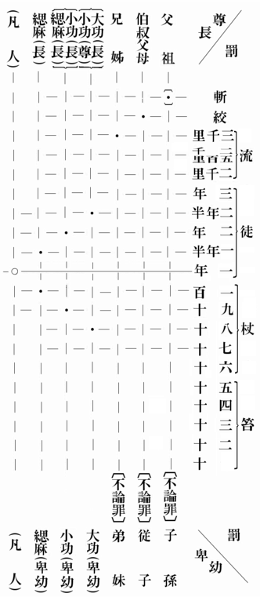
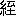

孝道は支那の國本で、又その國粹である。故に支那を對象とする研究には、先づその孝道を闡明理會せなければならぬ。既に米國の Headland も、孝道が支那人の家族的・社會的・宗教的乃至政治的生活の根據をなせる事實を牢記せねば、支那及び支那人の眞相は、到底理會することが出來ぬと明言して居る（Home Life in China. p. 154）。然るに近時我が國に於ける支那學研究は、哲學・歴史・文學の各方面に亙つて、長足の發展をなせるに拘らず、獨り支那の孝道に關する徹底した研究が、未だ發表されて居らぬのは、大なる遺憾と申さねばならぬ。若し私のこの論文が、その缺陷の萬一を補足し得ば幸甚と思ふ。
今より約百五十年前に、久しく支那に布教して居つた、フランスの宣教師の Cibot 韓國英が、「孝道に關する支那人の教理」と題する一大論文を發表した。彼は上は經傳から、下は俗諺に至るまで、すべて支那の孝道に關する記録を譯出して、當時としては驚くべき程詳細に、支那の孝道を歐洲へ紹介した。その Cibot が支那に於ける孝道の感化の廣大無邊なることに就いて、次の如く述べて居る。
三千五百年前の古代から今日まで、支那人の孝道を尚ぶ心持は、丁度スパルタ人（Lac dmone）が自由を愛し、ローマ人が祖國を愛するそれと同一である。……孝道は今日でも猶ほ【古代と同樣に、支那國内の】すべての階級、すべての地位、すべての性（Sexes）、すべての年齡の人々の、最高の道徳であり、又【支那國内の】各方面に關係し、各方面に影響し、又各方面に【最大の】勢力をもつて居る。かくて王座（Tr
dmone）が自由を愛し、ローマ人が祖國を愛するそれと同一である。……孝道は今日でも猶ほ【古代と同樣に、支那國内の】すべての階級、すべての地位、すべての性（Sexes）、すべての年齡の人々の、最高の道徳であり、又【支那國内の】各方面に關係し、各方面に影響し、又各方面に【最大の】勢力をもつて居る。かくて王座（Tr ne）も【孝道の】足下に立ち、……法廷【の裁判】も【孝道に】導かれ、學問の殿堂も【孝道に】支配され、……宮廷に於ても家庭に於ても、【孝道が】中心となり、……あらゆる一切のものは、すべて【孝道の前に】屈服する。……孝道は實に支那人の國民的道徳である。一言でも孝道に攻撃【非難】を加へるならば、それは【支那全國民に對して】戰鬪（Combat）の一合圖となるであらう。支那國民は擧つてその復讎の爲に、武器を執つて起ち、女性や子供さへも、この爭の爲に生命を惜まぬであらう（Doctrine des Chinois sur la Pit filiale 【Mmoires concernant l'Histoire,les Sciences,etc.des Chinois.Tome IV, 1779】. pp. 1-3）。
ne）も【孝道の】足下に立ち、……法廷【の裁判】も【孝道に】導かれ、學問の殿堂も【孝道に】支配され、……宮廷に於ても家庭に於ても、【孝道が】中心となり、……あらゆる一切のものは、すべて【孝道の前に】屈服する。……孝道は實に支那人の國民的道徳である。一言でも孝道に攻撃【非難】を加へるならば、それは【支那全國民に對して】戰鬪（Combat）の一合圖となるであらう。支那國民は擧つてその復讎の爲に、武器を執つて起ち、女性や子供さへも、この爭の爲に生命を惜まぬであらう（Doctrine des Chinois sur la Pit filiale 【Mmoires concernant l'Histoire,les Sciences,etc.des Chinois.Tome IV, 1779】. pp. 1-3）。
Cibot の後百年を經て、今より約五十年前に、フランスの領事で同時に支那學者として聞えた Thiersant は、『百孝圖説』の中から、二十五人の孝子の事蹟を譯出してヨーロッパに紹介した。彼はその序論に、支那の孝道に就いて、左の如く記して居る。dmone）が自由を愛し、ローマ人が祖國を愛するそれと同一である。……孝道は今日でも猶ほ【古代と同樣に、支那國内の】すべての階級、すべての地位、すべての性（Sexes）、すべての年齡の人々の、最高の道徳であり、又【支那國内の】各方面に關係し、各方面に影響し、又各方面に【最大の】勢力をもつて居る。かくて王座（Trne）も【孝道の】足下に立ち、……法廷【の裁判】も【孝道に】導かれ、學問の殿堂も【孝道に】支配され、……宮廷に於ても家庭に於ても、【孝道が】中心となり、……あらゆる一切のものは、すべて【孝道の前に】屈服する。……孝道は實に支那人の國民的道徳である。一言でも孝道に攻撃【非難】を加へるならば、それは【支那全國民に對して】戰鬪（Combat）の一合圖となるであらう。支那國民は擧つてその復讎の爲に、武器を執つて起ち、女性や子供さへも、この爭の爲に生命を惜まぬであらう（Doctrine des Chinois sur la Pit filiale 【Mmoires concernant l'Histoire,les Sciences,etc.des Chinois.Tome IV, 1779】. pp. 1-3）。
誰人でも支那の歴史を通覽する時は、先づ第一にこの尨大なる帝國が、他の如何なる民族の助力をも受けずに、全く獨力で到達し得た、【高き】文化（Civilisation）の程度に驚嘆するのである。然し【それにも増して】更に驚くべきことは、この文化が【同一の状態の儘で】極めて古代にまで溯つて居つて、この異常なる【支那】國民の過去の裡に、原始時代の痕跡を見出すことが、困難であるといふ事實である。
【支那以外の】何れの民族でも、發生し成長し、而して滅亡する。所が支那のみは、殆ど絶對的に不動（Immobilit）であつて、宛も【榮枯の】運命を無視するが如き觀がある。然らば支那は、どこからかかる【不變不斷の】生活力をもち來りつつあるか。そは【支那民族といふ】この尨大なる人間の集團を運轉さす、あらゆる機關の唯一の樞軸となるべき、一の原理（Principe）から生じて來る。即ち【支那の】最初の立法者達が、この帝國の存在及び社會の幸福のたよりとなるべき、最も鞏固なる基礎として制定し公布した、孝【道】といふ教義（Dogme）から生じて來る（La Pit filiale en Chine 【Biblioth que Orientale Elzvirienne. XVI, 1877】. pp. 1-2）。
que Orientale Elzvirienne. XVI, 1877】. pp. 1-2）。
支那の文化や社會が、Thiersant のいへる如く、しかく不變不動であるや否やは、しばらく別問題として、あらゆる支那の原動力の中樞が孝道であつて、孝道は支那に於ける國家の存在、社會の安寧、家族の平和、文化の維持の基礎をなせる事實は、正しく Cibot や Thiersant の所説の如くである。從つて孝道を理會せずには、支那の國體をも、社會をも、家庭をも、文化をも、【少くとも過去の支那を】正しく理會することが出來ぬ。然らば如何にして孝道といふ教義が、支那でしかく重要な位地を占むるに至つたか。そは畢竟夙に支那で發達した、家族制度を維持する必要に本づくものかと思ふ。【支那以外の】何れの民族でも、發生し成長し、而して滅亡する。所が支那のみは、殆ど絶對的に不動（Immobilit
）であつて、宛も【榮枯の】運命を無視するが如き觀がある。然らば支那は、どこからかかる【不變不斷の】生活力をもち來りつつあるか。そは【支那民族といふ】この尨大なる人間の集團を運轉さす、あらゆる機關の唯一の樞軸となるべき、一の原理（Principe）から生じて來る。即ち【支那の】最初の立法者達が、この帝國の存在及び社會の幸福のたよりとなるべき、最も鞏固なる基礎として制定し公布した、孝【道】といふ教義（Dogme）から生じて來る（La Pit filiale en Chine 【Bibliothque Orientale Elzvirienne. XVI, 1877】. pp. 1-2）。支那では上古から家族制度が發達して居る。否支那に限らず、古代に於ては何れの國でも、家族制度が行はれたもので、今日個人主義の盛んに行はれる西洋諸國でも、その古代に溯ると、家族制度が相當發達して、社會の單位は實に家族であつた（Maine;The Ancient Law. p. 88）。但西洋諸國では、種々の事情によつて、家族制度が崩壞され行く間に、獨り支那――支那を中心とする東亞諸國をも含めて――では、古代の儘に、若くば古代と大差なき状態に、家族制度を最近まで維持し得たのである。かくて今日では、支那と西洋諸國との顯著なる相違點の一つとして、支那では家族が社會の單位となり、西洋では個人が社會の單位と認められて居る（Smith ; The Chinese Characteristics. p. 226）。
家族制度の發達せる國々では、一般に父母の孝養や祖先の崇拜が盛で、又その家族制度を維持する爲には、必ず父母の孝養と祖先の崇拜とを奬勵せなければならぬ。行孝といひ祭祖といひ、事柄は二にして精神は一である。孝養といひ孝享――祖先の廟に供物をして祭る――といひ、對象に生と死との別あるのみで、精神は一である。何れも報本反始の情に本づくのである。家族制度の尤も發達せる支那で、同時に孝道も祭祖も、他の諸外國に比して、格段の發達を見得たのは何等の不思議がない。
支那では古代から祖先の祭を行ふに鄭重を極めた。身分ある者は、家屋を造る際に、先づ祖先を奉安すべき宗廟から着手する（『禮記』曲禮下）。家具を造る時には、第一に祖先を祭る時に要する祭具から着手する（同上）。宗廟に供へる穀物は、天子・諸侯と雖ども皆自身で耕作する（『穀梁傳』桓公十四年）。宗廟に奉仕する祭服は、王后・夫人の手で親しく紡織する（同上）。四時の新味は先づ祖先の廟に
支那では後くも周時代から宗法が出來て、同一祖先より出た一族の結合和親を目的として居る。而してこの宗法の中心は祖先崇拜に在る。故に歳時に宗家は祖先の廟に一族を會して祭を行ひ、族人は宗家に集つて祭を助け、かくて一族の親睦を圖り、長幼を序する（大正二年一月『東洋學報』所載、服部博士「宗法考」參看）。宗法の形式は次第に崩壞したけれど、その精神は後世まで傳統して、餘り相違がない。現今でも支那の世族舊家の多くは、一家毎に家廟を設け、一族毎に宗祠を建て、共同の墓地や祭田をもつて居る。生きては一族と共に、宗祠の祭に列し、死しては一族と共に、同じ塋域に葬られるのが、支那人にとつて終生の願望である。不道徳な族人や、不謹愼な族人は、同族者から懲罰として、一年間一族の宗祠の祭に列することを禁ぜられ、所謂停胙一年の懲罰を受ける。更に情状重き者は出族と稱して、一族から除外され、死後一族共同の墓地に葬ることを禁ぜられる。かかる懲罰は、支那人にとつて、大なる恥辱たると同時に、大なる苦痛で、殆ど社會に生存することが六ヶ敷い。情状最重の極惡人に對しては、一族の者が淹死（溺殺）又は活埋（生埋）の如き、嚴酷なる私刑をさへ加へるといふ（Moellendorff ; Le Droit de Famille Chinois. p. 74）。
北宋の中世に出た包拯（包孝肅）は、名高い廉剛の官吏であつたが、その子孫に、
後世子孫仕宦有二犯レ贓者一。不レ得レ放二歸本家一。死不レ得レ葬二大塋中一。不レ從二吾志一。非二吾子若孫一也（『宋史』卷三百十六）。
と遺命して居る。浙江の 縣の范氏は、支那著名の藏書家であるが、その天一閣の藏書散佚に對する防備嚴重で、勝手に閣書を帶出し、又は典鬻した者は、同族の決議により、その情状の輕重に照らして、一年三年若くば永年、祠堂に參列することを禁止すべく規定してある（『天一閣藏書總目』卷首所載、清の阮元「范氏天一閣書目序」參看）。清の曾國藩が囘天中興の偉勳を建て、聲威赫々となると、彼の郷里の湘郷に在る一族の子弟は、曾國藩を笠に不法を行ひ、知縣は制御することが出來ぬ。兩江總督として南京に駐箚して居つた曾國藩は、その事實を知ると、夫人を彼の代理として湘郷に還へした。夫人は一族の宗祠に族人を會同し、祖先の神靈の前で、不法な子弟を捕縛して之に杖數百を加へ、更に知縣の手許に交付して懲治せしめた。之に懲りて爾後曾國藩一族の子弟は、皆拘謹身を持したといふ（民國の柴萼『梵天廬叢録』卷四、曾文正公二十六則の條）。
縣の范氏は、支那著名の藏書家であるが、その天一閣の藏書散佚に對する防備嚴重で、勝手に閣書を帶出し、又は典鬻した者は、同族の決議により、その情状の輕重に照らして、一年三年若くば永年、祠堂に參列することを禁止すべく規定してある（『天一閣藏書總目』卷首所載、清の阮元「范氏天一閣書目序」參看）。清の曾國藩が囘天中興の偉勳を建て、聲威赫々となると、彼の郷里の湘郷に在る一族の子弟は、曾國藩を笠に不法を行ひ、知縣は制御することが出來ぬ。兩江總督として南京に駐箚して居つた曾國藩は、その事實を知ると、夫人を彼の代理として湘郷に還へした。夫人は一族の宗祠に族人を會同し、祖先の神靈の前で、不法な子弟を捕縛して之に杖數百を加へ、更に知縣の手許に交付して懲治せしめた。之に懲りて爾後曾國藩一族の子弟は、皆拘謹身を持したといふ（民國の柴萼『梵天廬叢録』卷四、曾文正公二十六則の條）。祖先を同くする一族は、多く宗約や宗規を作り、不道徳な族人の制裁のみでなく、一族の間に起る爭議・災厄や、一族の教育・救恤等一切の事件を處置し解決する（清の張仲嘉『齊家寶要』卷上、廣池博士『東洋法制史本論』二八五―二九六頁、Martin ; The Worship of Ancestors【Redords of the general Conference of the Protestant Missionaries of China,1890】. pp. 622-624 參看）。この宗族の結合力によつて支那國内の治安が、如何程維持されて居るかは設想に難くない。而して宗族の結合力は、祖先の崇拜を中心とするから、支那歴代の政府は、努めて祭祖の風俗を奬勵もし保護もする。「凡治レ人之道。……莫レ重二於祭一」（『禮記』祭統）といひ、「修二宗廟一。敬二祀事一。教二民追孝一也」（『禮記』坊記）といひ、「愼レ終追レ遠。民徳歸レ厚矣」（『論語』學而）といふは、皆この道理を述べたものに過ぎぬ。近く清の雍正帝はその『聖諭廣訓』中に、立二家廟一篤二宗族一を以て、天下太平の本源と斷定して居る。かくて支那では、古代から祭器や墓地の賣買を許さぬ（『禮記』王制、『孟子』參看）。元時代には祖先の墓地や墳墓の樹木（丘木）の賣買を嚴禁した（『元典章』卷五十、發塚の項參看）。更に清時代には、宗祠を建置せる土地や、宗祠の費用を供すべき田地をも、決して賣買を許可せぬ。情状を知悉しながら買取つた者は、その土地又は田地を原所有者に返還し、支拂金は官憲に沒收される（『清國行政法』卷二、二六九頁）。かかる規定は、墳墓や宗祠の神聖を保つ宗教上の目的もあらうが、寧ろ祭祖の風は國體上・社會上、之を維持せざるべからずといふ、政治上の目的に由るものと想ふ。
父母は現實の祖先である。祖先をしかく崇拜する支那人は、勿論父母に孝養を怠らぬ。孝道第一の儒教の勢力と、孝治主義の歴代政府の方針とは、愈
 この風を助長させた。子は如何なる場合でも、父母に絶對的服從を要する。これが支那人の孝道である。たとひ父母が非理でも不道でも、子の立場としては之に違背してならぬ。舜が頑
この風を助長させた。子は如何なる場合でも、父母に絶對的服從を要する。これが支那人の孝道である。たとひ父母が非理でも不道でも、子の立場としては之に違背してならぬ。舜が頑 な父母に事へた事蹟――勿論その大部分は、後世の附會・修飾としても――が、子の父母に對する手本である。父母に孝順といふ教訓は、上は天子より下は庶人に至る迄、必ず遵奉さるべき教訓である。如何なる事情があつても、子として父母に反抗するなどは、支那人の道徳として、考へ得ざることである。萬一父母に從順を缺き、反抗を敢てする者は、如何なる位置の人でも、支那の社會に存在することが出來ぬ（２）。
な父母に事へた事蹟――勿論その大部分は、後世の附會・修飾としても――が、子の父母に對する手本である。父母に孝順といふ教訓は、上は天子より下は庶人に至る迄、必ず遵奉さるべき教訓である。如何なる事情があつても、子として父母に反抗するなどは、支那人の道徳として、考へ得ざることである。萬一父母に從順を缺き、反抗を敢てする者は、如何なる位置の人でも、支那の社會に存在することが出來ぬ（２）。支那人は庭訓に笞の用意を忘れぬ。父の字は篆文に
唐時代に浙西の觀察使となつた李景讓は、部下の將校を虐待したといふので、部下の軍隊の感情を害し、部下が一致して之に反抗し、將に一大事變が突發せんとした。李景讓の老母鄭氏は事急なりと見て、李景讓を呼び寄せて、その不謹愼なる行爲を譴責し、庭前に跪座せる彼の衣を剥ぎ取り、楚撻を加へんとしたから、四周環視の軍士達も之に感動して、事なく落著したといふ（３）。王僧辯や李景讓は、老成の達官でも、親の笞を從順に受ける例證である。
清初の功臣洪承疇の如きも、王僧辯や李景讓と同樣に、その母の笞を受けて居る。洪承疇はもと明の總督として遼東を防禦したが、戰敗して俘虜となり、遂に清に降參した。彼は呉三桂につぐ漢人の功臣として、清廷から大に優遇を受けた。かくて彼は郷里の福建から、老母を北京に迎へ取つて、孝養を盡さんとしたが、老母は北京に入り來り、彼と對面匆々、彼が明に背き清に降つた不忠不義を責めて、散々に杖撃を加へたといふ（清の劉獻廷『廣陽雜記』卷一）。母の折檻の例のみを擧げたのは、父の折檻は普通であるから、之を略した結果に過ぎぬ。
英國の宣教師 Gray は廣東地方で目撃した事實として、船乘りの青年が賭博に負けて、老母にその尻拭ひをさせた爲め、老母の怒に觸れ、怒れる老母は、その青年を船から河中に突き沈め、浮び上ると又突き沈め、再三繰り返へしたが、この青年は決して反抗せなかつた事實や、又杭州地方で目撃した事實として、三十歳の男子が母親の臍繰りを盜み出しては、酒を飮み廻つて居たが、或る日泥醉して家に歸る所を、老母に見付けられ、六十歳の老母は、片手でその子の辮髮を掴み、片手で激しく之を亂打したが、泥醉者は羊の如く柔順に、老母の爲す儘に身を委ねた事實を傳へて居る（China. Vol. I, pp. 234-235）。高位大官といはず、田夫野人といはず、一律に父母に絶對的服從を行ふことが、支那の特色で、又支那の國粹である。
支那の政治組織は、一種の家長政治（Patriarchy）である。家族は天下の原型（Prototype）である。支那人の所信に據ると、天下は大なる家族で、家族は小なる天下である。故に國を國家といひ、天下を天家といひ、又天下一家ともいふ。この國家や天家といふ成語の中に、家を國や天下の原型とする思想が、よく
天下と家族とは、ただ範圍の廣狹の差あるのみで、實質には何等の相違がない。小天下の君が父で、大家族の父が天子である。故に天子を民父母といひ（『書經』洪範）、人民を【天子の】赤子といふ（『書經』康誥）（５）。一家の中で父に孝を盡くす心が、その儘天子に對する忠の心である。忠と孝とは實質同一である。故に『禮記』に「忠臣以事二其君一。孝子以事二其親一。其本一也」（祭統篇）と述べてある。親に孝を盡くす者は、自然天下の父母たる天子にも孝を盡くす。それが即ち忠である。孝の外に別に忠を勸める必要がない。これが『禮記』に「孝以事レ君」（坊記）といひ、『孝經』に「君子之事レ親孝。故忠可レ移二於君一」（廣揚名章）といひ、「以レ孝事レ君則忠」（士章）といひ、『戰國策』に「父之孝子。君之忠臣也」（趙策）といひ、更に『孝經緯』に「求二忠臣一必於二孝子之門一」（『後漢書』韋彪傳所引）といふ諺が、支那人の間に、不動不變の眞理として服膺される所以である。
支那は古來君主專制の國であつた。從つて勿論忠君にも重きを置くが、孝行とは比較出來ぬ。忠孝と並べても、支那では多くの場合、孝が第一に置かれる。孝といふ字は、子の親に對する道徳のみを表はすが、忠の字は必ずしも臣の君に對する道徳のみに限らぬ。『説文解字』に孝の字を解して、「善事二父母一者。从レ老省。从レ子承レ老也」（卷八上）とある。即ち孝とは子と老との二字から成る會意文字で、子が上に老親を頂き、之に從順なるを意味すべき文字である。南宋の王遂は「學
 『養新録』卷四、宋人不講六書の條參看）、かかる附會の説も畢竟は支那の學問といひ教育といひ、すべて孝道を第一とする所から起つた結果かと思ふ。
『養新録』卷四、宋人不講六書の條參看）、かかる附會の説も畢竟は支那の學問といひ教育といひ、すべて孝道を第一とする所から起つた結果かと思ふ。忠の字は中と心との二字から合成した文字で、心の一方に偏私するなきをいふ。『説文解字』（卷十下）に忠トハ敬也と解釋してあるが、それよりも『左傳』（成公九年）に無レ私忠也とあるのが、忠の字の本義であらねばならぬ。故に古くは忠信と並べ稱するのが普通であつた。此の如く忠とは汎く他人に對して眞心を盡くすことで、（一）朋友に對して眞心を盡くすをも、忠といふべく、（二）君上に對して眞心を盡くすをも、忠といふべく、（三）臣民に對して眞心を盡くすをも、等しく忠と稱することが出來る。『論語』（學而）に爲レ人謀而不レ忠乎とあるは、同輩に對する忠をいひ、『左傳』（僖公廿三年）に「子之能仕。父教二之忠一」とあるは、君上に對する忠をいひ、同じく『左傳』（桓公六年）に上思レ利レ民忠也とあるは、君上の臣民に對する忠をいふ。かくて支那の古代には、君に對して盡くすべき義務を説いた特別の文字がなかつた。忠を主として忠君の意味に解する樣になつたのは、後世のことで、恐らく戰國の頃から秦漢にかけてのことで、之と共に忠が孝に配して、忠孝と並べ稱せらるるに至つたかと想ふ。
支那歴代の天子は、以レ孝治二天下一（『孝經』孝治章）といふ金言を奉じ、孝道奬勵を以て、政治の第一要諦とする。孝行の者には、或は官爵を與へ、或は旌表を加へ、或は賦租を免じて奬勵する。あらゆる經書の中でも、特に『孝經』の講習を勸進する。かくて東晉の元帝に『孝經傳』があり、孝武帝に『孝經講義』があつたといふ（『欽定四庫全書總目』卷卅二參看）。また梁の武帝は『孝經義疏』を作り、簡文帝も亦『孝經義疏』を作つた（『隋書』經籍志參看）。唐には玄宗の『御注孝經』があり、清には順治帝の『御注孝經』があり、康煕帝の『孝經衍義』があり、更に雍正帝の『御纂孝經集注』がある（『欽定四庫全書總目』卷卅二及び『聖諭廣訓』參看）。『孝經』に限つてしかく疊次に、天子が親しく注解を加へられる所以は、畢竟孝治の主意を、臣民に宣諭する爲めに外ならぬ（６）。
漢時代に諸州に孝經師を置いた（『後漢書』百官志四）。孝經師とは丁度わが國の府縣の視學官の如く一州の教育を掌どる役人である。その役人を孝經師と稱するのが、即ち當時の教育は『孝經』の講習を第一に置く證據である。東漢の末期に涼州地方に寇叛絶えざるを憂ひ、該地方の家毎に『孝經』を講習せしめて、人心を緩和せんと計畫したこともある（『後漢書』蓋勳傳）。唐の玄宗の天寶三載（西暦七四四）に、天下に勅して、家毎に『孝經』一本を備へて講習せしめた（『唐會要』卷卅五、經籍の項）。我が國も唐の制にならひ、孝謙天皇の天平寶字元年（西暦七五七）の勅で、天下家毎に『孝經』一本を備へて講習を勤むべきを命じて居る（『續日本紀』卷二十）。元の武宗は大徳十一年（西暦一三〇七）に、蒙古語譯の『孝經』を諸王以下に下賜された。『元史』（卷廿二）の武宗本紀に、左の記事が見當る。
【八月】辛亥中書右丞孛羅鐵木兒 。以二國字譯孝經一進。詔曰。此乃孔子之微言。自二王公一達二於庶民一。皆當二由レ是而行一。其命二中書省一。刻板模印。諸王而下。皆賜レ之。
この蒙古語譯の『孝經』と共に聯想さるるのは、後魏時代の鮮卑語譯の『孝經』である。南宋の鄭樵は後者に就いて、次の如く述べて居る。
國語孝經一卷
魏氏遷レ洛。未レ達二華語一。孝文帝命二侯伏侯可悉陵一。以二夷語一譯二孝經之旨一。教二國人一。
鮮卑語や蒙古語で『孝經』を譯出したのは、種人（塞外種族）に講習せしめん爲で、自己の種人にまで、しかく熱心に『孝經』の講習を勸めた後魏の孝文帝や元の武宗が、その領内の漢人に對して、一層之を勸進せしこと想像に難くない。清の順治帝の六諭の第一に、孝二順父母一を置き、康煕帝の上諭十六條の第一に、敦二孝弟一以重二人倫一を置いてある。皆孝治主義を以て、平天下の要諦と認めて居る證據に外ならぬ。この順治・康煕二帝の上諭は、實に新時代の支那の教育勅語で、丁度我が國の臣民が、明治天皇の教育勅語に對すると同樣に、當時の官民は、この上諭の主旨の宣講と貫徹とに全力を盡くした（『清國行政法』卷三、三九八―四〇〇頁參看）。この二上諭の意義を敷衍した『六諭衍義』や『聖諭廣訓』は、廣く徳川時代に行はれ、我が國の風化にも、大なる裨益を寄與して居る。
しかのみならず支那の天子は、古代から親しく養老の禮を行ひ、萬民に孝弟の範を示した。即ち天子親しく大學にのぞみ、天下の有徳の老人を選んで三老・五更となし、三老を父に擬し、五更を兄に擬し、之に對して子弟の禮を執るべく、萬人環視の中に、天子の尊を屈して、親しく酒を勸め魚を侑める。『禮記』の祭義に、
食二三老五更於大學一。天子袒而割レ牲。執レ醤而饋。執レ爵而酳。冕而 レ干。
レ干。
と記せる通りである。明の丘濬はその『大學衍義補』（卷七十九）に、この養老の禮の目的に就いて、次の如く述べて居る。レ干。臣按。王者之養レ老。所三以教二天下之孝一也。必於レ學者。學所三以明二人倫一也。人倫莫レ先二於孝弟一。……人君致二孝弟於其親長一。下之人無レ由二以見一也。故於二學校之中一。行二養老之禮一。使レ得二於聽聞觀感一者曰。上之人於二夫人之老者一。尚致二其敬一如レ此。矧其親屬乎。萬乘之尊且如レ此。吾儕小人。所レ宜二興起感發一也。
天子が養老の禮を行ふことは、古典に載せられた空な理想でなく、後世にも實行された確な事實である。東漢の孝明帝とか、曹魏の高貴郷公とか、後魏の孝文帝とか、北周の武帝とか、養老の禮を擧行した天子は決して稀有でなかつた（『玉海』卷七十四參看）。唐の『大唐開元禮』（卷百四、皇帝養老於太學の項）以來、養老の儀注が詳細に規定されて居るのみで、天子の絶えて之を實行する者がないのは、遺憾といはねばならぬ。清の康煕帝や乾隆帝の擧行した千叟宴は、老人優遇の意が主となつて居るけれど、同時に孝弟奬勵の意も加はつて居る。（『九通分類總纂』卷八十七、嘉禮二、養老の項參看）。兩漢の天子は、西漢の高皇帝（劉邦）と東漢の光武帝（劉秀）との二人を除くの外、すべてが孝といふ諡をもつて居る。西漢の孝文帝とか孝武帝とか孝宣帝とか、東漢の孝明帝とか孝章帝とか、皆孝の諡をもつて居る。田延年謂ふ所の「漢之傳諡。常爲レ孝者。以下長有二天下一。令中宗廟血食上也」（『漢書』霍光傳）がそれである。隋以前の支那の天子の諡は、一字が普通で、二字の諡も多いが、二字以上の諡はない。一字の諡の場合は、勿論孝の諡は稀で、二字の諡の場合でも、孝の諡をもたぬ天子があるが、こはもつべき筈を省略したものと認むべきであらう。諡者行之迹也（『逸周書』諡法解）とある通り、その人の生前の行爲に相當した、死後の諡號を定むべきである。孝を以て天下を治むべき、又君たると同時に師たるべき、支那の天子にとつては、孝がその第一必須の資格であらねばならぬ。諡法に慈惠愛レ親曰レ孝と定めてある以上、支那の天子は皆孝の諡をもつべき筈である。もつべき筈の孝といふ諡を缺いて居るのは、略したのである。一字や二字の諡の場合には、その天子の特質を示すべき諡に止めて、天子に共通なるべき孝の諡を略したものと、解釋せなければならぬ。
唐宋以後天子の諡の字數が次第に増加して、一字二字の諡が五字七字となり、更に十數字に増し、清時代には二十字以上の諡が普通となつた（７）。それで唐宋以後の天子の諡には、必ず孝の字が加つて居る。夷狄出身で、支那の一部又は全部を統治した、遼・金・元・清の天子と雖ども、その諡に孝の字を缺く者は、先づ絶無と斷じて間違ない。ただ明の太祖の諡は、開天、行道、肇紀、立極、大聖、至神、仁文、義武、俊徳、成功、高皇帝といひ、孝の字を缺いて居る。明の孝宗の諡は、達天、明道、純誠、中正、聖文、神武、至仁、大徳、敬皇帝でこれも孝の字が見當らぬ。此の如きは實に稀有の例である。然し考一考すると、この二天子の諡に孝の字を缺いても、何等不思議がない。そは太祖の陵號を孝陵といひ、孝宗の廟號を孝宗といひ、廟號と陵號とに孝の字を有するからである。孝治主義の支那の天子が、その諡號にも陵號にも廟號にも、全然孝の字を缺くが如きは、支那の國體上あり得べからざることと申さねばならぬ。
支那の天子は如何に暗愚でも、天下を治むる間は、決して孝道を忘れぬ。唐の敬宗は史臣も「寶暦不レ君。國統幾絶」（『舊唐書』卷十六、贊）と評した通り、政治を放擲して遊樂に耽溺した不徳の君主であるが、それでも流石に以レ孝治二天下一だけの用意はもつて居つた。敬宗の時代に、國都長安附近の※［＃「樗のつくり＋おおざと」、U+9120、22-7］の縣令の崔發といふ者が、その管内で狼藉した宦官を、天子の御使者たることを知らずに、差押へたことがある。天子の御使者を捕縛するのは大不敬でもあり、且つ平素から宦官を信任する敬宗のこととて、崔發の行爲を不埒千萬として、之を獄に下し、崔發は獄中で宦官の爲に大なる凌辱を受けた。崔發の事情憐むべきものがあるので、百官が交る交るその放免を嘆願したが、敬宗は頑として聽かぬ。所が最後に敬宗に信任された節度使の李逢吉は、崔發には年八十の老母があり、その老母が崔發の身を心配して、病褥に臥せる事實を告げ、孝道の爲に枉げて崔發を放免せんことを請ふと、敬宗はこの一言に感動して、即刻崔發を出獄させた。『資治通鑑』にこの事實を次の如く記載してある。
李逢吉等從容言二於上一曰。崔發輙曳二中人一。誠大不敬。然其母故相韋貫之之※［＃「女＋（「第−竹」の「コ」に代えて「ノ」）、「姉」の正字」、U+59CA、22-14］也。年垂二八十一。自二發下一レ獄。積憂成レ疾。陛下方以レ孝理二天下一。此所レ宜二矜念一。上乃愍然曰。比 諫官但言二發冤一。未三嘗言二其不敬一。亦不レ言レ有二老母一。如二卿所一レ言。朕何爲不レ赦レ之。即命二中使一。釋二其罪一。送歸レ家。仍慰二勞其母一（唐紀五十九、寶暦元年の條）。
敬宗の如き暗君でも、孝治といふ大憲法の前に、羊の如く從順なる點が、誠に面白いではないか。北宋の徽宗は資性風流多藝ではあつたが、要するに亡國の君である。現に史臣も國破れ身辱られた靖康の難の責任は、徽宗とその宰臣蔡京の負ふべきものと斷じて居る（『宋史』卷廿二、徽宗本紀贊）。かかる徽宗、かかる蔡京でも、流石に以レ孝治二天下一といふ責任だけは忘れなかつた。徽宗時代に民間で父を殺した嫌疑者が出來て、獄に繋がれた。徽宗はこの不祥事件の發生について、非常に心痛した。若しこの事件が世間に公表されると、孝を以て民を化し得ざりし不徳の君主として、醜名を千歳に流さねばならぬ。かかる不面目を避くる爲め、徽宗は宰相の蔡京と相談の上、典獄に旨を傳へ、その嫌疑者を獄中で自殺せしめ、親殺し事件を暗から暗に葬り去つたことが、南宋初期の蔡絛の『鐵圍山叢談』（卷二）に、下の如く記載してゐる。
政和甲午（四年＝西暦一一一四）有レ告三人殺二其父一。王府獄具。祐陵（徽宗）與レ魯（魯國公蔡京）深恥レ之。不レ欲レ泄。第 命二於獄一。賜レ盡焉。
徽宗の採つた方法は勿論贊成すべきでない。彼は先づ反省して、かかる不祥事件の再發せざる樣心掛くべき筈であつた。嫌疑者を自殺せしめ、事件を暗に葬つて、天下後世の耳目を蔽ふなどは、大いに間違つて居る。されど方法の間違ひは間違ひとして、その間に徽宗や蔡京の如き亡國の君相でも、以レ孝治二天下一といふ傳統政策にに對する責任感が、存外鋭敏である點が、見逃がし難いと思ふ。孔子の大成した儒教は家族主義で、孝弟がその教義の中心をなして居る。「述而不レ作。信而好レ古」と自稱する孔子の教義が、家族主義であり、孝弟を重んずるのは、勿論その時代の影響を受けた結果ではあるが、儒教が成立し、儒教が勢力を得ると、その儒教が、支那に於ける家族主義の維持や孝道の奬勵に、大なる寄與をなした。
孔子の教義では、仁が第一となつて居るが、その仁の字は人と二から成立する。即ち仁とは人が人と相竝ぶを意味する文字である。人と人と相對する時、始めて親愛の情が發生するので、單獨では親愛の情が發生せぬ。故に東漢の許愼の『説文解字』には、仁親也と解し、清の段玉裁は、更に仁親也の意味を敷衍して、
獨則無レ 。則相親。故其（仁）字从二人二一（『段注説文解字』第八篇上）。
。則相親。故其（仁）字从二人二一（『段注説文解字』第八篇上）。
と述べて居る。人が人と親愛するのは、親（母）子の愛情から始まる。親といふ一個の漢字で、父母をも愛情をも兼ね表はすのは、かかる理由に本づくことと思ふ。親子の愛の次に現はれるのが、兄弟の愛である。故に親子・兄弟間の愛即ち孝弟が、仁の根本と認めねばならぬ。『論語』學而にも、。則相親。故其（仁）字从二人二一（『段注説文解字』第八篇上）。君子務レ本。本立而道生。孝悌也者。其爲二仁之本一歟。
と明記してある。この語は『論語』には有子曰とあるが、或は孔子曰としても傳へられて居る（清の
 『四書考異條考』三）。有子曰か孔子曰か、何れが正しいかはしばらく措き、兔に角儒教では、孝弟を仁の本と認めて居ることは疑を容れぬ。『孝經』に孝徳之本也（開宗明義章）とあるのも、徳之本は即ち仁之本で、同一の意味を述べたものであらう。
『四書考異條考』三）。有子曰か孔子曰か、何れが正しいかはしばらく措き、兔に角儒教では、孝弟を仁の本と認めて居ることは疑を容れぬ。『孝經』に孝徳之本也（開宗明義章）とあるのも、徳之本は即ち仁之本で、同一の意味を述べたものであらう。孝弟は仁の本で、仁そのものでない。孝弟の愛情の及ぶ所は、血屬の父兄の間に止り、範圍が狹い。仁の愛情の及ぶ範圍は、より廣大であらねばならぬ。故に孔子の教義では、孝弟といふ血屬的愛情を、普遍的愛情の仁に擴大する方法として、忠と恕とを必要とする。忠とは上に已に紹介した無レ私忠也（『左傳』成公九年）とあるのが本義で、公平無私なるをいふ。恕とは文字の制作の示す如く、人も亦己の如しとして同情するをいふ。以レ己量レ人謂二之恕一（西漢の賈誼『新書』道術篇）とあるのが、恕の本義である。唐の孔穎達が忠恕の二字に就いて下した、「如心曰レ恕。如下從レ心。中心曰レ忠。中下從レ心」（『周禮注疏』卷十、郷三物一曰六徳の疏）といふ解釋が要領を得て居る。忠と恕とを區別すると、忠は自己に對する制裁で、恕は他人に對する同情である。一は消極的一は積極的の相違はあるが、この兩者は相倚り相助くべきものである。
人が自己以外の人を愛する感情、即ち仁の萌芽が、先づ孝弟として發露するのであるが、孝弟のみでは自己の血屬といふ小範圍の人々を親愛するに過ぎぬ。この父子・兄弟の小範圍に限られた愛情を、一般人衆といふ大範圍に推し及ぼす必要がある。それには忠と恕とによつて、自他彼此の差別を打破せなければならぬ。忠恕の方によつて、孝弟の心を極端まで推し及ぼすと、天下一家、四海兄弟といふ、博愛的仁に到達することが出來る。『孟子』に、
老二吾老一以及二人之老一。幼二吾幼一以及二人之幼一。天下可レ運二於掌一。……擧二斯心一加二諸彼一而已矣。故推レ恩足三以保二四海一。不レ推レ恩無三以保二妻子一。古之人所二以大過一レ人者。無レ他焉。善推二其所一レ爲而已矣（梁惠王下）。
とあるのは、この意味を述べたものである。孝弟は仁の根本で、仁は孝弟の發展である。而してこの二者を連絡するものは、實に忠恕である。孝弟と忠恕と仁との三者は、孔子の教義に於て、鼎足の姿をなして居る。その一を缺く時は、孔子の教義は成立し難い。孔子の教義の出發點（孝）から、歸着點（仁）までの連鎖が、忠恕であるから、忠恕が孔子の教義を一貫するともいへる。故に『論語』に孔子と曾子との應對を記して、孔子が吾道一以貫レ之（里仁）といひ、曾子は之を「夫子之道忠恕而已矣」と解して居る。
擴張された仁は、殆ど博愛に近い。現に唐の韓愈の如き儒者は、博愛之謂レ仁（『韓昌黎集』卷十一、原道）と明言して居る。されど孔子の仁は孝【弟】を本とし、之を擴大したものに過ぎぬ。故に根本たる孝【弟】と絶縁せざる以上、仁の範圍が如何に擴大されても、その範圍の中に、親疎を附すべき餘地が存せねばならぬ。孔子の仁は、墨子の兼愛の如き無差別的博愛でなく、實に差別的博愛である。申す迄もなくこの相違が、孔・墨二家を區別すべき要點で、この相違を明確にしたのは、實に孟子である。彼は儒教の仁と墨家の兼愛とを區別せんが爲に、仁と義とを併せ説き、仁を行ふには必ず義によつて、親疎の差別を立つべき必要を説き、義を離れた、換言すれば孝【弟】と絶縁した仁は、儒家の仁でないと主張した。この解釋は儒家の憲法である。故に孝【弟】を離れて儒教は存在することが出來ぬ（８）。孟子は「堯舜之道。孝弟而已矣」（『孟子』告子）というて居る。その堯舜を祖述したのが孔子であれば、孔子之道孝弟而已矣と稱しても、大なる不可のある筈がない。かの孝道を説く『孝經』が、儒教の經典中で重要なる位置を占むべき所以は、全くここに存すると思ふ。
飜つて本論文の主題である支那の法律を見渡すと、この方面でも、否この方面に於て、家族主義と孝道第一主義が尤も鮮明に發揮されて居る。一體支那の法律は、徳治主義の法律で、法治主義の法律でない。徳治主義の法律とは、その法律が道徳の延長といふ意味である。支那の政治家も、法律は治國上必要と認めて居るが、同時に禮と刑とは、同一の目的を有すべきものと信じて居る。禮は未發に防ぎ、刑は既發に懲らす、別あるのみ。禮の及ばざる所を補ふのが刑である。禮は本で刑は末、禮は主で刑は從、本末主從の差こそあれ、二者の目的は同一であらねばならぬ。これが支那の政治家の信條である。『論語』爲政に、
道レ之以レ政。齊レ之以レ刑。民免而無レ恥。道レ之以レ徳。齊レ之以レ禮。有レ恥且格。
といひ、『史記』酷吏傳序に、法令者治之具、而非二制レ治清レ濁之源一也。
といふ。何れも禮本刑末の主意を述べたもので、此の如きを徳治主義の法律と申すのである。已に述べた如く、支那の禮儀道徳は、家族主義を基礎として、孝道を第一とする。故に徳治主義の法律といふも、孝道第一主義の法律といふも、内容に大差がない。支那の法律が、家族主義や孝道第一主義に重きを置くのは、當然のことといはねばならぬ。支那歴代の法律は、唐律を始め、明律でも清律でも、一々の犯罪に對して、家族又は親屬同志の間に起つた場合と、家族又は親屬以外の一般人衆の間に起つた場合とを區別する。一般人衆の場合には、原則として同一の犯罪は、同一の刑罰を受ける。例へば甲が乙を殺傷した場合も、その反對に乙が甲を殺傷した場合も、犯罪者は同一の刑罰を受けねばらなぬ。所が家族又は親屬間の場合には、この原則は通用せぬ。この場合には、その犯罪者の家族又は親屬間に於ける、尊卑長幼の位置如何によつて、同一の犯罪も、寧ろ同一の刑罰を受けぬことが多い。加害者と被害者との、尊卑長幼の關係如何によつて、刑罰が非常に違ふ。尊長が卑幼に加へた罪は、一般の場合よりその罰が輕く、卑幼が尊長に加へた罪は、一般の場合よりその罰が重い。
例へば『唐律』（鬪訟律一）に據ると、他人を毆打した罰は笞四十であるが、一族の尊長を毆打した場合は（鬪訟律二）、その親疎の關係に應じて、左の如き重き罰を加へる。
（一） 麻長屬（族兄※［＃「女＋（「第−竹」の「コ」に代えて「ノ」）、「姉」の正字」、U+59CA、27-15］等＝三從兄※［＃「女＋（「第−竹」の「コ」に代えて「ノ」）、「姉」の正字」、U+59CA、27-15］等）を毆打せし者 杖一百
麻長屬（族兄※［＃「女＋（「第−竹」の「コ」に代えて「ノ」）、「姉」の正字」、U+59CA、27-15］等＝三從兄※［＃「女＋（「第−竹」の「コ」に代えて「ノ」）、「姉」の正字」、U+59CA、27-15］等）を毆打せし者 杖一百
（二）小功長屬（再從兄等）及び麻尊屬（族伯父母等）を毆打せし者 徒一年
（三）大功長屬（從兄等）及び小功尊屬（堂伯父母等）を毆打せし者 徒一年半
（四）兄※［＃「女＋（「第−竹」の「コ」に代えて「ノ」）、「姉」の正字」、U+59CA、28-1］を毆打せし者 徒二年半
（五）伯叔父母等を毆打せし者 徒三年
（六）祖父母及び父母を毆打せし者 斬
即ち麻長屬（族兄※［＃「女＋（「第−竹」の「コ」に代えて「ノ」）、「姉」の正字」、U+59CA、27-15］等＝三從兄※［＃「女＋（「第−竹」の「コ」に代えて「ノ」）、「姉」の正字」、U+59CA、27-15］等）を毆打せし者 杖一百（二）小功長屬（再從兄等）及び
麻尊屬（族伯父母等）を毆打せし者 徒一年（三）大功長屬（從兄等）及び小功尊屬（堂伯父母等）を毆打せし者 徒一年半
（四）兄※［＃「女＋（「第−竹」の「コ」に代えて「ノ」）、「姉」の正字」、U+59CA、28-1］を毆打せし者 徒二年半
（五）伯叔父母等を毆打せし者 徒三年
（六）祖父母及び父母を毆打せし者 斬
若し毆打して相手を負傷させ、その結果手足の指を折ると、他人同志の場合には、徒一年の罪を受けるが、兄※［＃「女＋（「第−竹」の「コ」に代えて「ノ」）、「姉」の正字」、U+59CA、28-6］に對する場合は、流三千里に處して、凡人より七等重く、伯叔父母を毆打負傷させた場合は、絞罪に處して、凡人より八等を加重する。祖父母・父母は單に毆打するのみでも斬罪であるから、負傷させた場合は、理論上斬罪以上に處せられねばならぬ。されど實際としては斬罪が極刑で、それ以上の刑罰が存せぬから、矢張り斬罪に處する。かく一族中の卑幼が尊長に對する罪は、凡人の場合より嚴重に處分するが、その反對に、尊長から卑幼に加へる罪は、凡人の場合より餘程輕減する。例へば毆打してその手足の指を折つた場合でも、
試みに『唐律』によつて、他人同志ならば、徒一年に當該すべき毆打折傷――諸鬪二毆人一……折二手足指一。若破レ骨者徒一年――事件が、家族や親屬の間に起つたと假定し、この場合に加害者と被害者との、尊卑長幼の關係如何によつて、同一の事件に對する罰の相違を圖示すると、左の如くである。

毆打折傷の場合に限らず、支那歴代の法律は、各方面に渉つて、この主義を發揮して居る。重きは
麻支那の法律は古代から、不孝に對して最重の懲罰を加へる。『呂氏春秋』（卷十四、孝行覽）に「商書曰。刑三百。罪莫レ重二於不孝一」とあるに據ると、殷時代から不孝に最重の懲罰を科したものと認めねばならぬ。『孝經』（五刑章）に「五刑之屬三千。而罪莫レ大二於不孝一」といふ。『書經』の呂刑篇に據ると、周時代の刑罰は、「墨刑之屬千。
 刑之屬千。
刑之屬千。 刑之屬五百。宮刑之屬三百。大辟之屬二百」で、併せて五刑之屬三千となる。周時代にも三千の數多き罪惡の中で、不孝を首惡として、之に最重の懲罰を科した證據である。この精神は支那歴代の法律に繼承されて居る。
刑之屬五百。宮刑之屬三百。大辟之屬二百」で、併せて五刑之屬三千となる。周時代にも三千の數多き罪惡の中で、不孝を首惡として、之に最重の懲罰を科した證據である。この精神は支那歴代の法律に繼承されて居る。支那の法律は不孝を最大罪惡と認めるから、孝道の精神に背き、孝道の形式を忽にする如き行爲は、如何なる場合でも、決してその儘に看過せぬ。一見したのみでは、特に法文に掲ぐるに及ばぬかとさへ思はれる微細な怠慢でも、驚くべき重い罰を加へる。例へば『唐律』の十惡の一に不孝がある。その不孝とは、
謂下告二言詛三詈祖父母・父母一。及祖父母・父母在。別レ籍異レ財。若供養有レ闕。居二父母喪一。身自嫁娶。若作レ樂。釋レ服從レ吉。聞二祖父母・父母喪一。匿不レ擧レ哀。詐稱中祖父母・父母死上（『唐律』名例律一）。
と解釋してある。即ち（一）祖父母・父母を告訴するもの、（二）祖父母・父母を惡口するもの、（三）祖父母・父母の生存中に、子孫兄弟同志が別家するもの、（四）祖父母・父母に對して十分に供養せざるもの、（五）父母の喪中に嫁娶するもの、（六）父母の喪中に奏樂するもの、（七）父母の喪中に喪服を着けざるもの、（八）祖父母・父母の喪を匿くすもの、（九）祖父母・父母の喪を詐り稱するものは、何れも不孝の中に列せられねばならぬ。此等の行爲は勿論不都合であるが、中には今日の私共から觀ると、特に十惡に加へるに及ばぬかと思はれる程輕微（？）な非行もある。親の喪に對する怠慢の場合の如きそれである。されど『唐律』の之に對する處分は、可なり嚴重に、喪制未レ終。釋レ服從レ吉。若忘レ哀作レ樂（自作遣レ人等）徒三年。雜戲徒一年。即遇レ樂而聽。及參二預吉席一者。各杖一百（職制中）。
と掲げてある。親の喪は一番重く、所謂三年の喪で――母の喪は父の喪に比して多少輕重があり、『唐律』では父は斬衰三年、母は齊衰三年と區別して居るが、喪期は等しく三年である――その三年といふ期間には異説があつて、東漢の鄭玄は二十七個月といひ、曹魏の王肅は二十五個月といふ。後世では一般に鄭玄の説が遵奉されて居る（清の趙翼『※［＃「こざとへん＋亥」、U+9654、31-8］餘叢考』卷三、三年喪の項參看）。二十五個月としても二十七個月としても、この長い期間を全然世間と隔離して、身神一切の禁欲を行ふことは、中々容易の業でない。上に引用した『唐律』（職制中）の本文は、種々の條項を網羅してあるが、説明の便宜上區別すると、次の如くである。
（一）釋レ服從レ吉とは、その期間に當然着くべき喪服を釋きて、吉服を着くる者は、徒三年に處せらる。
（二）忘レ哀作レ樂とは、喪中に音樂を奏するをいふ。親しく樂器を執りて奏樂する場合も、又は樂人をして奏樂せしむる場合も、一律に徒三年に處せらる。
（三）雜戲とは樗蒲・雙陸・圍碁・將棊の類を指す。喪中雜戲を行へば、徒一年に處せらる。
（四）遇レ樂而聽とは、自身の發意にあらずして、遇然途中で樂隊に出遇ひし時、又は我が門前に樂隊來りし時、その奏樂を聽くをいふ。杖一百に處せらる。
（五）參二預吉席一とは、喪服を着けつつ宴會に參席するをいふ。杖一百に處せらる。若し吉服を着けば、釋レ服從レ吉の條項に照らして、徒三年に處せらるべきこと申す迄もない。
就中（一）釋レ服從レ吉、（二）忘レ哀作レ樂の場合は、上掲の處罰を受くる上に、既に紹介した如く、十惡中の不孝に該當すべき名教違背の行爲として取扱はれる。從つて身分ある者に限つて與へられた、議・請・減・贖等の特典を受けることが出來ぬ。親の喪に在つて、哀を忘れる如き不孝者は、如何なる身分ある者でも特典を與ふるに及ばぬといふ主意に本づくのである。（二）忘レ哀作レ樂とは、喪中に音樂を奏するをいふ。親しく樂器を執りて奏樂する場合も、又は樂人をして奏樂せしむる場合も、一律に徒三年に處せらる。
（三）雜戲とは樗蒲・雙陸・圍碁・將棊の類を指す。喪中雜戲を行へば、徒一年に處せらる。
（四）遇レ樂而聽とは、自身の發意にあらずして、遇然途中で樂隊に出遇ひし時、又は我が門前に樂隊來りし時、その奏樂を聽くをいふ。杖一百に處せらる。
（五）參二預吉席一とは、喪服を着けつつ宴會に參席するをいふ。杖一百に處せらる。若し吉服を着けば、釋レ服從レ吉の條項に照らして、徒三年に處せらるべきこと申す迄もない。
一體儒家の禮制に據ると、親の喪に遭へば、三日間食事を取らぬ。爾後親を葬る迄は、朝に一溢米、夕に一溢米の粥を以て食に充て、既に葬つて後は疏食水飮し、二十五個月以後は醴酒を飮み乾肉を食し、二十七個月の喪期を終へて後ち、飮食常に復するのである（『禮記』間傳・喪大記參看）。勿論この期間は喪服を釋かぬ。喪中はすべて樂器を撤去し、二十七個月の期間を經た後ち、始めて樂を奏する（『禮記』檀弓上）。飮食を
唐時代の立法者は、畢竟古來傳統の禮制に則り、禮刑一致の精神を律文に發現したのである。『唐律』の規定は必ずしも具文ではなかつた。現に唐の陸愼餘の如きは、父の喪に居つて、服を釋き酒を飮み肉を食した罪で、笞四十を受けた上に、流刑に處せられて居る（『册府元龜』卷九百廿三、不孝）。されど律文がその儘に實行されたか否かは、格別の問題でない。私はそれよりも古代の禮制の精神を、その儘法律に繼承して、孝道第一主義を維持せんとした、唐時代の政治家の高尚な努力を感心すべしと思ふ。『唐律』の父母の喪中に、釋レ服從レ吉又は忘レ哀作レ樂といふ非行に對する制裁は、殆どその儘に――たとひ法文に異同があり、制裁に輕重があつても――同一の精神を『明律』（禮律、儀制）や『清律』（禮律、儀制）に傳統して居る。現時でもこの規定は社會の、制裁等の力によつて割合によく維持されて居るといふ（Groot ; The Religious System of China. Vol. II 參看）。
親の喪中に於ける、不謹愼なる行爲の一として擧ぐべきものに喪中の婚姻がある。『禮記』の内則（下）に、
女子……十有五年而笄。二十而嫁。有レ故。二十三年嫁。
とあり、鄭玄の註に故謂二父母之喪一と解して居る。親の喪期は三年で、その間は婚姻を行ふことが出來ぬ。親の喪中に婚姻を行ふなどは、常識より見ても不都合千萬で、故らに禮制を引くに及ばぬが、何分三年の長期に亙るから、種々の事情によつて、婚姻を擧行する不心得者が出來る。既に春秋時代から、この禮制に違背する者があつた。魯の莊公や宣公の如きも、喪娶の譏を受けて居る。後世になると、智識階級はしばらく措き、一般民衆の間には、或は喪を匿くし、或は喪を停めて、その間に嫁娶を行ふ者が愈尠くない（明の謝肇 『五雜組』卷十四、清の徐乾學『讀禮通考』卷百十四、喪制七）。苟も以レ孝治二天下一といふ政策を執る支那の政治家は、かかる不都合なる行爲は嚴重に取締らねばならぬ。
『五雜組』卷十四、清の徐乾學『讀禮通考』卷百十四、喪制七）。苟も以レ孝治二天下一といふ政策を執る支那の政治家は、かかる不都合なる行爲は嚴重に取締らねばならぬ。かくて『唐律』の戸婚律には、
諸居二父母……喪一而嫁娶者徒三年。妾減二三等一。各離レ之。知而共爲二昏姻一者。各減二五等一。
といふ條文を掲げてある。即ち父母の喪中にあつて妻を迎へる者は、徒三年に處せられ、且つ上に已に述べたる如く、十惡中の不孝に當る非行として取扱はれる。妾を娶る場合は三等を輕減して、徒一年半に處する。しかのみならずかかる場合の嫁娶は、所謂律に違へる嫁娶として、官憲は絶對に之を承認せぬ。即ち娶つた妻妾は、必ず離縁せなければならぬ。父母の喪中に嫁娶した當人が、懲罰を受けるのみでなく、事情を知りながら、かかる不都合な申込に應じた相手方も、相當の懲罰を受けねばならぬ。事情を知らなかつた場合には、相手方の無罪なること申す迄もない。『明律』（戸律、婚姻）や『清律』（戸律、婚姻）の喪中嫁娶する者に對する處置は、『唐律』に比するとやや輕減してあるが、大體に於て『唐律』の精神をその儘に繼承して、依然之を十惡中の不孝に列してある。十惡中の不孝には加へられぬが、父祖の囚禁中に嫁娶することも、喪中の嫁娶と同樣に、法律の制裁を受けねばならぬ。『唐律』（戸婚）に次の如き明文がある。
諸祖父母、・父母被二囚禁一。而嫁娶者。死罪徒一年半。流罪減二一等一。徒罪杖一百（祖父母父母命者。勿レ論）。
即ち父祖が死罪を犯して入獄中に嫁娶すれば、徒一年半、父祖が流罪の場合は徒一年、父祖が徒刑で入獄の場合は、杖一百の處分を受けねばならぬ。囚禁中の父祖からの許可命令に本づいて嫁娶する場合は、勿論無罪である。この父祖の囚禁中に嫁娶する者に對する處置は、略『唐律』と同樣に、『明律』（戸律、婚姻）にも『清律』（戸律、婚姻）にも繼承されて居る（12）。父母の喪中に嫁娶することを禁止する法律と關聯して、更に一歩を進めたるものは、いはゆる服中生レ子とて、親の喪中に子を生むことを制裁せる法律である。『禮記』の檀弓（上）や喪大記に據ると、父母の喪中は男女居を異にせなければならぬ。三年の喪期を終つて、その翌月から夫婦始めて室を同くすることが、古代の禮制である。春秋時代の宋の樂子明（溷）が、服中に子を生んだ爲め、喪而生レ子とて、その同姓の者から罵倒されて居る（『左傳』定公九年）。兩漢・三國時代を通じて、服中生レ子者は、世間から一般に不孝として指彈された（東漢末の應劭『風俗通』卷二、彭城相袁元服の項參看）。故に劉宋の文帝の如きも、服中子を生みし事實を、三年間祕して世間に發表せなかつたといふ（明の沈徳符『野獲編』卷一、孝慈録の項參看）。
禮の精神に則つて、服中生レ子の禁を法律に掲げたのは、普通に『唐律』が最初と認められて居る（『讀禮通考』卷百十五參看）。されど唐以前から、かかる不謹愼な行爲は、世間も指彈し、官憲も稀には懲罰を加へて居るから、多分國法でも禁止したかと想像されるが、直接の證據は未だ見當らぬ。
さて『唐律』の服中生レ子の禁條の本文は、次の如くである。
諸居二父母喪一生レ子。徒一年（戸婚律一）。
若し人民の師表たるべき官吏にして、服中生レ子の禁を犯す者は、その官を免ぜられねばならぬ（『唐律』名例律三）。この服中生レ子とは、喪期中に姙娠した者をいふ。從つて喪期を終へた後に出生しても、その姙娠の時期に溯り、服中に姙娠して居ると、罪に坐すべきこと申す迄もない。『唐律疏議』（名例律三）に左の如く明記してある。在二父母喪一生レ子者。皆謂二二十七月内而懷胎者一。若父母未レ亡以前而懷胎。雖下於二服内一而生レ子者上不レ坐。縱除レ服以後始生。但計二胎月一是服内而懷者。依レ律得レ罪。
服中生レ子の禁條は、世界何れの國の古代法律にも掲載されてない無類の禁條かも知れぬ。されど死せる父母に對する追慕の至情を忘れるとか、禮制の精神に背くとかいふ立場から觀ると、『唐律』のこの禁條も強ち不思議とするに足らぬ。服中生レ子の禁條は、支那では宋・元時代を通じて實行された。我が國でも王朝時代には『唐律』にならつて、この禁條を實行した（『律疏殘篇』名例律一參看）。然し實際を見ると、この禁條あるに拘らず、無知の下民は服中に子を生む者が尠くない。時には教養ある士人でも、この禁條を犯す者が絶無でない。かかる場合には生れた子は、父母の犧牲となつて、暗から暗に葬り去れる運命を免れぬ。既に『風俗通』に「服中子。犯レ禮傷レ孝。莫二肯收擧一」（卷二、彭城相袁元服の項）とあれば、東漢時代からかかる弊風の存在せしことが知れる、法律上の制裁の加はつた唐・宋時代に、この弊風の一層増長したことは、設想に難くない。かくて明時代になると、明の太祖は服中生レ子の禁條の、效少くして弊多きに鑑み、斷然この條項を律文から削除することにした。明の太祖の『孝慈録』序に、
古不レ近二人情一而太過者有レ之。禁令服内勿レ生レ子。朕覽レ書度レ意。實非二萬古不易之法一。若果依二前式一。人民則生理罷焉（『紀録彙編』本卷四）。
と見えて居る。かくて『明律』中には服中生レ子の禁條を掲げてない。『明律』を襲倣した『清律』にも、勿論この條項は見當らぬ。明の太祖は實際政治家として、中々卓越した識見と手腕とをもつて居つた。唐・宋傳統の制度法令に、幾多の革新を加へた。服中生レ子の禁條の解除も、その一つの例證に擧ぐることが出來る。太祖のこの解禁の主なる動機は、人口の蕃殖を妨げ、一家の嗣續を害する點に存すべきが、同時に（一）かかる禁條は法律に掲ぐべきものでなく、寧ろ禮制に定むべきもの、否禮制にも定むべきものでなく、寧ろ道徳問題として、各自の自制に委ぬべきものであるといふ見地から、（二）かかる禁條は却つて生子殺害の罪惡を増長せしむる結果を招徠するといふ見地からも、この解禁は歡迎すべきものかと思ふ。
されど服中生レ子の解禁に對する、支那の學者の意見や批判は、區々で一致して居らぬ。明時代の學者は、官憲に對する遠慮から、概して解禁に贊同する者が多い。之に反して清時代の學者は、之に反對する者が尠くない。清の萬斯同や徐乾學の如き錚々たる學者は、禮教維持や風俗肅清の立場から、強くこの禁解に反對して居る（『讀禮通考』卷百十五）。ただ清末の律學者として聞えた薛允升の『唐明律合編』は、兩律の異同を比較論評するのを宗旨とせるに拘らず、獨りこの服中生レ子の禁の異同に關して、その書中に一言の意見を述べてないのは、やや無責任の嫌を免れぬと思ふ。
服中生レ子の禁條解除に對する是非贊否の議論はしばらく措き、兔に角この解禁後も、教養ある士人は、流石にかかる不謹愼なる行爲を遠慮することは、明の沈徳符の『野獲編』卷一に載せてある左の記事を見ても推知することが出來る。
世以二父母憂制中擧一レ子爲レ諱。士大夫尤不レ欲二彰聞一。慮レ渉二不孝一。然太祖作二孝慈録序一。中已爲二嗣續大事一。曲賜二矜貸一矣。穆宗在二裕邸一生二長子一。是爲二憲懷太子一。時去二母妃杜氏喪一方朞。世宗不レ悦。得下少 事尹臺引二孝慈録序一爲上レ解。上始釋然。
事尹臺引二孝慈録序一爲上レ解。上始釋然。
士人の中には世間を恥づる餘り、服中に生れた子を養育せずに、暗に葬り去る者も絶無でない（『讀禮通考』卷百十五、喪中産子の項參看）。たとひ養育しても、人倫に背ける禽獸行の結果として生れた子供に、相當の惡名、例へば事尹臺引二孝慈録序一爲上レ解。上始釋然。 偏の文字を名に負はせ過を識すといふ。かの義和團事件の大立物として聞えた端郡王は、その父惇親王が親の服中に生んだ子で、その名を載
偏の文字を名に負はせ過を識すといふ。かの義和團事件の大立物として聞えた端郡王は、その父惇親王が親の服中に生んだ子で、その名を載 と稱し、の如き偏の字を選んだのは、かかる因縁に本づくと傳へられて居る。
と稱し、の如き偏の字を選んだのは、かかる因縁に本づくと傳へられて居る。以上紹介した釋レ服從レ吉とか、服中嫁娶とか、服中生レ子とかは、何れも死せる父母に對する悲哀の至情を忘れ、愼終の義務を怠つた行爲であるが、支那の法律は、かかる行爲に對してさへ、可なり嚴重な制裁を加へる。されば、萬々一にも子たる者が、生ける父母に對して、積極的な不法行爲を加へた場合には、支那の法律はかかる行爲に對して、嚴重なる制裁を加ふべきことは、設想するに困難でない。然し支那の法律は、父母に反抗する如き不法行爲に對しては、われわれの設想以上の重い處罰を加へる。私は次章にかかる不法行爲の二三に對する制裁を紹介しようと思ふ。
第一が父母に對して惡口する場合である。他人相互の間の惡口罵詈に關する禁條は、歴代の法律に多く載せてない。支那の法律に、他人に對する罵詈の禁條を掲載したのは、恐らく明時代にはじまる。『明律』には、
凡罵レ人者笞一十。互相罵者各笞一十（刑律、罵詈）。
とあるが、『唐律』にはかかる禁條が見當らぬ。されど親に對する罵詈に就いては、『唐律』に詈二祖父母・父母一者絞（鬪訟律）と明記してある通り、之を死罪に處し、且つ之を十惡の不孝に列するのである。驚くべき重科ではないか。『明律』（刑律、罵詈）も『清律』（刑律、罵詈）でも、祖父母・父母を罵る者は、『唐律』同樣に――明清時代には須二親告一乃坐といふ條件を付してはあるが――絞罪に處するのであるから、普通の他人に對する場合に比して、實に十八等を重くする譯である。我が國の古代でも、家族制度が發達し、孝道が尊重され、從つて父祖に對して惡口する如き不法行爲は、支那程ではなくとも、隨分嚴重に處分された。『養老律』には罵二祖父母・父母一者徒三年（『律逸』卷五）と明記してある。徳川時代の『御定書百個條』には、親に對する惡口の禁條は掲げてないが、かかる不孝者があれば、名主や組頭の手で、然るべく處理をした（『五人組帳』參看）。明治となつて編制された『新律綱領』（罵詈律）にも祖父母・父母を罵る者は流三等に處し、即ち北海道に移住させて、そこで二年間懲役に服せしめて居る。されど我が國の孝道も、この最近四五十年間に著しく衰頽した。父母に對する惡口の如きは、市井間有り勝ちの出來事として、格別世間の注意に價せぬ樣になつたのは、實に痛嘆の至りに堪へぬ（13）。
次は子孫にして、祖父母・父母に反抗して、之を毆打した者の處置である。この不法行爲はさきに已に紹介した如く、『唐律』では十惡中でも特に重い惡逆を加へ、死罪中でも一等重い斬罪に處する（鬪訟律二）。他人を毆打する場合の罰は、笞四十を普通とするに對比して、實に十六等を重くした譯である。祖父母・父母を毆打した子孫を、斬罪に處するのは、支那の法律の古今を通ずる大法で、上は『漢律』（民國の程樹徳『漢律考』卷四參看）から、下は『明律』『清律』に至る迄、何等の相違がない。
されど父母を毆打した者を、斬罪に處するのは、單に法文上の規程である。專制國の支那では、事情如何によつては、皇帝の思召により、特に法文に明記せる以上の嚴重な處分を加へる場合が稀有でない。同治四年（西暦一八六五）に、湖北省の一地方で、さる智識階級の士人が、その妻と戮力して、母を笞で毆打した事件が暴露すると、同治帝の勅命で、この犯罪者に非常に嚴重な處分を加へた。即ち士人夫婦とも生きながら剥皮の刑を受けた（14）。
同治帝はその上かかる不孝者の遺骸の一片をも、天壤の間に留めしめぬ爲め、彼等兩人の遺骸を燒棄せしめ、骨は態
微塵に粉碎して、空中に飛散させた。更に夫の近親の尊長及び妻の兩親も、不行屆の責任があるといふので、絞罪以下の重き處分を受け、左右の隣家は、この事件を告發せなかつたといふ理由で、流罪に處せられ、地方官は教化不十分の責任で、免職された（Gray ; China. Vol. I, pp. 237-238）。隨分思ひ切つた處分ではないか。私はこの處分を妥當と認めて、茲に紹介したのでない。贊否は別問題である。私は唯茲に支那の官憲は、孝治主義の立場から、不孝の行爲に對して、設想以上の嚴重な處分を加へる、一例證を擧示したのみである。毆打の處分に就いて、一寸面白いのは、元時代の規程である。元時代にも、勿論父母を毆打する者は斬に處するが、特別の場合に限つて、除外例を認めて居る。『元史』卷百四の刑法志三（大惡の部）に、
諸醉後毆二其父母一。父母無二他子一。告乞二免レ死養一レ老者。杖一百七。居役百日。
とある。即ち、
（一）父母を毆打したのは、酒の爲に精神錯亂して居つた結果であるといふ事情。
（二）この不孝者は父母にとつて掛け代へのない、獨子であるといふ事情。
（三）老いたる父母を養ふ爲に、この獨子の存在を必要とする事情。
此等の事情を具備し、且つ父母より助命を出願した場合に限つて、特にその不孝者の死罪を免じ、その代りに杖百七を加へ、更に百日の苦役を科するので、誠に情意を兼ねた處分法ではあるまいか。かかる點が支那法律の特色と思ふ。（二）この不孝者は父母にとつて掛け代へのない、獨子であるといふ事情。
（三）老いたる父母を養ふ爲に、この獨子の存在を必要とする事情。
我日本でも祖父母・父母を毆打する不孝の子孫は、勿論死刑に處した。王朝時代の『養老律』では、かかる行爲に斬罪を科し（『律逸』卷五及び『法曹至要抄』上參看）、徳川時代の『御定書百個條』では、死罪を科した。その『御定書百個條』の第七十一條に、左の如く取り極めてある。
一、親殺 引廻の上 磔
一、同爲二手負一候者。並打擲いたし候者 磔
一、同切かゝり、打かゝり候もの 死罪
隨分重い處置ではないか。明治初期の『新律綱領』（鬪毆律）でも祖父母・父母を毆打した者は斬罪に處した。これら處置を我が國近時の判決と比較すると、その間に驚くべき相違が目に付く。近時の判決では、子孫が父祖を毆打して、父祖から之を訴へ出た場合でも、時にはこの不孝な子孫を、不問に付することさへある（15）。一、同爲二手負一候者。並打擲いたし候者 磔
一、同切かゝり、打かゝり候もの 死罪
次には最も重い親殺しの犯罪である。支那は孝道第一の國であるが、その支那にも親殺し事件（Parricide）が絶無でない。他國に比較しては事件が少數かと想ふが、古き周時代から、かかる惡逆を敢てした者が可なり見當る。勿論かかる惡逆に對しては、古今を通じて必ず普通の死刑以上に重き處分を加へる。春秋時代に起つた親殺し事件の處分を、『禮記』に左の如く記してある。
 婁定公之時。有下弑二其父一者上。有司以告。公瞿然失レ席曰。是寡人之罪也。曰寡人嘗學レ斷二斯獄一矣。臣弑レ君。凡在レ官者。殺無レ赦。子弑レ父。凡在レ宮者。殺無レ赦。殺二其人一。壞二其室一。
婁定公之時。有下弑二其父一者上。有司以告。公瞿然失レ席曰。是寡人之罪也。曰寡人嘗學レ斷二斯獄一矣。臣弑レ君。凡在レ官者。殺無レ赦。子弑レ父。凡在レ宮者。殺無レ赦。殺二其人一。壞二其室一。 二其宮一而豬焉。蓋君踰レ月而后擧レ爵（檀弓下）。
二其宮一而豬焉。蓋君踰レ月而后擧レ爵（檀弓下）。漢時代に親殺しは、大逆罪として腰斬に處した。腰斬とは罪人を裸體にし、※［＃「金＋質」、U+9455、40-16］上に伏せしめ、
 鉞を以て腰斬するのである（『漢律考』卷二・卷三參看）。魏晉の際に、母殺し事件が起つた時、當時の名士阮籍が、「母を殺す位なら、せめて父を殺すが方がよい」と放言して、物議を釀したことを、『晉書』に次の如く傳へて居る。
鉞を以て腰斬するのである（『漢律考』卷二・卷三參看）。魏晉の際に、母殺し事件が起つた時、當時の名士阮籍が、「母を殺す位なら、せめて父を殺すが方がよい」と放言して、物議を釀したことを、『晉書』に次の如く傳へて居る。有二子殺レ母者一。籍曰 殺レ父乃可。至レ殺レ母乎。坐者怪二其失言一。帝（西晉武帝）曰。殺レ父天下之極惡。而以爲レ可乎。籍曰禽獸知レ母而不レ知レ父。殺レ父禽獸之類也。殺レ母禽獸之不レ若。衆乃悦服（卷四十九、阮籍傳）。
殺レ父乃可。至レ殺レ母乎。坐者怪二其失言一。帝（西晉武帝）曰。殺レ父天下之極惡。而以爲レ可乎。籍曰禽獸知レ母而不レ知レ父。殺レ父禽獸之類也。殺レ母禽獸之不レ若。衆乃悦服（卷四十九、阮籍傳）。
阮籍は清談の徒で、故らに奇言を弄したのであるが、その奇言の裡にも、當時親殺しを人間界に在り得べからざる大逆極惡として、排斥した世相を看取することが出來る。北魏の世宗（宣武帝）時代に、母親を殺害した罪人があつた。廟議でその罪人を殺レ父乃可。至レ殺レ母乎。坐者怪二其失言一。帝（西晉武帝）曰。殺レ父天下之極惡。而以爲レ可乎。籍曰禽獸知レ母而不レ知レ父。殺レ父禽獸之類也。殺レ母禽獸之不レ若。衆乃悦服（卷四十九、阮籍傳）。 ）に處し、その邸宅を取り壞はし、その二子は宥免した。所が禮學者で當時尚書左丞であつた
）に處し、その邸宅を取り壞はし、その二子は宥免した。所が禮學者で當時尚書左丞であつた
 は、この廟議に抗議を唱へた。かかる大逆人の二子を宥めて、その血統を中國に存せしむべきでない。二子を處分して終ふか、否らずば彼等を邊荒に放逐せよといふのが彼の主張であつた。この抗議が世宗に採用されたことが、『魏書』（卷六十五、巒傳）に見えて居る。支那歴代を通じて、父母殺害者に最重の刑を加へたことは、上に紹介した例證によつて疑惑を容れぬ。
は、この廟議に抗議を唱へた。かかる大逆人の二子を宥めて、その血統を中國に存せしむべきでない。二子を處分して終ふか、否らずば彼等を邊荒に放逐せよといふのが彼の主張であつた。この抗議が世宗に採用されたことが、『魏書』（卷六十五、巒傳）に見えて居る。支那歴代を通じて、父母殺害者に最重の刑を加へたことは、上に紹介した例證によつて疑惑を容れぬ。所が『唐律』の本文には、親殺しの條項が見當らぬ。その名例律の十惡の惡逆の注に、謀レ殺二祖父母・父母一といふ一句はあるが、かかる行爲に科する實刑を掲ぐべき賊盜律（一）には、
諸謀レ殺二期親尊長・外祖父母・夫・夫之祖父母・父母一者皆斬。
とあるのみで、子孫が祖父母・父母を殺害せんとした場合の處分が掲げてない。然るに『唐律』を母法とせる我が『養老律』の賊盜律（『律疏殘篇』【賊盜律第七】所載）には、凡謀レ殺二祖父母・父母・外祖父母・夫・夫之祖父母・父母一者皆斬。
と明記してある。『唐律』に謀レ殺二祖父母・父母一の文句を缺くことも、我が『養老律』がこの點で『唐律』と相違せることも、すべて私は今囘始めて心附いたのである（16）。私は當初『唐律』賊盜律の脱落かと疑つたが、『通典』（卷百六十五、刑典三）や『宋刑統』（卷十七）に載せてある唐の律文にも、『唐律』と同樣に謀レ殺二祖父母・父母一の文句が見えぬ所から推すと、『唐律』の本文に、最初から親殺しの條項を缺いたものと斷定せなければならぬ。然らば何が故に『唐律』に親殺しの條項を缺いたか。私の推測では、左の二理由に本づくかと思ふ。
（第一）親殺しの條項は風教上、法文に明記したくないといふ遠慮。
（第二）『唐律』では斬が極刑である。斬以上の刑罰はない。然るに期親の尊長、即ち伯叔父や兄※［＃「女＋（「第−竹」の「コ」に代えて「ノ」）、「姉」の正字」、U+59CA、43-6］を殺害せんとする計畫の者を、已に斬に處するのであるから、又單に毆二祖父母・父母一者をも已に斬に處するのであるから、それ以上謀レ殺二祖父母・父母一者に適用すべき刑罰が、律にないといふ實際上の困難。
私はかく推測しつつも、確信を缺いて居つたが、やがて清末の律學者と聞えた薛允升の著書を檢閲すると、薛氏はこの點について、全然私と所見を同くして、左の如く述べて居る。
唐律祇言。毆二父母一者斬。其不レ言二殺死一者。不レ忍レ言也。爾時並無二凌遲之法一。故律無レ文（『讀例存疑』卷卅七）。唐律……無下謀レ殺二祖父母・父母一罪名上。蓋罪至二於皆斬一。法已盡矣。且逆倫大變。律不レ忍レ言也（『唐明律合編』卷十八）。
『唐律』には親殺しに關する條文を缺くが、若しかかる不祥事件が發生した場合に、當時の政治家の行うた處分を知るべく、私は種々調査を試みたけれども、遺憾ながら未だ適當なる史料を發見することが出來ぬ。五代・北宋時代から、死刑の絞・斬の上に、凌遲處レ死といふ極刑が出來た。普通に凌遲の刑は、元時代にはじまつたかの如く傳へられて居るが、既に『宋史』（卷百九十九、刑法志一）に見え、更に清の錢大
が、南宋の陸游の『渭南文集』を根據とせる證明によると、五代から行はれたこと疑を容れぬ（『養新録』卷七、凌遲の項參看）。凌遲とは、『宋史』（卷百九十九）に「凌遲者。先斷二其支體一。乃抉二其吭一。當時之極法也」といひ、陸游は「肌肉已盡。而氣息未レ絶。肝心聯絡。而視聽猶存」（『渭南文集』卷五、條對状【五】）といへる如く、時をかけ苦しめて死に處するをいふ。清時代の凌遲には、二十四切、三十六切、七十二切、百二十切等の區別があつたといふ（Gray ; China. Vol. I, pp. 59-60 參看）。兔に角この極刑が出來てから以後、殊に元以後に、親殺しは凌遲死に處せらるるが普通となつた。『元史』（卷百四）の刑法志に、親殺しの處分に關する條文を次の如く記載してある。
諸子孫弑二其祖父母・父母一者。凌遲處レ死。
諸子弑二其父母一。雖レ痩二死獄中一。仍支二解其屍一以徇。
即ち親殺しの犯罪者は、凌遲死に處し、萬一犯罪者が取調中に獄死すると、その死體を支解して世の懲戒に供した。『明律』（刑律、人命）も『清律』（刑律、人命）も、すべて父母を殺害した犯罪者を、凌遲死に處する點に於て、何等の相違がない。その『明律』の親殺しの處分に關する條文には、諸子弑二其父母一。雖レ痩二死獄中一。仍支二解其屍一以徇。
凡謀レ殺二祖父母・父母一……已行者皆斬。已殺者皆凌遲處レ死。
と見えて居り、更にその纂註には、此綱常之變。罪莫レ大レ焉。故已行者。不レ問二傷レ人未一レ傷レ人。不レ問二首從一。皆斬。已殺訖者。皆凌遲處レ死。
と解釋を與へて居る。『明律』に已行と已殺とを區別したのは、實務的に便宜であらうが、儒教の傳統的精神から觀ると、必ずしも感服出來ぬ。尠くともこの點に就いて、『唐律』は餘程道徳的で、『明律』の法律的なるに對比すると、その間に可なり逕庭が存すると思ふ（17）。上に述べたる如く、『清律』は『明律』同樣に、親殺しを凌遲死に處するが、こは法文上の規定で、實際はそれ以上と想ふ。そはさきに紹介した同治四年に、母を毆打した者の處分を一考すれば、容易に設想出來る。清時代に親殺し事件が發生すると、その犯罪者に凌遲處レ死の處分を加ふる外、その家屋もその家廟も破壞して、一家を斷絶せしめる。又かかる不孝者を教育した、その地方の學校の教師は嚴重なる處分を受け、時に死罪に處せられ、地方長官も感化不行屆の責を負はねばならぬ（Gray ; China. Vol. I, pp. 238-239. Smith ; Chinese Characteristics. p. 229）。極惡大逆者の邸宅を破壞することは、已に周時代から實行されて居り（『禮記』檀弓下參看）、又犯罪者の教化不行屆について、地方の長官や教官が責任を負ふことは、漢時代から實行されて居る（『漢律考』卷四參看）から、格別異とするに足らぬ。
我が國でも支那同樣に、親殺しは大逆として極刑に處した。『養老律』にはその未遂たると已遂たるに論なく、すべて斬罪に處し、『御定書百個條』には、親殺しを引廻之上磔に處した。若し親殺し犯罪者が逃亡すると、天下にその人相書を配つて、搜索し、之を庇保した者までを獄門に懸けた（『御定書百個條』八十一）。亂心者でも親殺しの場合は必ず死罪に處した（同上、七十八）。同僚三浦博士から借覽した『御仕置裁許帳』（卷一）に據ると、元禄三年（西暦一六九〇）に父茂右衞門を切り殺した丸山政右衞門や、元禄六年に親を切り付けた善兵衞女房は、何れも亂心者であつたけれど、磔に處せられて居る。元禄二年に人違ひの爲め、父を殺害した竹林左五兵衞や、同じく人違ひの爲め、父を殺害した權平なる者は、何れも情状重しとはいへ、一種の過失殺であるが、磔に處せられて居る（『御仕置裁許帳』卷一）。かくて徳川幕府は、一面では不孝の罰を重くすると共に、一面では孝行奬勵に努力を惜まなかつた。私は徳川三百年間に發生した、親殺し事件の多少は確知せぬが、唯近年我が國で父母殺害といふ不祥事件が、歳毎に多きを加へ來り、然もその犯人の中に、相當の教育を受けた者が尠くない事實を見ると、誠に浩嘆に堪へぬ（18）。
支那の法律は上來記述せる如く、孝道維持の見地から、不孝の行爲に對して、隨分嚴酷な處分を加へるが、同時にたとひ犯罪者でも、その人の孝道を全くする爲に必要とあらば、一時法律の執行を猶豫してまで、十分な便宜を與へる。嚴酷な處分の一面に、人情ある融通を行ふ。例へば『唐律』の名例律に、
諸犯二死罪一。非二十惡一。而祖父母・父母。老疾應レ侍。家無二期親成丁一者上請。犯二流罪一者。權 留養レ親。
とある。即ち死罪を犯した重犯人でも、その祖父母・父母が年八十以上【時代によつては年七十以上】の高齡なるか、然らずとも篤疾あつて自活し難きに、之を侍養すべき至親の者見當らざる時は、特に事情を具して上請し、勅許により該犯罪者を留めて、父祖に侍養することを許す。流罪の犯人ならば上請を要せず、當該官憲の權限にて、その父祖に侍養することを許す。かくて老いたる、又は病める祖父母・父母の生涯を見送り、一週忌を終へてから、始めて犯罪者に所定の實刑を科すのである。死罪や流罪より輕き徒罪を犯した者の父祖が、老疾にして侍養を缺く時は、杖を以て徒に代へて、老親の侍養に便宜を與へる。また我が『養老律』の獄令によつて推知さるる如く、徒・流の犯人で服役中の者でも、死刑の犯人で在獄中の者でも、その父母の訃音に接すると、相當期間の休暇を與へて、哀を擧げ孝を盡さしめる。この方針は宋・元・明・清時代を通じて變る所なく、却つて後世に至る程、寧ろ寛大となつて居る（『大清會典事例』卷七百卅二・七百卅三參看）。殊に『元史』の刑法志には、
諸官吏私罪被レ逮。無レ問二已招未一レ招。罹二父母大故一者。聽二其奔赴丁一レ憂。終レ制日追問。公罪竝矜二恕之一（卷百二、職制上）。
と見えて、官吏には限るが、餘程寛大の處置をとつた。官吏は人民の師表として、特に孝道を忽にせしめざる爲めかと思ふ。支那の法律の中で、尤も家族主義を發揮して居ると認めらるる點は、親屬間の罪惡を相互に隱蔽することを是認した條文である。『唐律』の名例律（六）に、
諸同居若大功以上親。及外祖父母・外孫・若孫之婦。夫之兄弟及兄弟妻有レ罪。相爲レ隱。……皆勿レ論。即漏二露其事一。及 二語消息一。亦不レ坐。……若犯二謀叛以上一者。不レ用二此律一。
二語消息一。亦不レ坐。……若犯二謀叛以上一者。不レ用二此律一。
といふ。即ち謀反・謀大逆・謀叛の如き、國家及び皇室に關係ある特別犯罪を除き、その他の犯罪の場合では、父母と子、祖父母と孫、夫と婦、兄と弟、伯叔父母と從子、從兄弟同志等を始め、隨分廣い範圍の家族や親屬の間に於て、相互に犯罪者を隱蔽して差支ない。單に隱蔽する以上、更に進んで官憲の追補や手配や、その他の事情等を通信して、犯罪者に便宜を與へても罪にならぬ。元來『唐律』の捕亡律に據ると、二語消息一。亦不レ坐。……若犯二謀叛以上一者。不レ用二此律一。
諸捕二罪人一。有下漏二露其事一。令レ得二逃亡一者上。減二罪人罪一一等。
諸知レ情藏二匿罪人一。若過致二資給一。令レ得二隱避一者。各減二罪人罪一一等。
とあつて、他人同志の間で、官憲の追捕を犯罪者に内報して、逃亡に便宜を與へ、若くは情實を知つて、犯罪者を藏匿し、又は金錢を給與して、隱避に助力する者は、本犯罪者より一等を減じて罪に處するのが原則で、かく重罪を科して、犯罪者の隱匿を防範するのである。然るに家族や親屬の間に限つて、容隱を認めるのは、畢竟家族制度を維持して、親々主義を保護する目的に外ならぬ。諸知レ情藏二匿罪人一。若過致二資給一。令レ得二隱避一者。各減二罪人罪一一等。
さきに述べ置いた如く、儒教は孝弟を中心とした親々主義を、その教義の基礎として居る。從つて父子兄弟間の容隱は、人情上當然のことと認める。『論語』（子路）を見ると、直躬といふ者が、その父が他人の羊を
兔に角親々主義を執る儒教では、爲二親者一諱こと、爲二親者一隱ことを、當然の行爲として承認して居る。かくて『春秋』は爲二親者一諱を以て、その書法の三大綱領の一つに列するといふ（『公羊傳』閔公元年の條參看）。西漢の宣帝はその地節四年（西暦前六六）に、
父子之親。夫婦之道。天性也。雖レ有二患禍一。猶蒙レ死而存レ之。誠愛結二於心一。仁厚之至也。豈能違レ之哉。自レ今子首匿二父母一。妻匿レ夫。孫匿二大父母（祖父母）一。皆勿レ坐。其父母匿レ子。夫匿レ妻。大父母匿レ孫。罪誅死。皆上請廷尉以聞（『漢書』宣帝本紀）。
といふ詔を發して居る。至親容隱の法は、大體に於て兩漢・六朝時代を通じて實行されたらしい。『唐律』は畢竟儒教傳統の精神を繼承したものに過ぎぬ。『唐律』に至親容隱の條文を掲載して以來、爾後歴代の法律は皆これを襲倣した。『明律』（名例律）、『清律』（名例律）等、何れも親屬相爲容隱の條文を存して、支那法律の特色を發揮して居る。支那の法律は至親の容隱を是認して居るから、父祖の裁判に子孫を證人に立てぬ。東晉の元帝の時、衞展の上書に、
今……有下考レ子正二父死刑一。或鞭二父母一。問中子所上レ在。……相隱之道離。則君臣之義廢。君臣之義廢。則犯レ上之奸生矣（『晉書』卷三十、刑法志）。
と見え、又晉宋鼎革の頃に、蔡廓の建議に、鞫獄不レ宣レ令下子孫不レ辭。明中言父祖之罪上。虧レ教傷レ情。莫二此爲一レ大。自レ今家人與レ囚相見。無二乞鞫之訴一。使二民以明伏一レ罪。不レ須下責二家人一下上レ辭（『宋書』卷五十七、蔡廓傳）。
と見え、何れも採用實行された。更に元の成宗の大徳十年（西暦一三〇六）に、刑部と禮部との協議で、犯罪者の至親は證人として、法廷に立たしむるべからざる者として、人倫之大、莫レ大二於君臣・父子・夫婦・兄弟之敍一。至レ如二刑法之設一。正爲レ裨二補教化一。當下以二人倫一爲上レ本。近年有レ罪者。子證二其父一。弟證二其兄一。婦證二其夫一。奴證二其主一。……其弊至下於使レ人不中復知上レ有二綱常之理一（『元典章』卷五十三）。
と宣言して居る。萬一犯罪取調べに際して、子が親の罪を立證すると、所謂大義名分を干犯するものとして、重き處分を受けねばならぬ。梁の武帝時代に、母が死刑に相當すべき誘拐罪を犯した時、その子が官憲の取調べに際して、その犯罪を立證した。然るに當時の司法官であつた虞僧
は、その子の行爲は、慈親を忘れ人倫に背き、世道人心を害すれば、罪を加へざるべからずと主張し、遂に勅命によつて、この者を交州に流謫したといふ（『隋書』卷廿五、刑法志）。やや事情を異にするが、清の乾隆五十一年（西暦一七八六）の「壻誣下告妻父給二毒葯一。謀上レ害二其姑一。奉レ旨改發爲レ奴。女聽レ夫。誣二證其父一。擬レ絞監候」の一案（『成案所見集』第三集卷十三所載）は、この問題に關して、可なり參考の價値があると思ふ。この案の大要を紹介すると、蒙古八旗の韋駄保といふ者があり、その妻の父に當る湯作新の不埒が本で、韋駄保と湯作新と舅壻の間に不和が出來た。韋駄保は湯作新を憎惡の餘り、彼を誣ひて重罪に陷れんと計畫した。即ち湯作新は韋駄保の母を毒殺せんとしたが、幸に早く氣付いて解毒を施した結果、死には
（一）妻の湯氏は舅姑や夫に脅迫されたもので、情状やや斟酌すべき點があるが、子としてその父の重罪を誣證するが如きは、實に名教の大罪人で、重に從つて處罰せなければならぬ。故に湯氏は取敢へず絞監候――未確定の絞罪として當分拘留して置く――に擬し、秋審――毎年の秋期に、司法關係の高官が會同して行ふ、最重罪犯の審議――の際に處分を確定する。
（二）夫の韋駄保は主犯人として、情尤も惡むべき者である。彼は旗籍を削除し、
（三）韋駄保の父母は、僞證の罪によつて杖八十に處す。但し贖罪を許し、罰金さへ納むれば、實刑を科せずとも差支ない。
同一僞證罪にして、然も湯氏は情状尤も斟酌すべき餘地あるに拘らず、子としてその父の罪を僞證したといふ名義干犯の爲に、その舅姑とは比較し得ざる程の重科に處せられ、主犯人の韋駄保よりも、一層の重科に處せられた點が、頗る注意に價すると思ふ。
我が日本の古代法律も勿論親々主義で、父子・夫婦の間には、容隱を認めて居る。殊に『御定書百個條』の第八十二條に、
科人欠落尋の事
一、主人を 家來に
一、親を 子に
一、兄を 弟に
一、伯父を 甥に
右の類へ尋申付間敷事
と明記してある。當時の政治家の用意味ふべきでないか。然るに我が國近時の裁判には、父子・兄弟・夫婦の如き、至親の間柄のものを、何等の遠慮なく、證人として法廷に召喚することが、著しく目に着く。我が國古來の淳風良俗を壞ぶること尠くあるまい。數ある實例の中でも、本年の初春に、和歌山縣海草郡一、主人を 家來に
一、親を 子に
一、兄を 弟に
一、伯父を 甥に
右の類へ尋申付間敷事
一利一害は天則である。儒教の親々主義や、支那法律の親屬容隱主義も、極端に流れると、往々弊害を伴ふ恐がないでもない。私情に徇する餘り、公義を忘れるからである。顯著なる一例は『孟子』に見えて居る。『孟子』の盡心章（上）に、孟子とその弟子の桃應との親々主義に關する問答を載せてある。天子たる舜の父の瞽※［＃「目＋嫂のつくり」、U+778D、52-11］が殺人罪を犯したと假定して、この場合に舜はその父を如何に處分すべきか。天子としては、固より天下の大法によつて、殺人犯の罪を正さねばならぬが、子の私情としては、父の罪を救解せなければならぬ。公私兩難の場合に、舜は如何に進退すべきか。これが桃應の質問である。之に對して孟子は、舜は天子の位置を犧牲に供して、躬からその父を負ひ、邊荒に逃亡すべしと答へて居る。この孟子の答辯は、第三者から觀て感服し難い樣に思ふ。苟も天の暦數に當つて、元后の位に即き、萬民を保育すべき責任を帶びて居る舜が、匹夫同樣に、かかる無責任な行動をとるべき筈がない。西洋の學者で、儒教の弊を論ずる者は、よくこの孟子の答辯を證據に擧げるが（Selby ; As the Chinese see Us. pp. 85-86）、如何にも孟子の答辯は、私情に徇して公儀を忘れた嫌を免れぬ（20）。されど孟子の如き大儒が、かかる苦しい答辯をなす所に、支那の孝道――如何なる場合でも、親の安全を第一義とする――の根強さと特色とを、看取することが出來る。
上述の如く支那の法律は、親子間の容隱を認めるが、立法者の精神から推測すると親子關係の者が、相互に罪を容隱するは、人情上當然のこととして、寧ろ之を奬勵する傾向がないでもない。子の親を訴へることを嚴禁せるが如きは、その一證據と認めることが出來る。支那の法律は、古代から親を告訴する子に對して嚴罰を加へた。さきに紹介した春秋時代の直躬は、父の罪を訐いた爲め、死刑に處せられて居る（『韓非子』五蠹篇、『呂氏春秋』當務篇參看）。西漢の高祖の曾孫に當る劉爽は、その父衡山王の逆謀を上告した爲め、不孝の罪に問はれて棄市されて居る（『漢書』卷四十四、淮南・衡山・濟北王傳）。
『唐律』（鬪訟律三）にも告二祖父母・父母一者絞と明記して、子孫が父祖を告訴することを許さぬ。謀反・謀大逆・謀叛の如き、國家及び皇室に關する犯罪の場合を除き、祖父母・父母を告訴する時は、告訴された父祖は、たとひ罪があつても自首と同樣に見做されて、その罪を免ぜられ、告訴した子孫は、名教を破壞する不孝者として、絞罪に處せられる。即ち實際の結果に於いては、絶對に父祖の告訴を禁止したと同樣である。『明律』（刑律、訴訟）及び『清律』（刑律・訴訟）には、告二父祖一者の處分をやや輕減して、杖一百徒三年と改めてあるが、子孫の干名犯義を嚴禁する法の精神には、何等相違する所がない。
我が國の古代法律も支那と同樣に、父祖告訴禁止の方針を執つた。王朝時代の『養老律』は申すに及ばず、武家時代の式目にも、疊次子孫の父祖を告訴することを戒禁して居る。徳川時代の例の『御定書百個條』には、左の如き條文を載せてある。
第六十五條 申掛いたし候者御仕置の事
一、主人親重き惡事有レ之由、僞を申懸、訴人に出候もの 磔
一、主人親之惡事、訴出候時之捌
一、主人親之惡事、訴出候時之捌
公儀へ懸り候重き品は、可レ遂二詮議一。若訴人申處、僞無レ之おいては、本人之御仕置相當より、一等輕く可二相伺一之。訴人は本人より猶又輕く、御仕置可二相伺一事。
但右之外、私事訴出候共、不レ可二取上一事。
但主人親非道の品有レ之て、難儀の由申之、宥免の事願出候はゞ、名主・五人組竝親類之もの呼出、宜敷取計候樣に可二申付一事。
元來徳川幕府の方針として、訴人には莫大なる褒美を與へて、惡事告發を奬勵するが、同時に孝道の保護には、一層意を用ゐた。故に子孫は決して父祖の私惡を告訴することが出來ぬ。たとひ子孫が父祖から不當非理な迫害を受けた場合でも、公然之を法廷に告訴することは遠慮せなければならぬ。上に引用した第六十五條の末段の文句を翫味せば、その間の事情が容易に推測に難くない。但國家に大關係ある罪科のみは、至親の間でも告訴することを許すが、この場合でも、その訴人は、訴人相當の褒美を受け得ざるのみならず、却つて尊屬を告訴したといふ點で、相當の處分を受けるのを例とした。要するに徳川時代を通じて、中央政府も地方官廳も、親子や伯父甥の如き、至親間に起る訴訟に就いては、但主人親非道の品有レ之て、難儀の由申之、宥免の事願出候はゞ、名主・五人組竝親類之もの呼出、宜敷取計候樣に可二申付一事。
（一）かかる訴訟は成るべく受附けざること。
（二）已むを得ず受附けても、成るべく内濟にいたすやう取計らふこと。
（三）已むを得ずかかる訴訟を表沙汰とする場合には、裁判は理非によつて決すべきも、その勝敗如何に拘らず、子供には親を相手に爭ふといふ、不孝の罪相當の處置を加ふべきこと。
といふ大方針を固執して渝らなかつた（『古事類苑』法律部卷五十四、訴訟下參看）。新井白石の『折焚く柴の記』卷下に記載してある、正徳元年（西暦一七一一）に武藏國川越在に起つた、殺人事件の處置は、當時の政治の特色を知るべき、一つの好材料かと思ふ。川越在の百姓甚五兵衞は、その子の四郎兵衞と共謀して、甚五兵衞の聟に當る伊兵衞といふ者を、商用にて旅行して居る途中で殺害した。甚五兵衞の女で、伊兵衞の妻たるウメは、かかる兇行を知る由もなく、夫の不在中、父の家に引越して、ひたすらその歸宅を待ち侘びた。されど夫は中々歸宅せず、不安の裡に日を送つた時、たまたま附近の河筋に死人の屍が現はれたと聞いて、若しやとその屍の檢査を希望した。傷持つ父兄はウメの希望に不贊成であつたが、父兄の弱點などに氣の付く筈のなかつたであらう所のウメは、強いてその地の名主に願ひ出で、その死體を引き上げさせて檢査すると、案外にもそれが彼女の夫であつた。これが端緒となつて、甚五兵衞・四郎兵衞の二人が伊兵衞を殺害して、その屍を河中に沈めた事實が露見した。二人の罪科は直に確定したが、この事實露見の端緒を開いたウメの行動は、父の惡事を告ぐる罪に該當するやの疑惑もあつて、川越の領主秋元但馬守から、ウメの處置に就いて、幕府に伺書を差出して、その指圖を仰いだ。
幕府もこの事件を重大視して、その處置に就いて、想像以上の大なる苦心を拂ひ、評定衆を始め、各方面の意見を徴したが、その中で尤も有力であつたのは、林大學頭信篤と新井白石との意見であつた。
（甲） 信篤は『左傳』（桓公十五年）に在る鄭の祭仲が專横であつたから、その聟の雍糺が國の爲に之を殺害せんとした時、祭仲の女で雍糺の妻たる雍姫が進退に窮して、その母に父と夫と孰れが大事にすべきかと質問せしに對して、母が「人盡夫也。父一而已。胡可レ比也」と告げたといふ記事を根據として、父は夫以上であるから、夫の事を以て父の罪を訐くことが出來ぬ。ウメが薄々なりとも、父が犯人たることを感知しつつ、露見の端緒を開いたならば、彼女は正しく父を告ぐる罪に擬して、死罪に處すべきである。若しウメが父の犯人たる事實を、全然感知せざりしことが明確ならば、彼女は死罪を免じ、官に沒して奴婢とすべきである。これが信篤の意見であつた。
（乙） 白石はその友人の室鳩巣とも相談して、次の如き意見を述べて居る。『儀禮』の喪服の制に據ると、妻は夫の爲に斬衰三年で、父の爲には齊衰一年である事實や、又三從の義に、既嫁從レ夫（『儀禮』喪服、『穀梁傳』隱公二年の條參看）とある事實から推すと已に嫁した女にとつて、夫は父以上であらねばならぬ。夫の爲に父の惡事を告ぐるも、已むを得ざる次第である。さればウメの行爲は罪に當らぬ。況んや彼女は最初父が犯人たることを全く感知せざりし樣子であれば、愈
罪を加ふべき謂がない。幕府は遂に白石の意見を採用して、ウメに罪科を加へぬことにした。又白石の注意に本づき、ウメに諷し、剃髮して父や夫の後生を弔ふべく、その餘生を鎌倉の尼寺で送らすことにした。白石の意見の根據には、議論の餘地もあるが、その結局の處置は、大體に於て妥當と認めねばならぬ（21）。
西漢時代に、他人に殺害されんとする父を救助せんとしたその子が、危急の場合とて、誤つて父を傷けた事件に就いて、當時の法律家の或る者は、たとひ危急の場合とはいへ、父を傷けた者は死罪に處すべしといふ意見を吐いたといふ（『太平御覽』卷六百四十所引『董仲舒決獄』參看）。勿論この意見は僻論であつて、その當時でも多數の贊同を得なかつたが、その僻論の中にも、親は絶對不可犯であるといふ、堅い信念が髣髴するではないか。たとひ過失にても、無意識にても、子として父母を犯すが如き形迹ある行爲は、決して之を不問に置かず、相當の重科に處して、
 階を防範せんとするのが、支那政治家の不斷の用意である。正徳元年の事件も、幾分これと似寄つて居る。ウメの行動が豫期せざる結果を將來して、間接に父兄の犯罪露見の端緒を開いたといふので、當時の政治家は之を重大視し、彼女を干名犯義の罪に擬すべきや否やに就いて、大問題を惹き起こした事實そのものが、如何に當時の政治家が孝道を尊重したかの、一つの證據に供し得ると思ふ。
階を防範せんとするのが、支那政治家の不斷の用意である。正徳元年の事件も、幾分これと似寄つて居る。ウメの行動が豫期せざる結果を將來して、間接に父兄の犯罪露見の端緒を開いたといふので、當時の政治家は之を重大視し、彼女を干名犯義の罪に擬すべきや否やに就いて、大問題を惹き起こした事實そのものが、如何に當時の政治家が孝道を尊重したかの、一つの證據に供し得ると思ふ。孝は百行の基で、又萬善の首である。孝の一徳で、他の一切の諸惡を帳消し難くない。支那の諺に、「百行孝爲レ先。論レ心不レ論レ事。論レ事世間無二孝子一」（Smith ; Chinese Proverbs. p. 292）といふ。孝の心だにあれば、支那人はその以外に就いて、必ずしも備はるを求めない。故に孝行から出發した行爲ならば、行爲そのものが不都合でも、支那人は之を諒とする。さればこそ母の爲に橘を懷にした呉の陸績や、親の爲に我が子を生埋にせんとした漢の郭巨が、孝行の代表者として、後世にまで尊敬されて居る。
親の敵を打つ即ち復讐とか、親の疾を治療する目的で股を割くとか、此等の風習は弊害も多いから、原則として支那官憲は之を禁止するが、その原則が實際に於て
行されず、寧ろ無視され、又は破棄される場合が多いのは、畢竟は支那官憲が、その親の爲に盡すといふ動機に同情する餘り、陰に陽に、之を奬勵する結果に外ならぬ。【甲】 復讐 儒教は元來復讎を是認する。或は父之讎弗二與共戴一レ天（『禮記』曲禮上）といひ、或は「【居二父母之仇一】弗三與共二天下一也。遇二諸市朝一。不レ反レ兵而鬪」（『禮記』檀弓上）といふ。更に『公羊傳』には、
君弑。臣不レ討レ賊非レ臣也。不二復讎一非レ子也（隱公十一年）。
と述べてある。要するに儒教は復讎を是認するのみならず、更に進んで復讐は至親に對する、一種の義務とさへ見做して居る。されど一方人を殺す者には、處分を加へねばならぬ。漢の高祖が關中に入つて、法三章を約した時にも、第一に殺レ人者死と規定して居る（『史記』高祖本紀漢元年の條）。漢の廷尉の謂ふ所の、「殺レ人者死。傷レ人者刑。古今之通道也」（『通典』卷百六十六參看）は眞理である。復讎を禁止すれば、親子の情を傷ぶり、復讐を公認すれば、相殺の路を開く。即ち儒教の立場からは是認したく、行政の立場からは禁止したく、兩漢以後歴代の支那官憲は、復讎の處置に就いて、常に進退兩難の状態に立つた。唐の則天武后の時代に、徐元慶がその父の仇と稱する趙師韜を殺害して自首した。この事件の處置を評議した時、陳子昂は次の如き意見を主張して居る。
（一）父の爲に復讎するは、孝子として當然の行爲で、既に禮經に是認する所である。この點よりいへば、徐元慶の行爲は、奬勵を加ふべきものである。
（二）されど殺レ人必殊とは古今を通ぜる刑法の精神で、又治安の要諦である。この點よりいへば、徐元慶の行爲は、刑罰を加へねばならぬ。
以上の二の理由を併せ考へ、徐元慶は死刑に處して國法を正し、然もその門閭や墓所に旌表を加へて、禮教を奬めるがよい。此の如くすれば、禮と刑との精神を、倶に傳へることが出來る。これが陳子昂の意見で、この意見が採用實行された（『新唐書』卷百九十五、孝友傳參看）。
されどこの處分に就いては、後に柳宗元がその駁二復讎議一（『柳河東集』卷四）に反駁を加へて居る。柳宗元の意見では、禮と刑とは、一致せなければならぬ。旌表と誅戮とは、一致することが出來ぬ。禮として旌表すべき者を誅し、刑として誅戮すべきものを奬めては、國民をして適從する所に迷惑せしむといふのである。柳宗元の非難は正しい。則天時代の朝廷が、かかる不徹底な處分を採つた所以は、畢竟するに、復讎に就いて確たる定見がなく、常に進退兩難の状態に立つ支那官憲の窮餘の一策に外ならぬ。その窮策の裡にも、彼等の孝道に對する苦心は諒とすべしと思ふ。
『唐律』には復讎に關する處分を載せてない。復讎事件が發生する毎に、朝臣を會し、その意見に聞いて處分した。韓愈に「復讎状」（『韓昌黎集』卷卅七）一篇がある。こは憲宗時代に起つた、復讎事件に關する彼の意見書である。彼の意見の大要は、復讎を禁止しては徳教上面白くない。さればとて之を公認しては、治安上面白くない。國家の法律に復讎に關する條文を明記してないのは、意味深長と思ふ。事件の發生した場合に、群臣會議し、事理を盡くして、處置すべしといふに歸する。
唐・宋時代を通じて、韓愈の意見の如く、復讎事件の發生毎に、會議して處置を定めた。この期間に發生した復讎事件は可なり多數で、復讎者の中には、國法の犧牲となつて、死罪に處せられた者もあるが、その死罪に處せられた者に對しても、官憲は勿論、一般社會も、概して之に深厚な同情を寄せて居る。併し死罪に處せられた者は少數で、その多數は罪を輕減され、又は免除された。南宋の王公※［＃「袞」の「口」に代えて「厶」、U+886E、、59-14］の復讎事件の如き、その尤も顯著なる一例である。さる盜が王公※［＃「袞」の「口」に代えて「厶」、U+886E、、59-15］の亡母の墓地を發掘した。その盜は官憲に捕へられ、徒罪に處せられたが、王公※［＃「袞」の「口」に代えて「厶」、U+886E、、59-15］はこの處置に不滿で、遂に拘禁中の盜を殺して自首した。この時の處分は、元初の周密の『齊東野語』卷九に據ると、下の如く傳へられて居る。元來墓地を發掘した者は死に處すべきに、さきに地方官が之を徒罪に處したのは、失刑であるから、當該官吏を懲戒せなければならぬ。王公※［＃「袞」の「口」に代えて「厶」、U+886E、、60-1］は元來死罪となるべき者を殺害したのであるから、何等の罪がない。かくて王公※［＃「袞」の「口」に代えて「厶」、U+886E、、60-1］は放免されたのみでなく、非常に世間の同情を得、時の天子の孝宗からも、孝子として非常な眷顧を受けたといふ。
されどかく事件發生毎に、會議を催して處分を決することは、面倒でもあり、又前後の處分が區々となる恐もあるので、元時代から始めて復讎に關する條文を法律に掲げることにした（『元史』卷百五、刑法志四參看）。それは餘程復讎者に同情して、大體に於て復讎を公認したものである。續きて『明律』には、次の如き條文を掲げてある。
若祖父母・父母。爲二人所一レ殺。而子孫擅殺二行レ兇人一者。杖六十。其即時殺死者勿レ論（刑律、鬪毆）。
即ち（一）祖父母・父母を殺害した仇を、その場で復讎した場合は無罪である。（二）即座でなければ、官憲の許可を得て復讎すべく、官許を待たずに勝手に復讎を行ふ場合は、杖六十に處せられる。『清律』も『明律』と同樣である。要するに復讎は元明清時代を通じて、略公認されたものと見做して差支ない。復讎に就いては尚ほ論述を要すべき事項が多いが、そは多の機會を待つて、別に發表したいと思ふ。【乙】 割股 支那で人肉を
 疾の藥劑として紹介したのは、唐の開元時代の名醫の陳藏器の『本草拾遺』にはじまるといふ。『新唐書』卷百九十五の孝友傳の序に、
疾の藥劑として紹介したのは、唐の開元時代の名醫の陳藏器の『本草拾遺』にはじまるといふ。『新唐書』卷百九十五の孝友傳の序に、唐時陳藏器。著二本草拾遺一謂。人肉治二羸疾一。自レ是民間。以二父母疾一。多※［＃「卦のへん＋りっとう」、U+5232、60-13］二股肉一而進。
と記してある。兔に角父母の爲め、若くば舅姑の爲め、自己の股肉を割いて藥療に供した、所謂孝子孝女は、唐宋以後の正史野乘に疊見して居つて、一々列擧するに堪へぬ。唐の韓愈の如きは、早くかかる行爲に不贊成の意を表したが（『事文類聚』後集卷三所收、「※［＃「樗のつくり＋おおざと」、U+9120、60-16］人對」參看）、こは例外で、一般は割股を最上の孝行として、社會も歡迎し、官憲も奬勵した。されど其後ち流弊憂慮すべきものがあつて、元時代から政府は之を抵制し始めた。至元七年（西暦一二七〇）に行下した條文に、左の如く明記してある。……【割股旌賞】條例。頗與四聖人垂戒。不三敢毀二傷父母遺體一。不レ同。又恐愚民不レ知二侍養常道一。因縁奸弊。以敢レ毀二傷肢體一。或致二性命一。又貽二父母之憂一。具二呈尚書省一。更爲二講究一去後。囘呈二送禮部一講究得。割レ股行レ孝一節。終是毀二傷肢體一。今後遇レ有二割レ股之人一。雖レ不レ在二禁限一。亦不レ須二旌賞一。省府准呈。仰照驗施行（『元典章』卷三十三、行孝の部）。
明時代にも清時代にも、すべて元時代と同樣に、割股行孝に對しては、旌表を加へぬ原則となつて居る。されどこの原則は、實際に於て、元・明・清三代を通じて、概して行されて居らぬ。支那に於ける割股行孝の事蹟に關しては、拙稿「支那人間に於ける食人肉の風習」（本全集第二卷參照）中に紹介して置いたから、茲には繰り返へすまい。一面弊害を認めて、割股を抵制若くば禁約しながら、一面股を割く者に旌表を加へるのは、割股の動機が孝情に本づくと認めるからである。雍正六年（西暦一七二八）の清の世宗の諭旨は、よくこの間の事情を明瞭にする。雍正六年に福建の巡撫から、管内の孝子の李盛山といふ者が、肝を割いて母の疾を救ひ、母の疾は癒えたが、彼自身はその傷重くして遂に死去したから、この孝子に旌表を加へたいと申出た。之に對して禮部は、「割レ肝乃小民輕生愚孝。
朕念。割レ肝療レ疾。事雖二不經一。而其迫切救レ母之心。實屬レ難レ得。深可二憐憫一。已加レ恩准二其旌表一矣（『欽定大清會典事例』卷四百三、旌表節孝の條）。
とて、特旨で旌表を加へられて居る。勿論世宗は今囘の處置を以て、定例となすべからず、又地方官憲はよく管内の人民に、割肝輕生の愚擧を懇戒すべき旨を、仰せ下されて居るが、一旦特例といふ門戸が開くと、特例が定例と化し易い。その後も清時代には、※［＃「卦のへん＋りっとう」、U+5232、62-1］股割肝の孝行に對して、概して旌表を加へて居る。元明時代に割肝行孝の弊害を認めて、禁約又は抵制しても、遂に永續せなかつたのは、之と同樣の事情に本づくことと思ふ。支那の官憲は、復讎や割股の弊害を知らぬのではない。知ればこそ、之に抵制を試み、之に禁戒を加へたのである。されど孝道は支那の社會や國家にとつての生命である。復讎や割股は、孝情の發露である。復讎や割股の弊害を矯め過ぎて、肝心の孝道を萎薇させ、孝情を抑壓してはならぬ。これが支那官憲の當然の用意である。かくてさきの抵制や禁戒も、何時となく弛緩して、結局は復讎が公認に近くなり、割股が旌表を例とするに至るので、支那官憲の不徹底を非難する前に、一應はその孝道を尊重する衷情を諒とせなければならぬ。
孝道は支那の生命であり、又その國粹である。私は主として法律方面に於ける孝道を紹介したが、支那の社會の各方面に、支那の國家の各機關に、同樣孝道網が行き渡つて居る。孝道を除外しては、國家も社會も存續が出來ぬ。これが支那の實情である。否尠くとも過去の支那の政治家や學者は、しかく確信して居つた。されば支那人は外國と觸接する場合、先づその國の孝道の盛衰有無によつて、その國の文野を測定する。彼等は匈奴に對すると、「匈奴俗賤レ老」（『史記』卷百十、匈奴傳）といひ、又「【匈奴】貴二壯健一賤二老弱一」（同上）といふて排斥して居る。彼等は蒙古に對すると、「韃人賤レ老而貴レ壯」（『蒙韃備録』）と排斥して居る。支那人がヨーロッパの文化を謳歌せぬ、最大理由も亦ここに本づく。彼等の意見に據ると、祖先を崇祀せず、孝道を輕視する樣な國に、文化の存在する筈がなく、かかる國人は野蠻として排斥せねばならぬといふ（Paul Perny【童文獻】; La Chine sup
rieure  la France. p. 81）。私は必ずしも此の如き見方を、すべて正當として贊同を表するのでない。但事實を紹介し、併せて此の如き見方の裡にも、孝道を第一とする、支那人の特色が現はれて居ると注意するのである。
la France. p. 81）。私は必ずしも此の如き見方を、すべて正當として贊同を表するのでない。但事實を紹介し、併せて此の如き見方の裡にも、孝道を第一とする、支那人の特色が現はれて居ると注意するのである。同時に支那を觀光し、若くば支那を紹介する外國人は、概してその孝道を看過せぬ。唐時代のアラブ商人 Sulayman は、支那人がその死せる親の爲にする禮儀の、至れり盡くせる有樣を傳へて居る（Reinaud ; Relations des Voyages etc. Tome I, pp. 35-36）。元時代のイタリー人 Marco Polo は、支那人はその兩親に最大の尊敬を拂ひ、不孝者に對する支那官憲の處罰の嚴重なることを述べて居る（Yule and Cordier ; Marco Polo. Vol. I, p. 457）。西暦十七世紀の終に、世界を周航したイタリー人 Careri も亦、下の如き記事を傳へて居る。
支那では、父及び母を神聖にして、不可犯のものと認めて居る。支那人は父母への孝行が、あらゆる幸福の源と信じて居る。實際世界何れの國の歴史を通覽しても、支那の如く孝道が十分に行されて居る實例は見當らぬ（A Voyage round the World【Churchill's Voyages and Travels. Vol. IV】. p. 357）。
此の如き國體であるから、新に支那に入り來る外國の思想なり信仰なりは、先づ孝道の洗禮を受けて、支那の國體に同化するか、尠くとも支那の國體と干格せぬやうに、用意せなければならぬ。然らざればその思想なり信仰なりは、支那に扶植することが出來ず、扶植しても、長成することが出來ぬ。例へば摩尼教が、他の諸外教に比して、支那官憲から嚴しく迫害された所以も、その一半の理由はこれに本づく（22）。更に佛教と天主教との支那傳來の歴史を比較すると、この間の消息が一層判明する。行されて居る實例は見當らぬ（A Voyage round the World【Churchill's Voyages and Travels. Vol. IV】. p. 357）。佛教は必ずしも孝道を疎略にせぬ。現に四恩の一に父母の恩を列してある。されど僧尼が家族の羈絆の外に超脱するが如き、支那人の孝道第一主義から觀ると、飽足らず思はるる點が尠くない。故に佛教も支那に傳來して以來、或は官憲の干渉により、或は學者の非難に省みて、餘程家族主義や孝道主義の色彩を強くして、支那の國體との調和を圖つた。六朝時代を通じて、僧尼は離俗出家といふので、その父母を拜せず、却つて父母の禮を受くるを例とした（唐の彦
 「集沙門不應拜俗等事」【『縮刷藏經』露帙七册所收】）。されど『貞觀政要』によると、
「集沙門不應拜俗等事」【『縮刷藏經』露帙七册所收】）。されど『貞觀政要』によると、貞觀五年（西暦六三一）太宗謂二侍臣一曰。佛道説レ教。本行二善事一。豈遣下僧尼道士等。妄自尊崇。坐受中父母之拜上。損二害風俗一。悖二亂禮經一。宜下即禁斷。仍令上レ致二拜於父母一（卷七、禮樂第廿九）。
とある。高宗の顯慶二年（西暦六五七）の詔にも同じ主旨をかさねて、自レ今已後。僧尼不レ得レ受二父母及尊者禮拜一。所司明爲二法制一。即宜二禁斷一（『唐會要』卷四十七）。
といひ、更に玄宗の開元二年（西暦七一四）の勅には、自レ今已後。道士女冠僧尼等。竝令レ拜二父母一。至二於喪禮輕重。及尊屬禮數一。一準二常儀一。庶能正二此頽弊一。用明二典則一（『唐會要』卷四十七）。
といふ。此の如くして唐以後僧尼は、歩一歩と支那人の所謂孝道主義の埒内に追ひ込められて來た（『唐明律合編』卷九參看）。『明律』はこの點に關して、尤も徹底的條文を掲げてある。凡僧尼道士女冠。竝令下拜二父母一。祭中祀祖先上。喪服等第。皆與二常人一同。違者杖一百。還俗（禮律、儀制）。
『清律』の條文も『明律』のそれと一字を違へぬ。かくて東晉以來、支那教界の大懸案となつた、沙門が君父に拜禮を行ふべきや否やの問題は、『明律』によつて最後の決斷を與へられた。即ち支那の僧尼は、全然家族主義孝道主義の約束の下に立ち、この點では何等俗人と區別がなくなつた。北宋の名僧の契嵩に「孝論」がある。彼の『鐔津文集』（『縮刷藏經』露帙一所收）卷三に收録されて居る。佛教が東漸して以來、儒家から反對を受けた場合が稀有でない。かかる場合に、儒者は例として、佛教が孝道を無視する、若くは輕視することを非難する。佛教排斥者の翹楚として聞えた、唐の傅奕でも、韓愈でも、皆佛教に無レ父無レ君といふ非難を加へて居る。この非難の當否は別問題として、兔に角かかる非難は、佛教にとつて相當の苦痛たること申す迄もない。契嵩の時代に至つても、儒者の孝道の立場から、佛教を排斥する者が絶えぬ。この苦境を開拓すべく、契嵩は「孝論」を著はしたのである。彼は佛教が尤も孝道を重んずることを主張し、儒教も佛教の協力を
佛教に對比すると、キリスト教の傳道の歴史は、可なり面目を異にして居る。明末に天主教が支那に東漸すると當時の宣教師の先達に立つた利瑪竇（Mattheo Ricci）は流石に達識で、支那の國情に調和すべく布教するを、成功の祕訣と考へ、支那人に對しては支那的キリスト教を説く必要を認めた。かくて彼は支那人が孔子を拜し、祖先を祭るは、全く社會的政治的趣旨に本づくものであるから、排斥するを要せずと認めた。ジェスイット派の宣教師の大多數は、この見解を正當として遵奉したが、他派の宣教師は、寧ろ之に贊同せぬ。此等反對派の宣教師の見解では、支那人が孔子及び祖先を祭るのは、一つの迷信であるから、キリスト教の立場から、之が排斥を要すること申す迄もない。キリスト教は支那でも、眞のキリスト教として傳道せなければならぬと主張した。
雙方の見解の相違は、やがてキリスト教の支那傳道史上有名なる、天主教の宗論（Rites Controversy ＝ Question des Rites）を惹き起こした。この前後百年にも亙れる宗論の事實に就いては、然るべき參考書も多く、又極めて簡單ながら、拙稿「新に發見されたカトリック教の宗論關係の二史料」（本全集第二卷參照）にも敍述して置いたから、茲には説明せぬ。但その歸結を紹介すると、ローマ教皇は孔子を拜し祖先を祭る儀式を迷信と斷じて、天主教徒に此等の儀式を行ふことを嚴禁した。勿論この禁令を、支那官憲がその儘に看過する筈がない。康煕帝や、雍正帝は、拜孔・祭祖の儀式に反對する如き、國體に背叛する宗教は、支那國内に宣布することを嚴禁した。かくて十八世紀に天主教は一旦支那で禁止されたが、その後百餘年を經て、十九世紀に入ると、黄埔條約や天津條約の保證で、天主教（舊教）も耶蘇教（新教）も、善良なる宗教として、大手を振つて支那に入つて來た。天主教は過去の歴史によつて、依然祖先崇拜を排斥する。耶蘇教は何等過去の拘束なきに拘らず、千八百九十年に上海で開かれた耶蘇教宣教師總會で、祖先崇拜の儀式排斥を決議して居る（Records of the general Conference of the Protestant Missionaries of China, 1900. p. lxvi）。
祖先崇拜を社會上や政治上の見地から、維持せざるべからずと確信せる支那の學者は、勿論此の如き宗教を歡迎する筈がない。前の李衞（『皇朝經世文編』正編卷六十九、禮政）を始め、後の陶保廉（『辛卯侍行記』卷三）や朱一新（『無邪堂答問』卷二）に至る迄、主として廢レ祀無レ父といふ點でキリスト教に反對する。曾紀澤の如き西洋の事情に通曉し、キリスト教を理會する人でも、孝道の立場からキリスト教に贊成せぬ（Edkins ; Current Chinese Literature【Records of the general Conference etc. 1900】. p. 567）。否支那の國情を熟知する宣教師は、祖先崇拜を排斥することは、支那布教上の一大暗礁たることを公言して居る（23）。兔に角キリスト教は、支那の孝道と調和せぬといふ點で、尠からずその弘布を阻止された事實は否定し難い。
今より五十年程前に、米國の宣教師の Bigelow が北京で、露國のギリシア教の僧院長 Archimandrite Palladius に面會して、彼に布教の結果を質問した時、Palladius は之に對へて、
私は北京に四十年間布教して居るが、この間に多分唯一人の支那人を改宗せしめ得たかと思ふ。【甚だ不似合の結果であるが、】若し他の宣教師達が、それ以上の好成績を誇るならば、それは信用せぬがよろしい。
といふて居る。Bigelow も亦その後二十年間に於ける彼自身の經驗に照らして、Palladius の言の確實なることを保證して居る（China against the World. chap, III 參看）。教會や學校での支那人の信者は、學校や教會を離れると、大抵は不信者に復歸する。要するに過去の支那に於ける、キリスト教宣教師達の努力は、勞多くして功の尠ない事實を否定することが出來ぬ。こはキリスト教が支那の國情、換言すれば支那の孝道と調和を缺くことが、その重なる原因の一つと認めねばならぬ。過去に於て上述の如く、大勢力を有して居つた支那の孝道も、長い年月の間に、幾分づつ家族制度の弛緩するに從ひ、殊に近時所謂新思想の流行と共に、次第にその勢力を失はんとしつつある事實は否認出來ぬ。民國で編纂された現行法律にも、家族主義を執るべき理由を、堂々と宣言してあるが（『中華六法全書』民律草案第四編首章參看）、その内容は明清時代の法律のそれと、著しく逕庭があつて、所謂強弩の末勢の憾がないでもない。勿論この新編の法律は、治外法權撤廢といふ、對外的目的もあつて、傳統的の孝道第一主義のみに據り難い、事情の存在した點は認め置かねばならぬ。さるにても最近に世間を驚殺させた、支那軍閥の一頭目たる馮玉祥の子で、ロシアに留學中であつた馮洪國が、父に對する絶縁状を新聞紙上に公開した如き、破天荒の實例を見ると、私の如き支那の歴史を研究し、支那の孝道を知悉する者は、今更ながら今昔の感に、長大息を禁ずることが出來ぬ（24）。
支那はしばらく措き、我が國の孝道も、維新前から明治へ、明治から大正へと、年月を經るままに、衰微につきつつある状態は、上來行論中に、間々言及して置いた。されど君民一體・忠孝一致の我が國體上より觀て、この孝道の衰微は、決してその儘に看過すべき現象でない。有識者は疾にこの點に就いて、我が國の將來の爲に憂慮して居る（澤柳博士『孝道』上卷、三―四頁）。私も之には全く同感で、たとひ家族制度は時代の風潮によつて、變移を免れぬとしても、孝道の精神は是非維持振興せなければならぬと思ふ。私は更に一歩を進めて、孝道の振興は、單に日本や支那の如き、東亞諸國に必要なるのみでなく、西洋諸國にとつても、隨分望ましいことかと思ふ。何となれば、孝道の精神は、西洋文化に伴ふ種々の弊害を、幾分緩和し得ると信ずるからである。
英國の詩人 Kipling は、嘗て東洋は東洋、西洋は西洋、兩者は到底一致せぬであらう――East is East and West is West,and the two shall never meet――といふた。この Kipling の所説に一面の眞理はあるが、全體の眞理としては一寸受取り難い。東西兩洋の文化は、早くから彼此相互に影響して居る。この彼此の影響は將來も同樣で、否將來は一層密接となるべきこと疑を容れぬ。然るに Kipling が東洋と西洋との接近や一致を、永遠に否定するのは、この過去の事實や、將來の傾向を、餘りに輕視する嫌があると思ふ（Gu
non ; Orient et Occident. Avant-propos, p. 7）。されど同時に東洋の文化と西洋の文化とには、それぞれ傳統的の精神があつて、各自の特色をもつて居る事實は爭ひ難い。東洋文化尠くとも東亞文化の精神、若くは精神の一つとしては、孝道を擧げねばならぬ。日本・支那に於ける、殊に過去の日本・支那に於ける學問・教育・禮儀等は、すべて孝道を中心として居るからである。加藤弘之博士は嘗てその「東西道徳原理の相違」中に、左の如き意見を發表された。
道徳の原理東西相違の重要なる點は、主として「亡我」と「保我」との二主義に在り。蓋し亞細亞の道徳は亡我の主義なり。歐洲の道徳は保我の主義なりといふべし。……亡我は利他主義なり。保我は利己主義なりといふべし。東方諸國は專らこの亡我、即ち利他主義より生ずる道徳を有するが故に、君臣父子夫婦以下、總て他の爲にする所の義務といふことを最重なるものとなし、人々自己の利害を顧ずして、唯々他の爲に盡さゞるべからざる務を有することゝなりたり。然るに西方諸國の保我にありては、之に反して自己の位置を保ち、自己の利益を謀るを以て、最初の權利と見做すに至れり。……
西方人民は活溌進取の氣象あるが故に、專ら權利思想を發達して、道徳の原理も此思想より出でたるは、甚だ賀すべしと雖ども、之が爲に保我自利に偏するの弊あり。又東方人民の專ら義務思想を固有して、その道徳の主義も此思想より出でたるは、大に賞すべき所あれども、之に偏するの餘、殆ど全く亡我利他主義となれり。斯の如く東西道徳の根源思想の全く相反するは、如何なる理由なりやと云ふに、是は東西人種の元來性質の異同によるものとせざるべからず（『加藤弘之講演全集』第二册、一四五―一四六、一五一―一五二頁）。
加藤博士の所見は先づ妥當であらう。私も博士と同じく、東洋の道徳は西洋のそれに比して、著しく義務、今少しく適切にいへば、服從の義務を重んずる傾向を認める。但この特色は、東西人種の性質に起源するよりも、寧ろ東西に於ける家族制度の發達の相違に歸すべきものかと思ふ。家族制度が發達し、その中堅をなすべき孝道主義が高調されると、自然服從が第一の道徳と認められねばならぬ。子は條件なしに、父に服從せなければならぬ。臣は條件なしに、君（君父）に服從せなければならぬ。妻は條件なしに、舅姑（義親）又は夫に服從せなければならぬ。この君臣・父子・夫婦の關係が所謂三綱である。かくて東亞の道徳を、服從の道徳と稱しても、大なる間違ひでないと思ふ。服從の道徳は、同時に平和の道徳である。『孝經』に、西方人民は活溌進取の氣象あるが故に、專ら權利思想を發達して、道徳の原理も此思想より出でたるは、甚だ賀すべしと雖ども、之が爲に保我自利に偏するの弊あり。又東方人民の專ら義務思想を固有して、その道徳の主義も此思想より出でたるは、大に賞すべき所あれども、之に偏するの餘、殆ど全く亡我利他主義となれり。斯の如く東西道徳の根源思想の全く相反するは、如何なる理由なりやと云ふに、是は東西人種の元來性質の異同によるものとせざるべからず（『加藤弘之講演全集』第二册、一四五―一四六、一五一―一五二頁）。
【孝子之能】事レ親者。居レ上不レ驕。爲レ下不レ亂。在レ醜（衆）不レ爭（紀孝行章第十）。
と述べてある通りである。今より二十四五年前に、さる支那人が匿名で Letters from a chinese Official,being an eastern View of Western Civilization といふ一書を著はして、西洋の文化にかなり手嚴しい批判を加へた。この小著は内容の新奇と文體の流暢とで、可なり廣く歐米諸國で購讀された。この批判に對して、米國の Bryan は、千九百六年に Letters to a chinese Official,being a western View of eastern Civilization を公にして、反駁を加へて居る。その中に支那の家庭に對する Bryan の非難に、家庭内に於ける子の親に對する義務のみが教へられて、親の子に對する義務を説かぬのは、片務で正理でない。子に何等の義務を果さぬ親に對して、その死後まで孝養を盡さねばならぬといふ道理はどこから生じて來るか。西洋の家庭は、子の親に對すると同樣に、親の子に對する義務を要求する。西洋では相愛關係にある夫婦が家庭の中心で、この家庭が支那の如き、父母の任意選擇で出來上る夫婦の家庭に比して、幾層倍幸福であるというて居る（pp. 61-62, 65-66）。
二十餘年間支那に布教して、支那人の風俗習慣に通達せりと稱せらるる米國の宣教師 Smith も亦、東西の家庭を比較して、大要次の如き批評を述べて居る。
キリスト教は男子に早くその父母の許を離れて、その妻に愛着（Cleave）すべきを命じ、孔子教はその反對に、男子に終始その父母に愛着すべきを命じ、剩へその妻にも夫と同樣の行爲をとるべく要求する。若し親子の關係と夫婦の關係と衝突する場合には、後者は勿論前者の犧牲とならねばならぬ。此の如きは、より若き夫婦は、より老いたる父母の存生中、絶えずその下積となる譯で、誠に社會の不幸なる缺陷と思ふ（Chinese Characteristics. p. 183）。
支那でも第三者として親の子に對する義務を説かぬではない。『禮記』に「知レ爲二人子一。然後可三以爲二人父一」（文王世子）といひ、孔子も「有レ親不レ能レ報。有レ子而求二其孝一非レ恕也」（『荀子』法行篇第三十）と申して居るではないか。その孔子が魯の司寇たりし時、父子の間に訴訟が起つた。孔子はこの父子ともに、一獄の中に囚へて、反省させて居る（『荀子』宥坐篇第廿八、『孔子家語』始誅篇第二章）。父を囚へたのは、子を教へざりし罪を責めたのである。清の崔述がこの傳説を、有り得べからざることとして排斥するのは（『洙泗考信録』卷二）、正當とは思ふが、同時にかかる傳説の行はれた時代に、儒家の一部に、かかる思想の存在した事實は、是認せなければなるまい。後漢の仇覽は、その部民の不孝を訴へ出た、母の不行屆を諭して感悔させて居る（『後漢書』仇覽傳）。かかる實例は他にも稀有でない。されど支那では、子としては如何なる場合でも、親に服從するのが孝道で、親は親たらずとも、子は子たらざるべからずといふのが、孝道の極意である。東洋の家庭は、父子を中心とした、上下を貫く縱の家庭で、服從に重きを置き、西洋の家庭は、夫婦を中心とした、左右を連ねる横の家庭で、相愛に重きを置く。西洋の家庭に生育した Bryan や Smith は東洋の家庭を理會することが出來ず、又孝道の極意を理會することが出來ずとも、格別不思議とするに足らぬ。これが Kipling の所謂東洋は東洋、西洋は西洋たる所以かと思ふ。今世界を風靡して居る西洋の文化も、最早行き詰りの觀がないでもない。Eucken や Nathorp を始め、この行き詰りを打破する爲には、東洋の文化の攝收を必要とする意見を有する思想家が尠くない（Reichwein ; China and Europe. Introduction, p. 3）。Gu
non の如きは正直に、西洋の文化は物質的（Matriel）方面で優つて居ても、精神的（Intellectual）方面で東洋の文化に劣つて居るから、後者に請益することが必要であると告白して居る（Orient et Occident.pp.8-9）。西洋の文化を裨益すべき東洋の文化といへば、支那の儒教などは、先づ第一に指を屈せらるべきものと思ふ。支那の實踐的哲學の助力によつて、ヨーロッパの文化を進歩せしむべしといふ考は、決して破天荒の事件でない。支那の儒教は已に十七世紀から十八世紀にかけて、隨分ヨーロッパの學者に歡迎された。この事實は近く Reichwein によつて明瞭に發表されたから（China and Europe. Intellectual and Artistic Contacts in the Eighteenth Century, 1925）、茲に繰り返へす必要を認めぬ。數あるヨーロッパの學者の中でも、フランスの Voltaire や、ドイツの Leibnitz の如きは、尤も熱心に孔子の所説に隨喜した。Leibnitz は現在ヨーロッパから多數の宣教師を支那に送つて、教化に努めつつあるが、それと同樣に【或はそれ以上に】、支那から宣教師の派遣を求めて、ヨーロッパを教化せしむるのが、必要であると公言して居る（Reichwein ; China and Europe. p. 80）。Voltaire は支那の政治組織は、確に世界中最良のものである。その組織が全然親權（Paternal authority）を基礎として居る點も、世界無類であると斷言して居る（Reichwein ; Ibid., p. 89）。この二人に比して、やや先出の英國の Temple も亦、支那の政治組織は、世界中何れの國のそれより勝り、ギリシアの Plato 以來、ヨーロッパの幾多の學者の案出した理想國にも勝ると推奬して居る（大正六年十月號『史林』所收、内田博士「サー・ヰルリヤム・テムプル」六七頁）。勿論此等の諸學者に、多少儒教を買被つた弱點があるとしても、同時に儒教の説く道徳や政治の中に、西洋の文化に見出し難い、或る眞理や長所を具へて居る事實を、看過することが出來ぬ。儒教の内容と價値とは、二百年前も今日も何等相違がない。過去にしかくヨーロッパ思想界の先覺者を憧憬せしめた儒教の道徳や政治は、今日と雖ども西洋の文化に裨益する所尠くない筈である。
近時ヨーロッパに流行する所謂アジア熱（Asiatic fever）は、老子の學説が中心となつて居るが、私は遠からず孔子の儒教中心の到來を疑はぬ。儒教の孝道を基礎とする道徳教育や、儒教の服從と秩序とを目的とする政治哲學は、ヨーロッパの思想界に、設想以上の大なる影響を與へ得るに相違ない。尠くとも西洋の文化に、必然的に隨伴するが如く見える、權利思想や反抗氣分や、乃至辜鴻銘のいはゆる群氓禮贊（Mob-worship）の如き、好ましからざる諸事相も、之によつて幾分緩和されるかと思ふ。儒教の興隆と孝道の振起とは、日本や支那にとつても、極めて望ましい事ではあるが、更に世界人類の爲に、一層切望に堪へぬ。
『詩經』に「東方明矣。朝既昌矣」（齊風、
 鳴）といふ。ヨーロッパに於けるアジア熱は、日に月に昌熾を加へつつあるではないか。『詩經』にまた「
鳴）といふ。ヨーロッパに於けるアジア熱は、日に月に昌熾を加へつつあるではないか。『詩經』にまた「 之
之 矣。維罍之恥」（小雅、蓼莪）といふ。この東洋文化憧憬の時代に、獨り支那の儒教の眞價が、未だヨーロッパの學界に認識されぬならば、そは東洋人の一大恥辱ではないか。支那文化研究者、就中儒教研究者は、この千歳一遇ともいふべき好機會を利用して、支那文化の眞價を世界に發揚し、儒教の理想を人類に光被せしむる義務があると思ふ。
矣。維罍之恥」（小雅、蓼莪）といふ。この東洋文化憧憬の時代に、獨り支那の儒教の眞價が、未だヨーロッパの學界に認識されぬならば、そは東洋人の一大恥辱ではないか。支那文化研究者、就中儒教研究者は、この千歳一遇ともいふべき好機會を利用して、支那文化の眞價を世界に發揚し、儒教の理想を人類に光被せしむる義務があると思ふ。（１）支那で夫が妻を娶る目的は、（一）家の血統を永續せん爲め、（二）祖先の祭を續行せん爲め、（三）父母を奉養せん爲めである。故に妻は夫の爲めの妻でなく、父母の爲めの妻、祖先の爲めの妻で、要するに家の爲めの妻に外ならぬ。この點を看過しては、支那の婚姻の意義、及び婚姻に關する諸制度を、十分に理會し難い。支那古代の婚姻には、納采・問名・納吉・納徴・請期・親迎といふ所謂六禮があるが、この六禮は、皆祖先の廟で行ふ（『禮記』昏義）。最後の親迎とは、壻が親しく新婦となるべき人を迎へ取るべく、女の家に出掛けるのである。この親迎の當日に、壻の父はその子に命じて、
往迎二爾相一。承二我宗事一。 帥以敬二先妣之嗣一（『儀禮』士婚禮）。
帥以敬二先妣之嗣一（『儀禮』士婚禮）。
帥以敬二先妣之嗣一（『儀禮』士婚禮）。
といふ。かくて壻が女の家に至ると、女の父は之を廟に迎へ、ここで親しく女を壻に渡す。廟に於て女を壻に渡す理由として、『白虎通』に次の如く説明してある。
遣二女於禰廟一者。重二先人之遺體一。不二敢自專一。故告レ禰也（清の陳立『白虎通疏證』卷十、嫁娶）。さてその女が愈生家を辭する時、父は之を戒めて、
遣二女於禰廟一者。重二先人之遺體一。不二敢自專一。故告レ禰也（清の陳立『白虎通疏證』卷十、嫁娶）。さてその女が愈
生家を辭する時、父は之を戒めて、
謹愼從二爾舅之言一。
といひ、母は之を戒めて、
謹愼從二爾姑之言一。
といふことが『穀梁傳』（桓公三年）に見えて居る。
新婦が壻の家に來て、三月を經て、始めてその家の祖先の廟を拜する。之を廟見といふ。廟見を終へて後ち、始めてその家の正妻たる資格を得るのである。廟見未了の間は假妻ともいふべく、家風に合はざる理由で、その生家に送還せらるる恐があつて、始終不安の位置を脱せぬ。それで結婚の當日に、女の生家より送つて來た【馬車用の】馬は、無事に廟見を終るまで、その儘壻の家に留めて置く。女がその生家に送還される、萬一の場合の用意である。廟見を終ると最早送還される恐がないから、その馬を女の生家に返送する。之を反馬といふ。若し廟見未了の間に、女が病死すると、その生家に歸葬し、廟見後に病死すると、その新夫の家で死事を行ふ（『白虎通疏證』卷十、嫁娶の條參看）。上來述べ來た婚姻の諸制度から推して、妻を娶るのは夫の爲めでなく、寧ろ祖先と父母との爲めであるといふ精神が、よく判明するではないか。支那古代に於ける婚姻制度に關する委細のことは、民國の陳顧遠の著書（民國十三年刊『中國古代婚姻史』）や、フランスの Granet の論文（Coutumes Matritmoniales de la Chine antique【T'oung Pao, 1912】）に讓つて、茲には單に支那古代婚姻は、人（當事の男女）の爲めでなく、家（父母・祖先）の爲めであるといふ證明に止める。近時に至る迄、支那の婚姻は、形式に多少の改廢が出來ても、精神には格別變化がなかつた。即ち嫁娶は家の問題で、人の問題でなく、從つて當事の男女の意思は重要視されなかつた。民國になつて成立した『民律草按』（第千三百四十一條）に、始めて婚姻當事の男女の意思に重きを置き、婚姻は家の爲めばかりでなく、併せて人の爲めといふ主旨が明示されて居るが、こは確に三千年來の天荒を破つたものであらう。
新婦が壻の家に來て、三月を經て、始めてその家の祖先の廟を拜する。之を廟見といふ。廟見を終へて後ち、始めてその家の正妻たる資格を得るのである。廟見未了の間は假妻ともいふべく、家風に合はざる理由で、その生家に送還せらるる恐があつて、始終不安の位置を脱せぬ。それで結婚の當日に、女の生家より送つて來た【馬車用の】馬は、無事に廟見を終るまで、その儘壻の家に留めて置く。女がその生家に送還される、萬一の場合の用意である。廟見を終ると最早送還される恐がないから、その馬を女の生家に返送する。之を反馬といふ。若し廟見未了の間に、女が病死すると、その生家に歸葬し、廟見後に病死すると、その新夫の家で死事を行ふ（『白虎通疏證』卷十、嫁娶の條參看）。上來述べ來た婚姻の諸制度から推して、妻を娶るのは夫の爲めでなく、寧ろ祖先と父母との爲めであるといふ精神が、よく判明するではないか。支那古代に於ける婚姻制度に關する委細のことは、民國の陳顧遠の著書（民國十三年刊『中國古代婚姻史』）や、フランスの Granet の論文（Coutumes Matritmoniales de la Chine antique【T'oung Pao, 1912】）に讓つて、茲には單に支那古代婚姻は、人（當事の男女）の爲めでなく、家（父母・祖先）の爲めであるといふ證明に止める。近時に至る迄、支那の婚姻は、形式に多少の改廢が出來ても、精神には格別變化がなかつた。即ち嫁娶は家の問題で、人の問題でなく、從つて當事の男女の意思は重要視されなかつた。民國になつて成立した『民律草按』（第千三百四十一條）に、始めて婚姻當事の男女の意思に重きを置き、婚姻は家の爲めばかりでなく、併せて人の爲めといふ主旨が明示されて居るが、こは確に三千年來の天荒を破つたものであらう。
（２）左傳（昭公卅二年）に史墨の言として、
社稷無二常奉一。君臣無二常位一。自レ古以然。
とある如く支那は古來の革命の國で、廢立の行はるる國である。されど支那人と雖ども、如何なる場合でも、革命や廢立を實行すべしとて、之を是認する譯ではない。特別の理由の下に限つて、革命や廢立を是認するのである。率直にいふと、君主が孝道に背いた場合に限つて、革命や廢立が是認されるのである。支那人の信仰に據ると、君主は天から國民の幸福を増進すべき委任を受け、天の【養】子として國民を支配する者である。故に君主を天子といふ（『荀子』大略篇、『春秋繁露』三代改制篇等參看）。若し天子にして仁政を行はず、國民の幸福を増進し能はざる時は、天の命令に背くもので、天の子たる資格を失はねばならぬ（『春秋繁露』順命篇參看）。天命が去るとは、天子がその【擬制的】親たる天から勘當されたことで、即ち君主としての委任解除である。支那の古代に於て民衆の歸服を得た者が君主の位に即き、民衆から見離された者が君主の位を去るのを事實としても、民衆が直接に君主を廢立するのでなく、天といふ擬制的若くは假設的機關を通じて、間接に廢立が行はれるのである。君主が民心を失つた爲に廢されるよりも、君主がその【擬制的】親たる天の命を奉じ得なかつた爲に、【從つて民心を失つた爲に】天から廢されるのである。實際は兔に角、理論ではしかく解釋せなければならぬ。革命や廢立は、君主がその【擬制的】親たる天に對して、天の子たる義務を怠り、孝道に背いた時に限つて、始めて合理的と是認されるのである。
擬制的の親たる天に對して孝道を失すると、君主は天子としての位置を失ふと同樣に、實際の親たる祖先や父母に對して孝道を失すると、君主としての位置を失ふか、又は君主としての無資格者として、人望を失はねばならぬ。東周の襄王はその母と別居して、子たるの禮を盡くさなかつたといふので、『公羊傳』（僖公廿四年）に君主たる資格なき者として、嚴しく筆誅されて居る。西漢の昌邑王は、その先帝の孝昭帝の喪を勤めず、孝道に背くといふ點で、大臣の霍光に廢された（『漢書』卷六十八、霍光傳參看）。南宋の光宗は、その父壽皇孝宗に對して、定省の禮を缺き、孝道を盡くさぬといふので、全國の臣民から大なる非難を受けたが、宰相の趙汝愚の働きで、光宗を隱居させて人心を緩和した（『宋史』卷三百九十二、趙汝愚傳參看）。近代では前清の西太后が光緒帝を廢して、大阿哥溥儁を立てんとした時にも、光緒帝の自分に對する不孝を高調して居る（Bland and Backhouse ; China under the Empress Dowager. p. 252）。此等の事實はさきに紹介した Cibot の説――【支那では】王座も【孝道の】足下に立つといふ説――を裏書するものと思ふ。
擬制的の親たる天に對して孝道を失すると、君主は天子としての位置を失ふと同樣に、實際の親たる祖先や父母に對して孝道を失すると、君主としての位置を失ふか、又は君主としての無資格者として、人望を失はねばならぬ。東周の襄王はその母と別居して、子たるの禮を盡くさなかつたといふので、『公羊傳』（僖公廿四年）に君主たる資格なき者として、嚴しく筆誅されて居る。西漢の昌邑王は、その先帝の孝昭帝の喪を勤めず、孝道に背くといふ點で、大臣の霍光に廢された（『漢書』卷六十八、霍光傳參看）。南宋の光宗は、その父壽皇孝宗に對して、定省の禮を缺き、孝道を盡くさぬといふので、全國の臣民から大なる非難を受けたが、宰相の趙汝愚の働きで、光宗を隱居させて人心を緩和した（『宋史』卷三百九十二、趙汝愚傳參看）。近代では前清の西太后が光緒帝を廢して、大阿哥溥儁を立てんとした時にも、光緒帝の自分に對する不孝を高調して居る（Bland and Backhouse ; China under the Empress Dowager. p. 252）。此等の事實はさきに紹介した Cibot の説――【支那では】王座も【孝道の】足下に立つといふ説――を裏書するものと思ふ。
（３）李景讓のことは『資治通鑑』唐紀六十四、會昌六年の條に、左の如く記載されて居る。
初【李】景讓母鄭氏性嚴明。早寡家貧。……諸子皆幼。母自教レ之。……三子景讓・景温・景莊皆擧二進士一及第。景讓官達。髮已斑白。小有レ過。不レ免二捶楚一。景讓在二浙西一。有二左都押牙一。 二景讓意一。景讓杖レ之而斃。軍中憤怒。將レ爲レ變。母聞レ之。景讓方視レ事。母出坐二聽事一（役所の正堂）。立二景讓於庭一。而責レ之曰。天子付レ汝以二方面一。國家刑法。豈得下以爲二汝喜怒之資一。妄殺中無罪之人上乎。萬一致二一方不一レ寧。豈惟上負二朝廷一。使二垂年之母一。銜レ羞入レ地。何以見二汝之先人一乎。命二左右一。褫二其衣一。坐レ之。將レ撻二其背一。將佐皆爲レ之請。拜且泣。久乃釋レ之。軍中由レ是遂安。【弟李】景莊老二於場屋一（進士の受驗場）。毎レ被レ黜。母輙撻二景讓一。然景讓終不三肯屬二主司一（試驗委員）。曰朝廷取レ士。自有二公道一。豈敢效レ人求二關節一（合格出來る樣に試驗委員に運動すること）乎。久レ之宰相謂二主司一曰。李景莊今歳不レ可レ不レ收。可レ憐彼翁毎歳受レ撻。由レ是始及第。
二景讓意一。景讓杖レ之而斃。軍中憤怒。將レ爲レ變。母聞レ之。景讓方視レ事。母出坐二聽事一（役所の正堂）。立二景讓於庭一。而責レ之曰。天子付レ汝以二方面一。國家刑法。豈得下以爲二汝喜怒之資一。妄殺中無罪之人上乎。萬一致二一方不一レ寧。豈惟上負二朝廷一。使二垂年之母一。銜レ羞入レ地。何以見二汝之先人一乎。命二左右一。褫二其衣一。坐レ之。將レ撻二其背一。將佐皆爲レ之請。拜且泣。久乃釋レ之。軍中由レ是遂安。【弟李】景莊老二於場屋一（進士の受驗場）。毎レ被レ黜。母輙撻二景讓一。然景讓終不三肯屬二主司一（試驗委員）。曰朝廷取レ士。自有二公道一。豈敢效レ人求二關節一（合格出來る樣に試驗委員に運動すること）乎。久レ之宰相謂二主司一曰。李景莊今歳不レ可レ不レ收。可レ憐彼翁毎歳受レ撻。由レ是始及第。
二景讓意一。景讓杖レ之而斃。軍中憤怒。將レ爲レ變。母聞レ之。景讓方視レ事。母出坐二聽事一（役所の正堂）。立二景讓於庭一。而責レ之曰。天子付レ汝以二方面一。國家刑法。豈得下以爲二汝喜怒之資一。妄殺中無罪之人上乎。萬一致二一方不一レ寧。豈惟上負二朝廷一。使二垂年之母一。銜レ羞入レ地。何以見二汝之先人一乎。命二左右一。褫二其衣一。坐レ之。將レ撻二其背一。將佐皆爲レ之請。拜且泣。久乃釋レ之。軍中由レ是遂安。【弟李】景莊老二於場屋一（進士の受驗場）。毎レ被レ黜。母輙撻二景讓一。然景讓終不三肯屬二主司一（試驗委員）。曰朝廷取レ士。自有二公道一。豈敢效レ人求二關節一（合格出來る樣に試驗委員に運動すること）乎。久レ之宰相謂二主司一曰。李景莊今歳不レ可レ不レ收。可レ憐彼翁毎歳受レ撻。由レ是始及第。（４）先秦の古代では、國とは普通に諸侯の領土を指し、家とは大夫の采邑又は邸宅を指して、多くの場合この二字が熟して一名詞を成さなかつた。たとひ二字が熟して一名詞をなした場合にも、そは必ずしも今日の如く、直に國を意味せなかつた（清の阮元『經籍 詁』卷廿一參看）。國と家との二字が熟して、國家といふ一名詞となり、それで國といふ意味を表はすのは、何時代頃からのことか一寸明瞭でない。『書經』の立政篇に、「其惟吉士。用
詁』卷廿一參看）。國と家との二字が熟して、國家といふ一名詞となり、それで國といふ意味を表はすのは、何時代頃からのことか一寸明瞭でない。『書經』の立政篇に、「其惟吉士。用※ ［＃「萬＋力」、U+52F1、76-13］相 二我國家一」とある國家は、前後の文句に照合して、國と同じ意味で、略今日の國家と同樣の内容をもつかと想ふが、斷言は出來ぬ。秦漢以後、封建の制度が廢れると、國家の二字は一名詞として、國を意味するのが普通となつて來た。『晉書』の食貨志に「王公以レ國爲レ家。京城不レ宜三復有二田宅一」とあるから、後くも三國・西晉の頃には、【事實としては勿論その以前より】一國は一家といふ思想が出來かけて居り、從つて國家といふ名詞も、略今日と同樣の内容で使用されたと想ふ。東漢時代から兩晉時代にかけて、天子を稱して國家ともいふ（『資治通鑑』晉紀十七、咸康三年の條の、元初の胡三省の註參看）。こは一國を一家と見做して、その國家を支配するから出來た名稱であらう。
詁』卷廿一參看）。國と家との二字が熟して、國家といふ一名詞となり、それで國といふ意味を表はすのは、何時代頃からのことか一寸明瞭でない。『書經』の立政篇に、「其惟吉士。用
私の知れる範圍では、支那の註釋家に國家といふ成語の來歴に就いて、明晰な解釋を與へた者が見當らぬが、こは今少しく正確に査覈すべき問題と思ふ。Moellendorff は國家を la famille nationale と譯して、國を一つの家族と見做すが故に、かかる稱呼が成立したものと解釋して居る（La Droit de Famille Chinoise. p. 7）。こは臆説であるが、極めて妥當の解釋で、恐らく間違ひなからうと思ふ。
天家といふ成語は、東漢末の蔡 の『獨斷』に、「天子無レ外。以二天下一爲レ家。故稱二天家一」とあるに據ると、元來天子を指すのであるが、それには天下一家といふ思想を前提とせなければならぬ。故に天家といふ成語は、事實上天子を指すが、理論上一家としての天下をも表はすべき筈である。この點ではさきの國家といふ名稱と、幾分似寄つて居るかと想ふ。天下一家といふ成語は、『禮記』の禮運に、聖人能以二天下一爲二一家一」とか、秦
の『獨斷』に、「天子無レ外。以二天下一爲レ家。故稱二天家一」とあるに據ると、元來天子を指すのであるが、それには天下一家といふ思想を前提とせなければならぬ。故に天家といふ成語は、事實上天子を指すが、理論上一家としての天下をも表はすべき筈である。この點ではさきの國家といふ名稱と、幾分似寄つて居るかと想ふ。天下一家といふ成語は、『禮記』の禮運に、聖人能以二天下一爲二一家一」とか、秦 山碑に傳ふる始皇帝の詔に壹二家天下一とか（『金石萃編』卷四所收）、『漢書』の高祖本紀に、「今吾……定二有天下一。以爲二一家一」（十一年紀）など見えて居る。略同じ意味の天子以二四海一爲レ家（七年紀）といふ語も、高祖本紀に見えて居る。
山碑に傳ふる始皇帝の詔に壹二家天下一とか（『金石萃編』卷四所收）、『漢書』の高祖本紀に、「今吾……定二有天下一。以爲二一家一」（十一年紀）など見えて居る。略同じ意味の天子以二四海一爲レ家（七年紀）といふ語も、高祖本紀に見えて居る。
天家といふ成語は、東漢末の蔡
の『獨斷』に、「天子無レ外。以二天下一爲レ家。故稱二天家一」とあるに據ると、元來天子を指すのであるが、それには天下一家といふ思想を前提とせなければならぬ。故に天家といふ成語は、事實上天子を指すが、理論上一家としての天下をも表はすべき筈である。この點ではさきの國家といふ名稱と、幾分似寄つて居るかと想ふ。天下一家といふ成語は、『禮記』の禮運に、聖人能以二天下一爲二一家一」とか、秦山碑に傳ふる始皇帝の詔に壹二家天下一とか（『金石萃編』卷四所收）、『漢書』の高祖本紀に、「今吾……定二有天下一。以爲二一家一」（十一年紀）など見えて居る。略同じ意味の天子以二四海一爲レ家（七年紀）といふ語も、高祖本紀に見えて居る。（５）家長政治は古く世界諸種族の間にも實行された（Spencer ; Synthetic philosophy. Vol. I, pp. 697-713）。されど支那の如き大規模にして、且つ長き年月に亙れる家長政治は、世界の歴史に於ても、類稀といはねばならぬ。兔に角この點は、可なり西洋の學者の注意を惹いて居る。フランスの Cibot は、
結局【支那の】孝道によると、君主は即ち臣民の父で、臣民は即ち君主の子である。……如何に人口が多くとも、又如何に土地が廣くも、すべての州（Provinces）は一つの大なる家族をなし、皇帝は古人の言へる如く、その大家族の「父にして又母」――le Pre et la Mre――となるのである。この崇高にして且つ感動せしむべき、「父にして又母」といふ表現の言葉は【實に】支那の【國體の】最も立派な觀念を與へ、又この大帝國の永續といふ謎【を解くべき】鍵である（Doctrine des Chinois sur les Pit filiale. p. 2）。
re et la Mre――となるのである。この崇高にして且つ感動せしむべき、「父にして又母」といふ表現の言葉は【實に】支那の【國體の】最も立派な觀念を與へ、又この大帝國の永續といふ謎【を解くべき】鍵である（Doctrine des Chinois sur les Pit filiale. p. 2）。
といひ、オランダの Groot も亦、
支那では國々（State）はいふに及ばず、天下さへも一家族の延長で、その國なり天下なりの主權者【たる諸侯又は天子】の權力を、【家族内に於ける】家父（Paterfamilias）の權力の延長と見做すのが、一貫せる政治上の主義である。この主義は天下爲二一家一といふ文句によつて、尤も簡明に表示されて居る。……故にかの『儀禮』【の喪服】に、子が父の死に對すると同樣に、臣下が天子や諸侯の死に對して、三年の喪に服すべき規定を立てたのは、誠に道理あることと申さねばならぬ（The Religious System of China. Vol. II, p. 509）。
といふて居る。
（６）『孝經』の開卷に「仲尼居。曾子侍」とあるが、この書が果して孔子や曾子の述作であるかは、多少疑はしい。又この書の制作年代も明瞭でない。清の丁晏の『孝經徴文』は、この書の古書たることを立證したが、上述の二疑問には、直接の解決を與へて居らぬ。東漢末の蔡の「明堂論」に據ると、戰國初期に出た魏の文侯が、『孝經傳』を作つたといふ（『後漢書』卷十八、祭祀志注所引）。魏の文侯の時代は、曾子のそれと頗る近接するから、果して彼が『孝經傳』を作つたとすれば、『孝經』そのものは曾子の時代に、已に存在したものと認めることが出來る。但魏の文侯の『孝經傳』は、『漢書』藝文志を始め、他の古き文獻に、一切收録紹介されてないから、蔡の所傳のみでは、その儘に憑據し難い。されど一面『呂氏春秋』卷十六、察微篇に、孝經曰として今の『孝經』の本文を引用して居り、又西漢の司馬遷の『史記』の仲尼弟子傳の曾子傳に、「孔子……授二之業一。作二孝經一」と記載してあるのを併せ考へると、『孝經』は後くも戰國時代に、曾子の門流の人の手によつて、筆録せられたものかと想ふ。その内容は大體に於て、孔子や曾子の所説に基づき、其間に格別後人の増益がないかと想ふ。來歴からいへば、儒教の經傳の中では、『論語』や『大學』などと、伯仲の位置を占むべきものであらう。『孝經』は漢時代から早く『論語』と相竝んで、『五經』につぐ尊重を受け、廣く長く、支那・日本・朝鮮等の東亞國民に大なる感化を與へて居る。
の「明堂論」に據ると、戰國初期に出た魏の文侯が、『孝經傳』を作つたといふ（『後漢書』卷十八、祭祀志注所引）。魏の文侯の時代は、曾子のそれと頗る近接するから、果して彼が『孝經傳』を作つたとすれば、『孝經』そのものは曾子の時代に、已に存在したものと認めることが出來る。但魏の文侯の『孝經傳』は、『漢書』藝文志を始め、他の古き文獻に、一切收録紹介されてないから、蔡の所傳のみでは、その儘に憑據し難い。されど一面『呂氏春秋』卷十六、察微篇に、孝經曰として今の『孝經』の本文を引用して居り、又西漢の司馬遷の『史記』の仲尼弟子傳の曾子傳に、「孔子……授二之業一。作二孝經一」と記載してあるのを併せ考へると、『孝經』は後くも戰國時代に、曾子の門流の人の手によつて、筆録せられたものかと想ふ。その内容は大體に於て、孔子や曾子の所説に基づき、其間に格別後人の増益がないかと想ふ。來歴からいへば、儒教の經傳の中では、『論語』や『大學』などと、伯仲の位置を占むべきものであらう。『孝經』は漢時代から早く『論語』と相竝んで、『五經』につぐ尊重を受け、廣く長く、支那・日本・朝鮮等の東亞國民に大なる感化を與へて居る。（７）歴史上で慣用する支那の天子の通稱は、唐を界としてその前後で區別がある。即ち隨以前の天子には、西漢の孝文帝とか西晉の武帝とかの如く、その諡號を稱し、唐以後の天子には、唐の太宗とか宋の太祖とかの如く、廟號を稱する。元來廟號は「王者祖二有功一。宗二有徳一」（『書經』無逸篇疏及び『漢書』孝景本紀元年詔）とある如く、天子の中でも、特に功徳高き方に限つて有すべきもので、普通の天子は廟號をもたぬ。例へば西漢の天子では、高皇帝（太祖）・孝文帝（太宗）・孝武帝（世宗）・孝宣帝（中宗）――この外に孝元帝に高宗の廟號があるが（『漢書』平帝本紀、元始四年の條）、孝元帝は功徳高き天子でもなく、從つて史家の中にも之を公認せぬ者があるから、しばらく之を除く――の四天子のみが廟號をもつて居る。廟號のある廟は特別待遇を受け、親盡きても毀たれぬ。所が世が降ると、功徳なき天子にも、廟號を立てることになり、唐以後は天子といふ天子は、皆廟號を有するに至つた。一面天子の諡號が五字に増し七字に増して、次第に使用や記憶に不便となり、一面天子は皆廟號をもち、その廟號は一字に限つて便利であるから、唐以後は歴史上一般に廟號を稱することになつたのである。元初の胡三省は、
自二唐太宗一後。爲二臣子一者。率稱二其君之廟號一。豈非下子孫臣民。亦病中其諡號太多非レ實。而古者祖二有功一宗二有徳一之義微上乎（『資治通鑑』唐紀十五、貞觀二十三年の條）。
と注意して居る。支那の歴史を研究する者は、一應この諡號との、異同變遷を知つて置かねばならぬ。
（８）孟子は墨家の兼愛は親疎の差別を無視せるものとして、墨子兼愛是無レ父也と排斥して居る（滕文公下）。『孝經』にも親疎の差別を無視し、若くは逆施する者を排斥して、
不レ愛二其親一。而愛二他人一者。謂二之悖徳一。不レ敬二其親一。而敬二他人一者。謂二之悖禮一（聖治章）。
と述べ、曾子も「無二内人之疏。而外人之親一」（『荀子』法行篇第三十）と申して居る。愛に等差を立てることが、儒教の生命である。かく愛に等差を立てるから、儒教では恩ある者と讎ある者とを一視同仁せぬ。『論語』に、
或曰。以レ徳報レ怨如何。子曰。何以報レ徳。以レ直報レ怨。以レ徳報レ徳（憲問十四）。
とある如く、孔子は明かに恩徳ある者と怨讎ある者とを區別して、以レ徳報レ怨といふ無差別的博愛には贊成を表せない。又『禮記』に同樣孔子の言を載せて、
子曰。以レ徳報レ怨。則寛身之仁也。以レ怨報レ徳。則刑戮之民也（表記第卅二）。
とある。この寛身之仁也の句を、東漢の鄭玄は、「寛猶レ愛也。愛レ身以息レ怨。非二禮之正一也」（『禮記注疏』卷五十四）と解釋して居る。鄭玄の解釋が果して孔子の眞意を得たりや否やはしばらく措き、孔子が以レ徳報レ怨が如き行爲を、一般の道徳として要求せざりしことだけは、疑惑を容れぬ。
孔子が以レ徳報レ怨といふ博愛に贊成せぬ點が、キリスト教の博愛に對して、大に遜色があるとて、西洋の學者は一般に儒教を非難する。Legge の如き儒教に理會をもつ支那學者でも、猶ほこの點について嚴しく孔子を非難して、左の如く述べて居る。
孔子が以レ徳報レ怨といふ博愛に贊成せぬ點が、キリスト教の博愛に對して、大に遜色があるとて、西洋の學者は一般に儒教を非難する。Legge の如き儒教に理會をもつ支那學者でも、猶ほこの點について嚴しく孔子を非難して、左の如く述べて居る。
孔子【の教義】はキリスト教的博愛の標準から觀ると、餘程劣つて居る。……【恩讎の區別を脱却せぬ】この點が、實に孔子の教義にとつて一大邪魔物である（The Chinese Classics. Vol. I, p. 3）。
Legge の儒教に對する非難の正反對が、孟子の墨家に對する非難である。元來儒教の仁と、墨家の兼愛と、キリスト教徒の所謂博愛とは、それぞれ大なり小なり性質を異にして居る。性質の異なる者を、一方の標準によつて、優劣を論ずるのは偏見といはねばならぬ。Legge の非難も孟子の非難も、要するに偏見を免れぬかと思ふ。
（９）唐時代の刑は、笞刑・杖刑・徒刑・流刑・死刑に大別されて、之を五刑といふ。五刑の中で、笞（十・二十・三十・四十・五十）、杖（六十・七十・八十・九十・百）、徒（一年・一年半・二年・二年半・三年）の三刑は、各五等に細別せられ、流刑（二千里・二千五百里・三千里）は三等に、死刑（絞・斬）は二等に細別せられるから、罰の輕重はすべて二十等ある。笞と杖とは共に、臀を打つ竹の棒であるが、我が『令義解』（卷十、獄令）に、
凡杖皆削二去節目一。長三尺五寸。……大頭 徑四分。小頭 三分。笞杖大頭三分。小頭二分。
と記せる如く、形に大小の相違がある上に、更に打數にも多少の相違があつて、罰の輕重を區別する。絞と斬とは等しく死刑にして、その間に可なり輕重がある。我が『法曹至要抄』（卷上）に、絞・斬の輕重について、次の如く解釋して居る。
皆倶雖レ爲二死罪一。以レ絞爲レ輕。以レ斬爲レ重。其故何者。絞罪待レ時而殺。若待レ時之間。邂逅會二恩詔一者。則配二徒流一。斬罪者不レ待レ時而殺レ之。故爲レ重也。
支那では古く天の時に從つて刑を行ふ。故に萬物の生育する春夏は、成るべく刑殺を避け、萬物の枯死する秋冬に、刑殺を行ふべきことが、『禮記』の月令に見えて居る。我が『令義解』（獄令）にも、「從二立春一至二秋分一。不レ得レ奏二決死罪一」とある如く、唐時代には絞罪の者に對する刑殺は即行せずに、秋冬の候を待つて行遣した。この間に國家の慶事などがあつて、恩赦が行はれると、死罪を輕減せられる望がある。この以外に支那人は非常に身體の毀損を嫌ふ。所が斬は首體處を異にせなければならぬ。『隋書』に謂ふ所の「絞以致レ斃。斬則殊レ形」（卷二十五、刑法志）や、『宋史』に謂ふ所の「絞者筋骨相連。斬者頭頸異レ處」（卷二百六十三、竇儼傳）が、絞罪と斬罪との輕重の岐るる所以である。
（10）支那では古く親屬の親疎を喪服によつて區別する。喪服は斬衰 ・齊衰 ・大功・小功・麻にわかれ、之を五服といふ。斬衰と齊衰とは、主として服の製法に本づける名稱で、大功・小功・麻は主として服の材料に本づける名稱である。周時代に於ける五服の制度は、『儀禮』喪服に詳である。周以後五服の制度に多少變改がある。そは清の徐乾學の『讀禮通考』（卷一乃至卷十六）に備つて居り、Groot の The Religious System of China（Vol.II,pp.488 seq.）も亦參考に供することが出來る。『唐律』の律文解釋に必要なる唐時代に於ける五服の制度は、詳に『大唐開元禮』（卷百卅二、五服制度）に載せてある。
麻にわかれ、之を五服といふ。斬衰と齊衰とは、主として服の製法に本づける名稱で、大功・小功・麻は主として服の材料に本づける名稱である。周時代に於ける五服の制度は、『儀禮』喪服に詳である。周以後五服の制度に多少變改がある。そは清の徐乾學の『讀禮通考』（卷一乃至卷十六）に備つて居り、Groot の The Religious System of China（Vol.II,pp.488 seq.）も亦參考に供することが出來る。『唐律』の律文解釋に必要なる唐時代に於ける五服の制度は、詳に『大唐開元禮』（卷百卅二、五服制度）に載せてある。
親屬の如何なる者が如何なる服親關係に在るべきかを、一目瞭然たらしむる爲に、宋元時代から便利な五服圖が出來た。『明律』『清律』の卷首に載せ、又徐乾學の『讀禮通考』（卷三）や Pierre Hoang（黄伯禄）の Le Mariage Chinois au point de vue lgal【Varits Sinologiques. No. 14】にも收められてある。唐時代の服制も、格別之と著しい相違がないから、參考に供して差支ない。
gal【Varits Sinologiques. No. 14】にも收められてある。唐時代の服制も、格別之と著しい相違がないから、參考に供して差支ない。（11）Groot の The Religious System of China は有名で、同時に相當有益な書物であるが、その内容には往々間違が見當る。引用の不確や漢文の誤譯もあるが、それはしばらく措き、支那の禮制の起源について、見當違ひの説明を下した場合が尠くない。例へば喪制に粗末な喪服を着け、絶食又は粗食し、音樂を撤去する等の風習について、彼は、
上古の支那人は親が死すると、親の所有した一切の資物――衣類や食料を主とせる――を親の死體と共に埋葬し、後に生存せる子供は、殆ど無一物の貧乏に陷つた。文化が進むに從ひ、この財寶を地下に埋沒する原始的風習は次第に廢れたが、死者の財寳は一切死者に附與して、生存者は成るべく貧乏な状態に甘んずることが、死者に對する尊き義務であるといふ信仰は、後に起つて來た孝道、死せる親にも無限の尊敬を盡さねばならぬといふ孝道の支持を受けて、その儘に傳統する【これが支那の喪制の起源を説明する】。……子供達は事實としては、往古の如く死せる親の財産を捨てはせぬが、形式としては一切の財産を捨てて、全く貧乏の状態に在る樣に見せ掛ける爲に、さてこそ成るべく製作に手間のかからぬ粗末な衣類を着け、成るべく費用の嵩まぬ飮食をとるのである。……樂器も往古は死者と共に埋められて、奏樂するにも器物がなかつた。その名殘りとして後世喪中に音樂を奏せぬのである。……上古の支那では、喪に遭つた生存者は、一切の財産を見棄てる。文化開けざる半野蠻の社會では、例として婦人は財産の一部と見做される。上古の支那も同樣であつた。これが喪中に妻妾と接近せぬ制度の起源を説明する（Vol. II, pp. 475-476, 605, 608-609）。
と述べて居るが、到底信憑出來ぬ。此等の禮制の起源は、『經傳』に疊見して居る如く、生存者の哀戚の情を本として説明し得べく、又説明すべきもので、Groot の如く不自然な臆測によつて説明すべきでない。喪制によると、斬衰の喪には皆杖を用ゐ、齊衰の喪でも重き種類には杖つくことになつて居る（『儀禮』喪服）。『白虎通』に杖を用ふる禮制を説明して、
所二以必杖一者。孝子失レ親。悲哀哭泣。三日不レ飯。身體羸病。故杖以扶レ身（清の陳立『白虎通疏證』卷十一、喪服）。
といふ。この説明が自然で妥當である。Groot の如き見解では、如何にしてもこの重喪に杖を用ふる禮制の起源を説明し難いではないか。
（12）後趙の石勒の時代に、東晉の太興二年（西暦三一九）に、
下レ書禁二國人一。不レ聽下報レ嫂。及在レ喪婚娶上。其燒葬令レ如二本俗一（『晉書』卷百五、載記第五）。
と見えて居るが、ここに言ふ所の國人とは、胡人を指したのであるから問題とはならぬ。五胡・南北朝時代を通じて、北支那は塞外種族の支配を受けた。當時北支那の塞外種族は、自ら國人と稱した。現に後趙の石勒も、號レ胡爲二國人一（『晉書』卷百五）と命令を下して居る。禁二國人一の國人も、勿論胡人に相違ない。されど更に一歩を進めて考へると、上掲の太興二年の禁令は、當時中國に移住した胡人の陋習を改めて、中國の華風にならはしむる目的から出て居る。一體五胡・南北朝時代にかけて、南方の漢族出身の君主より、北方の胡族出身の君主の方が、支那傳統の禮教維持に熱心であつた。この禁令もその一例である。胡人に報嫂と在喪婚娶との二項を禁止する以上、當時已に中國人の間に、この二項が禁止されて居つたものと推斷せなければならぬ。報嫂とは兄の死後、弟がその嫂を娶るをいふ。支那では古來男女の別を嚴にする中にも、特に嫂と叔（弟）との別が嚴しい。既に『禮記』に嫂叔不二通問一（曲禮上）とか、「嫂不レ撫レ叔。叔不レ撫レ嫂」（雜記下）とか見えて居る。後世の支那の法律は、絶對嚴重に、嫂叔の結婚を禁止する（Pierre Hoang ; Le Mariage Chinois. Article XIII 參看）。報嫂と在喪婚娶の二項は、華風にならつて、胡俗を改めたが、燒葬だけは胡俗をその儘に續行した。燒葬とは火葬をいふ。當時中國人は一般に土葬を用ゐて、火葬を行はなかつたのである（清の顧炎武『日知録』卷十五、火葬の項參看）。兔に角この太興二年の禁令は、たとひ間接とはいへ、在喪婚娶の法禁の行はれた一つの證據に供し得るかと思ふ。
（13）明治九年十年の頃、私の父が町の戸長を勤めて居つた時分に、町の吉川吉助といふ七十に近い老大工が、一子の音吉とて三十歳許りの若者を引き連れ、その不孝を訴へて來た。親に惡口したといふので、私の父が懇々その不心得を説諭し、音吉は庭前に項垂 れて、唯々その訓戒を聞いた光景が、今も猶ほ私の眼底に歴々として存して居る。されど此の如き古風な、同時に可懷しい光景は、最早今日では山間の田舎でも見當るまい。
この頃の小説などには父祖に反抗し、又は父祖を惡口する如き記事が疊見する。殊に作者自身の體驗に本づく所謂身邊小説に、かかる記事が多く見當る樣に思ふ。最近に私の目に觸れたのは、昭和二年六月發行の『週間朝日』夏季特別號に掲載された、網野菊子とかいふ女性作家の、「祖父の歸郷」といふ一小説である。小説の筋は八十一歳になる祖父が、餘命幾許もなき有樣となつて、幾十年無沙汰して居つた故郷へ歸り、今生の思ひ出に、その祖先や亡兄の墓參を果したいと熱望した。所がかねて祖父と氣の合はぬ孫娘が強く之に反對し、必要以上に反對した爲め、祖父の機嫌を損じ、果ては祖父と孫娘とが、互に馬鹿と罵り合ひ、更に掴み合をなさん身構へまでなし、之が爲に祖父は腦溢血を起さざるやと心配される程、激怒せしめた事件を書き綴つたものである。勿論これは小説で事實ではない。されどかかる小説は、かかる事件もあり得るといふ思想を前提とせなければならぬ。況やこの小説そのものが、身邊小説と想はるる餘地が尠くないに於てをや。兔に角私はこの小説に就いて、可なり悲憤を感じた事實を、茲に附言して置く。
（14）剥皮の刑は法文に載せてない。されど事實としては、元・明時代から、時々執行された慘刑である。剥皮とは極めて鋭利な刃物で、頭から尻にかけて、背の皮膚を一線に薄く切り割き、然る後にその切り口から剥ぎ始めて、全身の皮膚を剥ぎ取るをいふ。民國の柴蕚の『梵天盧叢録』（卷十七）の剥皮十二則の項に、左の如き記事がある。
剥人【皮】者。從レ項至レ尻。刻二一縷一裂レ之。張二於前一。如二鳥展一レ翅。率踰レ日始絶。有二即斃者一。行レ刑之人坐死。
剥皮を行ふには非常な熟練を要する。清初に一生涯の間に、六十餘人の皮を剥ぎ、剥皮の術にかけては、熟練無雙の行刑人があつたといふ。
（15）私は茲に穗積重遠博士の「判例小話」（大正十四年一月『大阪朝日新聞』所載）から一事件を引用したい。時は大正八年の出來事といふが、元右衞門といふ七十九歳の老農があり、長男に先き立たれ、孫娘のツネといふ者が、彼の跡取りとなつて居つた。所が孫娘のツネは、平常から祖父に不從順で、殊に農業を嫌つて都會住居に憬がれ、老祖父が之を許可せぬといふので、再三爭を起こした。最初の爭にツネは祖父に囓み付いて負傷させ、再度の爭にツネは祖父を突き飛ばして居る。元右衞門は遂に堪忍し切れず、尊屬親に亂暴なるツネに對して、自分の家督相續人廢除の訴を起こした。元右衞門の主張は、第一審第二審ともに採用された。そは民法第九百七十五條に推定家督相續人が被相續人に對して虐待をなし又は重大なる侮辱を加へたる時はその推定相續人を廢除するを得とあるのを適用した譯である。所が大正十一年の七月に最後の大審院で元右衞門の請求は却下否決された。大審院の判決の大要は、
成程ツネの所業は、尊屬親に對して甚しい失行に相違ないが、……ツネは平素祖父に不從順で、しばしばこのやうな狂暴の擧を敢てしたといふ、事實の調査が不十分である。……當面の暴行の際に、ツネは丁度姙娠三ヶ月であつた事情も斟酌せなければならぬ。……ツネの所業は畢竟一時の激情に出たものと認めることが出來る。……彼女を導く方法宜しきを得ば、ツネをして將來かかる狂暴を再行することなからしむる見込は、絶無でないと思ふ。當面の暴行のみを理由として、直にツネは元右衞門の相續人たらしむるに勝へずと斷定するのは、失當といはねばならぬ。
といふに在る。穗積博士はこの大審院の判決を、情理兼ね備はるものとして、大いに推奬して居る。博士は又元右衞門がやつと滿十四歳餘りのツネに、壻養子を取らせた事實を擧げ、法律上女子の婚姻適齡は滿十五歳であるのに、適齡にも達せぬ少女を強いて結婚せしむるなどは、甚しくツネの人格を無視した所業で、かかる人格無視が、祖孫相鬪 ぐ樣な、家庭の悲劇の主なる原因となると注意して居る。
私は大審院の判決の當否や、穗積博士の批判の是非を評論する資格がないかも知れぬが、但私はこの大審院の判決と、支那の法律、及びその影響を受けた我が國の古代法律とを對照すると、その間に司法の精神に大なる逕庭があつて、うたた今昔の感を起こさしむる相違の存することを注意して置きたい。古き法律では、父子の關係――元右衞門とツネとは祖孫であるが、後者が前者の跡取りである以上、父子の關係である――は絶對で、その間に殆ど是非を論ずる餘地を存せぬ。新しい我が現行の法律では、父子の關係をも可なりの程度まで、相對の位置に置いて、兩者の是非を較する。茲に大なる相違が存すると思ふ。
元右衞門は恐らく現行の法律上、女子の婚姻適齡が滿十五歳なることを承知せなかつたであらう。承知せずとも、結果として適齡を無視したのは、勿論宜敷くない。されど彼は家族主義のより鞏固な時代に生れ、人よりは家が第一といふ思想に涵養されて來た。古稀の齡を重ね八十歳にもなんなんとする彼が、子供を失ひ、年若き孫女を唯一の家督相續人として居る彼が、自分の生前に一日も早くその孫女に壻養子を迎へて、家系の繼續を急げばとて、家を第一とする彼元右衞門にとつて何の無理があらう。家族制度の行はれる時代には、家系の繼續が一番大切である。現に孟子も「不孝有レ三。無レ後爲レ大」（離婁上）といふて居るではないか。支那の諺に「兒成レ雙。女成レ對。一生大事已完」といふ（Moellendorff ; Le Droit de Famille Chinoise. p. 76）。子供に然るべき配偶を求めて、家系の準備をするのが、祖先に對する第一の義務である。米國の宣教師の Smith は、その昵懇なる支那人が臨終の瞬間まで、老母に先き立ちて、子として十分の孝養を盡くし得ざること、彼の子が十歳の幼童で、未だ然るべき配偶者を求めて結婚を行はしむることが出來ざる爲に、祖先に對しての義務を果たし得ざることと、この二事に就いて痛恨を續けた事實を擧げて、その家系に對する責任感の強大なることを感嘆して居る（Chinese Characteristics. pp. 178-179）。元右衞門の心情も恐らくこの支那人と同樣であらうと想ふ。これが爲に偶法律上の適齡より數個月早く、孫女を結婚せしめたといふ結果を將來したとて、一概に孫女の人格を無視した暴行の如く非難するのは、餘りに元右衞門に同情なき見方であるまいか。然しかかる見方も、畢竟は父祖も子孫も相對の位置に置き、家よりは人を第一とする現行の法律の精神からいへば、或は正當かも知れぬが、東洋の孝道主義を奉ずる私としては、大審院の判決にも穗積博士の批判にも、遂に贊同することが出來ぬ。我が國の歴史に通ぜる教養ある人達は、必ずしも私のこの心持を、一 に付し去らぬであらうと思ふ。
に付し去らぬであらうと思ふ。
私は大審院の判決の當否や、穗積博士の批判の是非を評論する資格がないかも知れぬが、但私はこの大審院の判決と、支那の法律、及びその影響を受けた我が國の古代法律とを對照すると、その間に司法の精神に大なる逕庭があつて、うたた今昔の感を起こさしむる相違の存することを注意して置きたい。古き法律では、父子の關係――元右衞門とツネとは祖孫であるが、後者が前者の跡取りである以上、父子の關係である――は絶對で、その間に殆ど是非を論ずる餘地を存せぬ。新しい我が現行の法律では、父子の關係をも可なりの程度まで、相對の位置に置いて、兩者の是非を較する。茲に大なる相違が存すると思ふ。
元右衞門は恐らく現行の法律上、女子の婚姻適齡が滿十五歳なることを承知せなかつたであらう。承知せずとも、結果として適齡を無視したのは、勿論宜敷くない。されど彼は家族主義のより鞏固な時代に生れ、人よりは家が第一といふ思想に涵養されて來た。古稀の齡を重ね八十歳にもなんなんとする彼が、子供を失ひ、年若き孫女を唯一の家督相續人として居る彼が、自分の生前に一日も早くその孫女に壻養子を迎へて、家系の繼續を急げばとて、家を第一とする彼元右衞門にとつて何の無理があらう。家族制度の行はれる時代には、家系の繼續が一番大切である。現に孟子も「不孝有レ三。無レ後爲レ大」（離婁上）といふて居るではないか。支那の諺に「兒成レ雙。女成レ對。一生大事已完」といふ（Moellendorff ; Le Droit de Famille Chinoise. p. 76）。子供に然るべき配偶を求めて、家系の準備をするのが、祖先に對する第一の義務である。米國の宣教師の Smith は、その昵懇なる支那人が臨終の瞬間まで、老母に先き立ちて、子として十分の孝養を盡くし得ざること、彼の子が十歳の幼童で、未だ然るべき配偶者を求めて結婚を行はしむることが出來ざる爲に、祖先に對しての義務を果たし得ざることと、この二事に就いて痛恨を續けた事實を擧げて、その家系に對する責任感の強大なることを感嘆して居る（Chinese Characteristics. pp. 178-179）。元右衞門の心情も恐らくこの支那人と同樣であらうと想ふ。これが爲に偶
法律上の適齡より數個月早く、孫女を結婚せしめたといふ結果を將來したとて、一概に孫女の人格を無視した暴行の如く非難するのは、餘りに元右衞門に同情なき見方であるまいか。然しかかる見方も、畢竟は父祖も子孫も相對の位置に置き、家よりは人を第一とする現行の法律の精神からいへば、或は正當かも知れぬが、東洋の孝道主義を奉ずる私としては、大審院の判決にも穗積博士の批判にも、遂に贊同することが出來ぬ。我が國の歴史に通ぜる教養ある人達は、必ずしも私のこの心持を、一に付し去らぬであらうと思ふ。（16）我が王朝時代の立法者が、『唐律』に存在せぬ謀レ殺二祖父母・父母一といふ一句を、『養老律』に増補した主意は、次の如く忖度することが出來る。
（第一） 『唐律』の名例律に開列した十惡中の惡逆の註に、謀レ殺二祖父母・父母一の文句が見えて居る。それを母法とせる我が名例律の八虐中の惡逆の註に、同一の文句を使用する以上、賊盜律の條項に、謀レ殺二祖父母・父母一の文句を掲げても、不都合とは考へられぬ。否法律を完備する爲には、賊盜律にこの文句を補足する方が當然である。
（第二） 我が『養老律』は唐律に比して一般に罪に對する罰を輕減してある。賊盜律を見ても、謀レ殺二期親尊長一（伯叔父母・兄※［＃「女＋（「第−竹」の「コ」に代えて「ノ」）、「姉」の正字」、U+59CA、84-23］）の罰は遠流で、『唐律』の斬に比すると二等輕い。故に謀レ殺二祖父母・父母一の罰を斬と定めても、その間に毫も輕重の權衡を失せぬ。
一體我が『養老律』は『唐律』を母法とするが、當時わが國の立法者は、『唐律』を採用する際に、或は彼我の國情を斟酌して、或は法文の完備を考慮して、『唐律』の原文に改竄添削を加へた所が尠くない。小中村清矩博士は嘗て、我が國の令は國風習慣を斟酌して、唐令を變改せる所多いに比すると、我が律は唐律に模倣せる所著しいのは、新に成文の律を作り難ければ、大抵は唐律の法文をその儘に採用した結果ならんと主張されたが（『日本古代法典』卷一緒言）、その實彼此の律文に可なり相違がある。賊盜律の謀レ殺二祖父母・父母一の一句も亦、かかる改正の一例である。私は他日機會を得次第、『養老律』と『唐律』とに關する、今少しく詳細な比較論を發表したいと思ふ。
序に申添へるが、『唐律』は（一）支那に現存せる最古の法律なること、（二）日本の王朝時代の法律や朝鮮の高麗時代の法律の母法となつたこと、（三）支那後代の法律の模範となつたこと、此等の點から觀て、大いに研究を要すべき價値あるに拘らず、學者の之に手を着ける者が尠ないのは遺憾に堪へぬ。我が國の古代法律の研究の副業として、『唐律』に手を着ける學者もあるが、率直にいふと、それは大抵横の平面的研究に過ぎぬ。『唐律』の精神を明かにするには、横の研究よりも、縱の立體的研究を必要とする。即ち上は三體に溯り、漢晉の律に稽へて『唐律』の由來を明かにし、下は宋・元・明・清の法律に照らして、『唐律』の影響を審にせなければならぬと思ふ。
（第二） 我が『養老律』は唐律に比して一般に罪に對する罰を輕減してある。賊盜律を見ても、謀レ殺二期親尊長一（伯叔父母・兄※［＃「女＋（「第−竹」の「コ」に代えて「ノ」）、「姉」の正字」、U+59CA、84-23］）の罰は遠流で、『唐律』の斬に比すると二等輕い。故に謀レ殺二祖父母・父母一の罰を斬と定めても、その間に毫も輕重の權衡を失せぬ。
一體我が『養老律』は『唐律』を母法とするが、當時わが國の立法者は、『唐律』を採用する際に、或は彼我の國情を斟酌して、或は法文の完備を考慮して、『唐律』の原文に改竄添削を加へた所が尠くない。小中村清矩博士は嘗て、我が國の令は國風習慣を斟酌して、唐令を變改せる所多いに比すると、我が律は唐律に模倣せる所著しいのは、新に成文の律を作り難ければ、大抵は唐律の法文をその儘に採用した結果ならんと主張されたが（『日本古代法典』卷一緒言）、その實彼此の律文に可なり相違がある。賊盜律の謀レ殺二祖父母・父母一の一句も亦、かかる改正の一例である。私は他日機會を得次第、『養老律』と『唐律』とに關する、今少しく詳細な比較論を發表したいと思ふ。
序に申添へるが、『唐律』は（一）支那に現存せる最古の法律なること、（二）日本の王朝時代の法律や朝鮮の高麗時代の法律の母法となつたこと、（三）支那後代の法律の模範となつたこと、此等の點から觀て、大いに研究を要すべき價値あるに拘らず、學者の之に手を着ける者が尠ないのは遺憾に堪へぬ。我が國の古代法律の研究の副業として、『唐律』に手を着ける學者もあるが、率直にいふと、それは大抵横の平面的研究に過ぎぬ。『唐律』の精神を明かにするには、横の研究よりも、縱の立體的研究を必要とする。即ち上は三體に溯り、漢晉の律に稽へて『唐律』の由來を明かにし、下は宋・元・明・清の法律に照らして、『唐律』の影響を審にせなければならぬと思ふ。
（17）『唐律』名例律一の謀反の疏議に、
案公羊傳云。君親無レ將。將而必誅。謂乙將下有二逆心一而害中於君父上者。則必誅甲レ之。
として引く所の『公羊傳』の文句は、莊公三十二年の條に見えて居る。魯の莊公の將に薨ぜんとする時、その庶子の子般（子斑）を嗣となさんとした時に、莊公の弟の叔牙は、その兄にて莊公の長弟に當る慶父を魯の君として薦め、遂に不穩の志を懷きしかば、莊公の季弟の季友は、兄の叔牙に迫つて自殺せしめた。『公羊傳』にこの季友の所置を是認して、さてこそ「君親無レ將。將而誅焉」と説明を加へたのである。將の字に就いては、唐の顏師古は將謂レ將レ爲二逆亂一也と解釋を下し（『漢書』卷九十三、侫幸傳【董賢】）、唐の李賢は將者將レ爲二弑逆之事一也（『後漢書』樊 傳）と解釋を下して居る。君親に對する逆罪は、將（未發）と已（已發）との區別を認めぬ。惡逆の意志存すれば、それだけにて大辟に處するをいふ。
傳）と解釋を下して居る。君親に對する逆罪は、將（未發）と已（已發）との區別を認めぬ。惡逆の意志存すれば、それだけにて大辟に處するをいふ。
兩漢時代を通じて斷獄は多く經義、殊に『公羊傳』に據つた（清の趙翼『二十二史箚記』卷二・『漢律考』卷六春秋決獄考參看）。故に「君親無レ將。將而誅焉」といふ精神は『漢律』に遵奉され（『漢律考』卷六參看）、傳へて『唐律』に採用されたのである。所が『明律』に已行と已殺とを區別してから、この傳統的精神は失はれた。こは時勢の推移已を得ざるものありとしても、古代法律を研究する者は、この間に多少の感慨を禁ずることが出來ぬ。『欽定四庫全書總目』（卷八十二）に「論者謂。唐律一準二乎禮一。以爲二出入一。得二古今之平一」とあるが、得古今之平や否やは別問題として、『唐律』は『明律』に比して、確に禮意を多く存して居る。薛允升の『唐明律合編』は、唐明の兩律の異同を査覈論評するを主旨とせるに拘らず、この重大なる相違點を全然看過して、一字隻句も茲に言及して居らぬのは如何なることか。わが『養老律』も勿論『唐律』にならつて、「君親無レ將。將而必誅」の精神を繼承したから、我が古代法律中に、時々將而必誅といふ文句が見えて來る。『律疏殘篇』（『日本古代法典』本）の賊盜律第七の謀反の註に、或は特而必誅とか、時而必誅とか、持而必誅などあるは、何れも間違ひで、「其事未レ行。將而必誅。即同二眞反一」とあるべき、『公羊傳』傳來の將の字を誤つたものに相違ない。
傳）と解釋を下して居る。君親に對する逆罪は、將（未發）と已（已發）との區別を認めぬ。惡逆の意志存すれば、それだけにて大辟に處するをいふ。兩漢時代を通じて斷獄は多く經義、殊に『公羊傳』に據つた（清の趙翼『二十二史箚記』卷二・『漢律考』卷六春秋決獄考參看）。故に「君親無レ將。將而誅焉」といふ精神は『漢律』に遵奉され（『漢律考』卷六參看）、傳へて『唐律』に採用されたのである。所が『明律』に已行と已殺とを區別してから、この傳統的精神は失はれた。こは時勢の推移已を得ざるものありとしても、古代法律を研究する者は、この間に多少の感慨を禁ずることが出來ぬ。『欽定四庫全書總目』（卷八十二）に「論者謂。唐律一準二乎禮一。以爲二出入一。得二古今之平一」とあるが、得古今之平や否やは別問題として、『唐律』は『明律』に比して、確に禮意を多く存して居る。薛允升の『唐明律合編』は、唐明の兩律の異同を査覈論評するを主旨とせるに拘らず、この重大なる相違點を全然看過して、一字隻句も茲に言及して居らぬのは如何なることか。わが『養老律』も勿論『唐律』にならつて、「君親無レ將。將而必誅」の精神を繼承したから、我が古代法律中に、時々將而必誅といふ文句が見えて來る。『律疏殘篇』（『日本古代法典』本）の賊盜律第七の謀反の註に、或は特而必誅とか、時而必誅とか、持而必誅などあるは、何れも間違ひで、「其事未レ行。將而必誅。即同二眞反一」とあるべき、『公羊傳』傳來の將の字を誤つたものに相違ない。
（18）私はこの兩三年來、日々の新聞紙上に現はれて來る、親殺し事件を注意して居るが、中々數が多い。中に就いて私は去る大正十三年十一月に起つた、新潟高等學校文科二年生酒井棟夫が、白晝その父母を併せて殺害した、慘事を忘れることが出來ぬ。傳聞する所によると、酒井は平常放蕩で酒色に荒み、父母の意見に立腹して、この兇行を敢したといふ。支那ならば、否わが國でも明治の初期までならば、大逆事件として世間を騷動させたに相違ない。所が事件の發生當時に、社會の一些事として、新聞紙上に取扱はれたのみで、その後犯罪者の處分などは、一切報道されて居らぬ。事件發生後已に滿三年を經過した。事件は上告中とか仄聞したが、如何なる事情あるにしても、隨分悠長な處置ではないか。支那では親殺し事件は、他の事件と區別して、迅速に奏決して特別に處置することになつて居る（『明律集解附例』卷十九參看）。
それはしばらく措き、酒井事件は、發生當時に簡單に報道されたのみで、その後新聞や雜誌に、この事件に關する評論や意見を發表した者がない。所謂憂國の士達も、この事件を風する牛馬の如く考へ、吾不關焉の態度をとつて居る。議會の問題にもならねば、勿論内閣に微動も及ぼさない。難波大助の事件は流石に全國を震撼せしめ、内閣の總辭職まで惹き起こした。酒井事件は固より難波事件と比較すべきでないが、さりとて忠孝を我が國體の核心とするならば、世間が餘り該事件を輕視し過ぎぬかと思ふ。
酒井事件には文部大臣は勿論、新潟高等學校長も、何等の責任を負うて居らぬ。世間も之を當然の如く認めて居る樣である。されど講堂が燒失した場合にも、講演部で學生が不穩と思はれる言論をした場合にも、當該校長が上司から譴責を受けるではないか。私は私の知人で校長を勤めた人が、かかる場合に、譴責を受けた二三の實例を知つて居る。講堂の燒失や學生の言論に責任を負ふべき校長が、學生の惡逆に責任を負はざる理由がない。私は高處大局から見渡して、我が國の風教の爲め、酒井事件に關して、文部當局は當該校長に譴責を加へ、當該校長もその譴責を受けるが當然と信じて居る。この事件は昭和二年十二月に至つて略落着した。犯人の酒井は第一審の死刑に不服で控訴し、東京控訴院は彼の精神的缺陷を理由に彼を無罪放免とした。精神病者と定まつては、上述の私の意見も勿論撤囘せなければならぬが、さるとても、些細の事故に激怒して兩親すら殺害する如き危險人物をその儘に放免して、全くその自由に任かせては如何にして社會の安全を保障出來ることか。誠に寒心に堪へぬ。
酒井事件には文部大臣は勿論、新潟高等學校長も、何等の責任を負うて居らぬ。世間も之を當然の如く認めて居る樣である。されど講堂が燒失した場合にも、講演部で學生が不穩と思はれる言論をした場合にも、當該校長が上司から譴責を受けるではないか。私は私の知人で校長を勤めた人が、かかる場合に、譴責を受けた二三の實例を知つて居る。講堂の燒失や學生の言論に責任を負ふべき校長が、學生の惡逆に責任を負はざる理由がない。私は高處大局から見渡して、我が國の風教の爲め、酒井事件に關して、文部當局は當該校長に譴責を加へ、當該校長もその譴責を受けるが當然と信じて居る。この事件は昭和二年十二月に至つて略落着した。犯人の酒井は第一審の死刑に不服で控訴し、東京控訴院は彼の精神的缺陷を理由に彼を無罪放免とした。精神病者と定まつては、上述の私の意見も勿論撤囘せなければならぬが、さるとても、些細の事故に激怒して兩親すら殺害する如き危險人物をその儘に放免して、全くその自由に任かせては如何にして社會の安全を保障出來ることか。誠に寒心に堪へぬ。
（19）先秦の韓伯兪が過があつて、母の笞を受けた時、非常に悲號した。從來再三笞を受けた場合に餘り泣かぬに、今日に限つて悲號するのは、特別に痛を感ぜし故かと、母が怪み問ひ質すと、韓伯兪は、
他日兪得レ罪。笞常痛。今母之力【衰】。不レ能レ使レ痛。是以泣。
と對へたといふ（西漢の劉向『説苑』卷三、健本篇）。
我が聖武天皇の御世に、吉志 の火麿といふ者母を邪魔にして、山中に誘 き出して殺害せんとした時、俄に大地裂けて、火麿は裂目に陷りて悲鳴を擧げた。母は火麿の惡逆の仕業をも打ち忘れて、
我が聖武天皇の御世に、
仰レ天哭願。吾子者託レ物爲レ事。非二實現心一。願免レ罪※［＃「貝＋兄」、U+8CBA、87-13］。
と傳へられて居る（『日本靈異記』中、惡逆子愛レ妻。將レ殺レ母謀現。被惡死縁第三）。
笞打たれても、自分の痛を忘れて親の健康を氣遣ひ、殺害されんとしても、怨を忘れて子を庇保する。親子の至情は此の如きもので、又此の如くなけねばならぬ。『穀梁傳』（文公十五年）に「父母之於レ子。雖レ有レ罪。猶欲二其免一也」とあるではないか。然るにこの至情を無視して、子をして親の罪を證せしめ、親をして子の罪を證せしめんとするが如きは、餘に心無き仕業であるまいか。一體近時の裁判官や辯護士の中には、當面の事件のみに熱中して、大局を忘れる者が尠くない樣である。法廷に於ける證人の申請や、證人の召喚にも、隨分この弊を見受けるが、大に注意を要すべきことと思ふ。
笞打たれても、自分の痛を忘れて親の健康を氣遣ひ、殺害されんとしても、怨を忘れて子を庇保する。親子の至情は此の如きもので、又此の如くなけねばならぬ。『穀梁傳』（文公十五年）に「父母之於レ子。雖レ有レ罪。猶欲二其免一也」とあるではないか。然るにこの至情を無視して、子をして親の罪を證せしめ、親をして子の罪を證せしめんとするが如きは、餘に心無き仕業であるまいか。一體近時の裁判官や辯護士の中には、當面の事件のみに熱中して、大局を忘れる者が尠くない樣である。法廷に於ける證人の申請や、證人の召喚にも、隨分この弊を見受けるが、大に注意を要すべきことと思ふ。
（20）周時代から司法上に議親といふ特別取扱法もあつた（『周禮注疏』卷卅五、秋官大司寇の條）。天子の至親の方の犯罪に對しては、特別の取扱をなすのである。『唐律』の八議の議親や、我が『養老律』の六議の議親は、周時代のそれを傳統せしこと申す迄もない。若し舜時代の士（司法長官）たる皐陶が、『周禮』に謂ふ所の議親之辟に照らして瞽※［＃「目＋嫂のつくり」、U+778D、87-23］の事件を處置すれば、天子たる舜が父の瞽※［＃「目＋嫂のつくり」、U+778D、87-24］と逃亡するが如き、窮策を採るに及ばぬでないか。皐陶時代に議親といふ特別取扱法はなくとも、孟子時代には確にこの特別取扱法の行はれて居つたことは、『周禮』以外の史料に據つても疑を容れぬ。されば孟子がこの議親の法を利用せば、今少しく合理的な答辯を桃應に與へ得たではないか。孟子の答辯に飽足らぬのは、この點にあると思ふ。
一體支那人の孝道上、親に背き親を犯すことは、思ひも寄らざる曲事である。故に萬々一人倫の變で、かかる場合に遭遇すると、その處置について、支那人は設想以上の苦心を拂ふ。孟子が子たる者はその位置を犧牲にして、罪ある親と共に逃亡すべしといふ處置も、人情上或は當然とも考へられる。ただその子が天子といふ特別の位置に在るから、特別の問題が起るのである。
楚の昭王の相に石奢があつた。その地方巡廻中に、人を殺した罪人があつて、之を捕へんとせしが、その罪人が彼の父であつたから、之を縱して逃亡させた。彼は事實を王に申告して、自分の罪に對する處分を願ひ出た。王は石奢の罪を不問に付したけれど、責任感の強い彼は、一國の大臣として國の法律をやぶるは、職責に背くとて、自殺した事實が、『史記』（卷百十九、循吏傳）に見えて居る。君より罪を宥められたるに、自刎して死に就くには及ばざるかとも考へらるるが、一國の大臣といふ重い位置を利用して、法を枉げた責任を忘れぬ點は、推奬に價するではないか。幾分廉直に過ぐる嫌はあつても、先づ情理を兼ねた處置を執つたといへる。然るに支那の學者の石奢を評論する者は、却つて多く彼に與せない。明の何孟春は奢何不二與レ之而倶亡一（『史記評林』石奢傳）と評し、明の邵寶は「竊負而逃。舜爲二天子一。然且可レ爲。而奢獨不レ可乎」（同上）と評して居る。されど此等の評論は、何れも多少非難の餘地ある孟子の議論を前提とするもので、決して篤論と認めることが出來ぬ。
楚の昭王の相に石奢があつた。その地方巡廻中に、人を殺した罪人があつて、之を捕へんとせしが、その罪人が彼の父であつたから、之を縱して逃亡させた。彼は事實を王に申告して、自分の罪に對する處分を願ひ出た。王は石奢の罪を不問に付したけれど、責任感の強い彼は、一國の大臣として國の法律をやぶるは、職責に背くとて、自殺した事實が、『史記』（卷百十九、循吏傳）に見えて居る。君より罪を宥められたるに、自刎して死に就くには及ばざるかとも考へらるるが、一國の大臣といふ重い位置を利用して、法を枉げた責任を忘れぬ點は、推奬に價するではないか。幾分廉直に過ぐる嫌はあつても、先づ情理を兼ねた處置を執つたといへる。然るに支那の學者の石奢を評論する者は、却つて多く彼に與せない。明の何孟春は奢何不二與レ之而倶亡一（『史記評林』石奢傳）と評し、明の邵寶は「竊負而逃。舜爲二天子一。然且可レ爲。而奢獨不レ可乎」（同上）と評して居る。されど此等の評論は、何れも多少非難の餘地ある孟子の議論を前提とするもので、決して篤論と認めることが出來ぬ。
（21）この事件に就いて、第一に詮議すべき要點は、ウメが果して父の犯人たることを、感知して居つたや否やの事實である。『折焚く柴の記』や『決獄考』（『古事類苑』法律部卷六十所引）等に記載する所では、ウメは全く、或は殆ど之を感知せなかつたらしい。果して父の犯人たることを知らぬものとすれば、ウメの行爲は問題とならぬ。白石も信篤も、この點を無視はして居らぬが、やや輕視して居る嫌がある。彼等は事實の詮議を第二段にして、罪に對する擬律の穿鑿を第一段にして居るのは、贊成出來ぬ。罪の有無の詮議を第二段にして、刑の輕重の穿鑿に努力するのは、本末を誤つて居るかと思ふ。假りにウメが父の犯人たることを感知しつつ、露見の端緒を訐いたものとすると、茲に始めて彼女の告父の罪に對する、擬律の問題が起る。擬律となると、白石の意見の如く、しかく簡單に決すべきでない。單に喪服の制のみを標準として、已に嫁した女にとつて、あらゆる場合に、夫は實父以上であると斷定することが出來ぬ。若し白石の意見を正しとすれば、假に反對に夫が妻の實父を毆打し、又は殺害した場合に、妻は夫に離縁を請求し、又は之を官憲に告訴することが出來ぬ筈となるが、支那の法律は、事實その正反對である。夫が妻の實父を殺害せば勿論、單に之を毆打しても、所謂義絶に當るので、義絶が表向きとなると、その瞬間から夫妻は離縁して他人とならねばならぬ。この規程は絶對である。かかる事情の下に立ちながら、夫妻が離縁を行はぬと、却つて法律の制裁を受けねばならぬ。『唐律』（戸婚律三）に、
諸犯二義絶一者離レ之。違者徒一年。
と明記し、『唐律疏議』に、
皆坐下不二肯離一者上。若兩不レ願レ離。即以二造意一爲レ首。隨從者爲レ從。
と説明を加へて居る。驚くべき嚴重なる制裁でないか。
南宋時代に妻の舅即ち夫の父が他人と共謀して、妻の實父を毆打して、死に至らしめた事件が起つた。事件取調中に大赦が行はれて、舅は放免となり、妻は依然としてその夫と同棲を續けた。有名な陳振孫は、當時その地方の官吏であつたが、大赦で舅の罪は宥されても、夫と妻との間の義絶は消滅せぬから、この兩人は必ず離縁せしめざるべからずとて、次の如く主張して居る。
南宋時代に妻の舅即ち夫の父が他人と共謀して、妻の實父を毆打して、死に至らしめた事件が起つた。事件取調中に大赦が行はれて、舅は放免となり、妻は依然としてその夫と同棲を續けた。有名な陳振孫は、當時その地方の官吏であつたが、大赦で舅の罪は宥されても、夫と妻との間の義絶は消滅せぬから、この兩人は必ず離縁せしめざるべからずとて、次の如く主張して居る。
父子天合。夫婦人合。人合者恩義有レ虧。則已矣。在レ法休離。皆許二還合一。而獨於二義絶一不レ許者。蓋謂二此類一（元初の周密『齊東野語』卷八）。
この主張は、當代に於ても、後世に於ても等しく支那法曹間に、允正妥當な意見として、推奬されたといふ（『唐明律合編』卷十四參看）。白石の意見に從つては、この義絶の理由を十分に説明し難いと思ふ。一體家族又は親屬間の事件は、親疎に斟酌して解決を圖らねばならぬ。而して親疎の區別は、喪服の制を標準とする。故に白石が喪服の制を根據として意見を立つるのは、必ずしも間違ひでない。但喪服の制を、唯一の根據とする所に弱點がある。喪服の制の外に、尊卑の關係や、正服と義服の關係や、出來得るならば事理の曲直をも、併せて考慮すべしといふのである。しかのみならず喪服の制も、一定不變のものでない。周時代から唐宋時代を經て、明清時代に至るまでに、可なり變改されて居る（清の徐乾學『讀禮通考』卷一乃至卷三、喪期表參看）。變改は周時代の喪服の制に、不十分と思はる點があつたか、又は時代の推移と共に改正すべき點が、發見された結果と認めねばならぬ。妻の夫及び實父に對する喪服の制は、古今同一であるから、この場合には問題を生ぜぬが、そはしばらく措き、一般的に喪服の制を論據とする場合には、『儀禮』のそれのみでなく、後世の變改をも、併せ考ふる必要があると思ふ。
（22）摩尼教は唐時代から、 教や景教に比して、支那官憲の壓迫を受けた。武宗時代の會昌の法難にも、摩尼教は第一番に受難して居る。これには種々の理由もあるが、摩尼教の禮習が、支那の國風に一致せぬことも、その大なる理由の一つとして見逃がすことが出來ぬ。南宋初期の王居正の上疏に、
教や景教に比して、支那官憲の壓迫を受けた。武宗時代の會昌の法難にも、摩尼教は第一番に受難して居る。これには種々の理由もあるが、摩尼教の禮習が、支那の國風に一致せぬことも、その大なる理由の一つとして見逃がすことが出來ぬ。南宋初期の王居正の上疏に、
教や景教に比して、支那官憲の壓迫を受けた。武宗時代の會昌の法難にも、摩尼教は第一番に受難して居る。これには種々の理由もあるが、摩尼教の禮習が、支那の國風に一致せぬことも、その大なる理由の一つとして見逃がすことが出來ぬ。南宋初期の王居正の上疏に、
伏見兩浙州縣。有二喫菜事魔之俗一。……而至二于邪僻害教一。如下不レ祭二其先一之類上。則事魔之罪也（宋の李心傳『建炎以來繋年要録』卷七十六）。
とある喫菜事魔とは、菜食主義の摩尼教を指斥すること殆ど疑を容れぬ（民國の陳垣氏「摩尼教入中國考」【『國學季刊』第一卷第二號所收】頁二三〇）。王居正は喫菜事魔に比較的好意を寄せて居るが、ただ祖先の祭祀を廢する點を非難して、之を取締るべしというて居る。略同時の莊綽の『肋編』（『説郛』※［＃「疆のへん」の「土」に代えて「二」、U+223A5、90-9］二十七所收）にも、「喫菜事魔。……如下不レ事二祖先一裸葬之類上。固已害二親俗一」と反對して居る。更に南宋の陸游は、強くこの教徒を排斥して、
肋編』（『説郛』※［＃「疆のへん」の「土」に代えて「二」、U+223A5、90-9］二十七所收）にも、「喫菜事魔。……如下不レ事二祖先一裸葬之類上。固已害二親俗一」と反對して居る。更に南宋の陸游は、強くこの教徒を排斥して、
兩浙謂二之牟尼教一。……福建謂二之明教一。……名號不レ一。明教尤甚。至レ有二秀才・吏人・軍兵。亦相傳習一。其神號曰二明使一。……以レ祭二祖考一爲レ引レ鬼。永絶二血食一。……其他妖濫未レ易二概擧一（『渭南文集』卷五所收、條對状【七】）。
と記述して居る。牟尼教や明教が、即ち摩尼教たることは申す迄もない（Chavannes et Pelliot ; Un Trait Manichen retrouv en Chine【J. A., 1913】. pp. 346, 347）。摩尼教は素菜を主として、肉食や殺生を擯斥する（Alfaric ; Les  critures Manichennes. Tome II, p. 199）。從つて祖先の祭に、犧牲を供することに反對せなければならぬ。彼等は又その宗教的立場からして、支那人の祭祖を一種の迷信と認めた（Chavannes et Pelliot ; Un Trait Manichen. p. 349）。兔に角摩尼教徒は、支那の傳統的風習である祭祖に反對し、この點で彼等は南宋時代の支那の學者から、邪教徒として攻撃を被つたことは、事實と認めねばならぬ。
critures Manichennes. Tome II, p. 199）。從つて祖先の祭に、犧牲を供することに反對せなければならぬ。彼等は又その宗教的立場からして、支那人の祭祖を一種の迷信と認めた（Chavannes et Pelliot ; Un Trait Manichen. p. 349）。兔に角摩尼教徒は、支那の傳統的風習である祭祖に反對し、この點で彼等は南宋時代の支那の學者から、邪教徒として攻撃を被つたことは、事實と認めねばならぬ。
Manichen retrouv en Chine【J. A., 1913】. pp. 346, 347）。摩尼教は素菜を主として、肉食や殺生を擯斥する（Alfaric ; Les critures Manichennes. Tome II, p. 199）。從つて祖先の祭に、犧牲を供することに反對せなければならぬ。彼等は又その宗教的立場からして、支那人の祭祖を一種の迷信と認めた（Chavannes et Pelliot ; Un Trait Manichen. p. 349）。兔に角摩尼教徒は、支那の傳統的風習である祭祖に反對し、この點で彼等は南宋時代の支那の學者から、邪教徒として攻撃を被つたことは、事實と認めねばならぬ。（23）天主教徒の祖先崇拜の儀式に對する態度は、千七百四年のローマ教皇 Clement 十一世の教令（Dcret）やそれを確保した Benedict 十四世の勅書（Bulle）によつて一定されたが、耶蘇教徒の態度は、必ずしも一定して居なかつた。從つて耶蘇教派の宣教師達の中には、支那人の祖先崇拜の儀式に對して、幾分寛容な態度をとり、支那の國情と調和を圖るべしといふ、見解をもつ者も稀有でなかつた。就中有名な Martin（丁 良）が、千八百九十年に上海で開催された、耶蘇教宣教師總會に寄せた、「祖先崇拜」と題する一論文（The Worship of Ancestors―A Plea for Toleration【Records of the general Conference,etc. 1900】. pp.919-631）は、尤も注意に價する。
良）が、千八百九十年に上海で開催された、耶蘇教宣教師總會に寄せた、「祖先崇拜」と題する一論文（The Worship of Ancestors―A Plea for Toleration【Records of the general Conference,etc. 1900】. pp.919-631）は、尤も注意に價する。
cret）やそれを確保した Benedict 十四世の勅書（Bulle）によつて一定されたが、耶蘇教徒の態度は、必ずしも一定して居なかつた。從つて耶蘇教派の宣教師達の中には、支那人の祖先崇拜の儀式に對して、幾分寛容な態度をとり、支那の國情と調和を圖るべしといふ、見解をもつ者も稀有でなかつた。就中有名な Martin（丁良）が、千八百九十年に上海で開催された、耶蘇教宣教師總會に寄せた、「祖先崇拜」と題する一論文（The Worship of Ancestors―A Plea for Toleration【Records of the general Conference,etc. 1900】. pp.919-631）は、尤も注意に價する。
Martin はその論文の劈頭に、次の如く述べて居る。
若し私に向つて、支那の布教にとつて、一番重大なる障碍物はと尋ねる人があつたら、私は何等躊躇する所なく、【支那人の】祖先崇拜を擧げる。支那に於いて、家族にとつても國家にとつても、尤も神聖に取扱はれる祖先崇拜は、縱に長い年月を經、横に堅い地盤をもち、【キリスト教の傳播の前面に】山の如く屹立して居る。
彼の主張によると、祖先を崇拜するのは、極めて自然なる人情の發露である。子孫が生前に敬愛した父祖を、死後に崇拜して、之に生前と同樣の待遇を與へるのは、極めて當然でないか。故に支那人の祖先崇拜は、たとひその形式に多少の缺點があつても、その精神は格別非難するに及ばぬ。況んやこの祖先崇拜が、支那の國體や社會の基礎をなすに於てをや。越え難い山に向つて、一直線に前進することは、必ずしも智者の採るべき方法でない。徐々に山麓を迂廻しつつ、目的地に到達する方が、より賢明な場合もある。祖先崇拜は越え難い山に等しい。之に向つて一直線に衝突するのは、必ずしも賢明な方法といへぬ。祖先崇拜に對して寛容の態度をとれば、布教の前途に幾層の光明を生ずる。所謂勞は半にして、功は倍する結果に到達することが出來る。これが Martin の所説の大要である。されど幸か不幸か、この意見は採用されずに、總會は祖先崇拜の核心は、偶像崇拜（Idolatry）に在り、故に排斥せざべからずと決議した。
（24）所謂絶縁状は民國十六年九月二十六日の『順天時報』に掲載された。時報社の報告によると、この書状が確にロシアから投函されたことは、郵券の消印が證明するといふ。その絶縁状の内容は左の如くである。
反革命的父親馮玉祥。現在 是甚顯然的。離二開了革命的戰線一。成二爲反革命的領袖一了。然而這竝不二是
是甚顯然的。離二開了革命的戰線一。成二爲反革命的領袖一了。然而這竝不二是很 奇怪一的。因下爲天性又剛復又投機。竝且永遠不上レ喜居二人下一。在下國民軍與二國民黨一訂二條件一的時候上。反下對『國民軍將領。犯二國民黨的紀律一的時候。國民黨有レ權來懲治』的條件上。説若是如レ此。就表現出來國民軍。是投二降國民黨一。而不二是雙方聯合一。由二這句話一看來。就知道竝不下是想中受二國民黨的指揮一。而革命上。而是想下借二着國民黨的旗號一。來騙中地盤上。眞眞是滑頭。現在眞眞的表現出來了。完全不レ代二表工農的利益一。而與下屠二殺工農一的※［＃「會＋りっとう」、U+528A、91-19］子手蒋介石上聯合。發二出倒行逆施的宣言一。説二甚麼一。工人壓二迫資本家一。店員壓二迫店主一。這些話完全是作レ夢。不レ要レ説下現在中國工人雇員壓二迫資本家店主一的時候還 不上レ到。就是到了。也應下該站二在大多數人的利益上一。來壓二迫資本家一。而 中助工農群衆上。然而現在竟冥頑不靈。作二了工農的仇敵。眞中山主義的叛徒一。我從前受的是舊式教育。到二後來一想レ取二信於人一。
中助工農群衆上。然而現在竟冥頑不靈。作二了工農的仇敵。眞中山主義的叛徒一。我從前受的是舊式教育。到二後來一想レ取二信於人一。叫 レ我入二了革命的學校一。現在我已 經認二識正確的道路一。然而顯然到二反革命的營壘一去了。我是一個革命者。在二革命者一沒 三有二父子的關係一。只看二革命的利益一。現在是反二革命一。是工農的仇敵。中山主義的叛徒。我自然要下與二這反革命的父親一斷中絶關係上。以後看レト和二張作霖・蒋介石一一標的。是我的仇敵。在下不二覺悟一以前上。我一定堅決勇敢在二黨指揮下一。爲二工農的利益一。向二反革命的人一爭鬪。革命的兒子馮洪國。一九二七年九月七號。赤都。
是甚顯然的。離二開了革命的戰線一。成二爲反革命的領袖一了。然而這竝不二是天性又剛復又投機。竝且永遠不上レ喜居二人下一。在下國民軍與二國民黨一訂二條件一的時候上。反下對『國民軍將領。犯二國民黨的紀律一的時候。國民黨有レ權來懲治』的條件上。説若是如レ此。就表現出來國民軍。是投二降國民黨一。而不二是雙方聯合一。由二這句話一看來。就知道竝不下是想中受二國民黨的指揮一。而革命上。而是想下借二着國民黨的旗號一。來騙中地盤上。眞眞是滑頭。現在眞眞的表現出來了。完全不レ代二表工農的利益一。而與下屠二殺工農一的※［＃「會＋りっとう」、U+528A、91-19］子手蒋介石上聯合。發二出倒行逆施的宣言一。説二甚麼一。工人壓二迫資本家一。店員壓二迫店主一。這些話完全是作レ夢。不レ要レ説下現在中國工人雇員壓二迫資本家店主一的時候也應下該站二在大多數人的利益上一。來壓二迫資本家一。而中助工農群衆上。然而現在竟冥頑不靈。作二了工農的仇敵。眞中山主義的叛徒一。我從前受的是舊式教育。到二後來一想レ取二信於人一。顯然到二反革命的營壘一去了。我是一個革命者。在二革命者一是反二革命一。是工農的仇敵。中山主義的叛徒。我自然要下與二這反革命的父親一斷中絶關係上。以後看レト和二張作霖・蒋介石一一標的。是我的仇敵。在下不二覺悟一以前上。我一定堅決勇敢在二黨指揮下一。爲二工農的利益一。向二反革命的人一爭鬪。革命的兒子馮洪國。一九二七年九月七號。赤都。
隨分思ひ切つた絶縁状ではないか。（昭和二年十月十五日稿）
（昭和三年二月『狩野教授還暦記念支那學論叢』所載）